La Toison d'Or ou Fleur des Trésors de Salomon Trismosin
enrichie des versions en couleurs des 22 gravures de la British Library et de Nuremberg.
revu le 28 novembre 2004
Plan : I. Variations sur la Toyson d'or - II. Sur le Splendor Solis - III. Sur la Toyson d'Or de Trismosin - IV. La Toyson d'Or [origine de la Pierre des Sages - second traité : oeuvre des philosophes par deux figures - troisième traité dudit oeuvre - traité quatrième : le propre de la Nature - traité cinquième : opérations diverses de toute cette oeuvre - gouvernement du feu - couleurs nécessaires - traité sixième : propriétés de toute l'oeuvre - Enigme - De la diverse opération de l'oeuvre - vertus admirables - effets merveilleux - conclusion] -
sites consultés : http://www.levity.com/ - http://www.hermetik.ch/eidolon/bilder/bilder_index.htm -
I. Variations sur la Toyson d'or Salomon Trismosin reste peu connu du public qui s'intéresse à l'alchimie. On lui doit l'introduction de l'Aureum vellus [Toyson d'or], publié à Rorschach en 1598 :
Aureum vellus, oder Güldin Schatz und Kunstkammer: Darinnen der aller fürnemisten, fürtreffenlichsten, ausserlesenesten, herrlichisten und bewehrtesten Auctorum Schrifften Bücher, aus dem gar uhralten Schatz der uberblibnen, verborgnen, hinderhaltenen Reliquien und Monumenten der Aegyptiorum, Arabum, Chaldæorum & Assyriorum, Königen und Weysen, von dem Edlen, Hocherleuchten, Fürtreffenlichen, bewehrten Philosopho Salomone Trismosino (so des grossen Philosophi und Medici Theophrasti Paracelsi Præceptor gewesen) in sonderbare underschiedliche Tractätlein disponiert, und in das Teutsch gebracht. Sampt anderen Philosophischen alter unnd newer Scribenten sonderbaren Tractätlein, alles zuvor niemalen weder erhört noch gesehen, wie der Catalogus zuverstehen gibt. Durch einen der Kunst liebhabern mit grossem Kosten, Mühe, Arbeyt und Gefahr, die Originalia und Handschrifften zusammen gebracht, und auffs trewlichest und fleissigst an Tag geben. 4° Getruckt zu Rorschach am Bodensee 1598
Tractatus I.
1. Der gar alten Bücher, including Trissmosin's, p. 1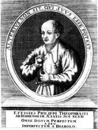
portrait de Paracelse
Tractatus II.
1. Paracelsische Schrifften, p. 1
2. Korndorfferische Schrifften, p. 55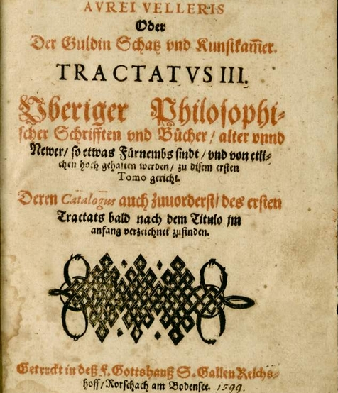
Aureum Vellus : Tractatus III
Tractatus III.
1. Splendor Solis, mit schönen Figuren, p. 3
2. Spiegel der Alchymey Herrn Ulrici Poyselii, p. 60
3. Clavis, sambt seiner Declaration der Chymischen handgriffen, p. 82
4. Allerley Particularia die handtgriff zuerlehrnen, p. 97
5. Ein Tinctur oder elixier eines unbekandten Philosophi, p. 114
6. Processus pro tinctura auff den Mercurium Solis und Lune, p. 123
7. Modus procedendi in praeparatione Lapidis Philosophici, p. 126
8. Dialogus Philosophiae, p. 145
9. Exemplum artis Philosophiae. Ein Exemplum der Philosophen Kunst, p. 153
10. De Lapide Philosophorum, xii capita incerti authoris, p. 157
11. Vom Stein der Weisen ein schöner Process Episcopi Melchioris Brixiensis Cardinalis Romae, &c., und ein Philosophischs Werck unnd Gespräch, von dem Gelben und Rotten Man, p. 177
12. Von dem Rebis einem Stein, p. 191
13. Varia Philosophica, p. 193
a. Capitulum, darinnen das gantze Werck kurtzlich begriffen, p. 194
b. Ein schönes Gedicht de Saturno philosophorum, p. 197
c. Ein Gespräch de Saturno philosophorum, p. 200
d. Ein Gedicht de Saturno philosophorum, p. 203
e. De Oleo Philosophorum, p. 205
f. Vera praeparatio Mercurii, p. 205
14. Tractatus vom Saltz der Weisen, p. 206
15. Novum Testamentum, p. 210
16. Von dem Philosophischen Bley, p. 211
17. Avicennae 7 regulae ex quibus componitur lapis Philosophorum, p. 213
18. Tabula Scientiae maioris, p. 214
19. De Quinta Essentia vini pulcherrimus tractatus, p. 216
20. Tabula Schmaragdina Hermetis Trismegisti patris Philosophorum, p. 236
The whole of this forms the first three tractates in the 1708-1718, Hamburg, collection entitled : Eröffnete Geheimnisse des Steins der Weisen (q.v.)
Ferguson : Trismosin, or Trissmosin, or Trissmosinus, tells us that after seeing transmutation effected by a miner who was an alchemist, 'his heart was sore' that he could not do the same, and so be started as a journeyman in 1473 and went wherever he had a chance to learn. After various adventures he came to Venice, where from Egyptian or Arabic books he acquired the whole secret, and made transmutation of all the metals. He met Paracelsus at Constantinople. This narrative is contained in "Tractat und Wanderschafft defs . . . Herren Salomonis Trifsmosini" with which the Aureum Vellus of 1599 opens. To the tincture also be ascribed not only the power of prolonging life, but also of rejuvenescence. With half a grain be made himself suddenly young, and with a medicine from the 'red lion' produced the same effect upon women of from seventy to ninety years of age, and it would be easy for him with his secret medicine to prolong his life to the last day. Kopp has examined the Aureum Vellus. and after giving a list of the tracts with the curious names, of which Trismosin is styled the author, concludes that the whole is spurious, and questions if there was such a person as Trismosin. His name is mentioned by Gmelin and by Schmieder, who also quotes Trismosin's process for transmutation. Borrichius is not complimentary to the Vellus Aureum: "scatet nugis et imposturis"; "omnia spirant ineptias," are his words. Lenglet Dnfresnoy places him in 1570. The ' Aureum Vellus' was translated by William Backhouse, and there is a MS. of it in the Bodleian. It has not been printed.
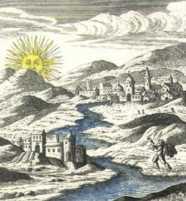
Aureum Vellus
Il n'est pas cité par Louis Figuier [l'Alchimie et les alchimistes, Hachette, 1860] ni par Albert Poisson [Théorie et symboles des alchimistes, Chacornac, 1891]. Jacques Van Lennep [Alchimie, Dervy, 1985], dans son merveilleux livre, nous en apprend beaucoup sur la figure de cet Adepte peu connu. Encore que, peu connu...Voire ! Ce serait sans compter sur E. Canseliet et Fulcanelli qui le citent dans leurs ouvrages. Par exemple : dans L'Arbre alchimique, E. Canseliet, dans son Alchimie (p.105-125, in Atlantis, 1934) exprime ces réflexions :
"Portant ainsi, sur une branche supérieure, un oiseau noir, l’arbre symbolise, plus clairement encore, cette racine métallique qui résiste à merveille au pouvoir d’oxydation, et qui assure, dans l’harmonie, la naissance du corbeau, de cette terre obscure et nettement distincte de la partie sous-jacente, blanche et volatile. Deux hommes, âgés et remplis d’expérience, discutent, avec animation, sur le problème de la capture pour laquelle vigueur et habileté sont nécessaires."Dans la section sur le Mercure, nous avons cité Fulcanelli à propos de la voie brève, c'est-à-dire de la voie sèche, où il nous disait qu'elle :
FIGURE I
(La Toyson d'Or de Salomon Trismosin, 5e figure, Andre le Sage)"...a été couverte d'un voile épais et nommée par les Sages le régime de Saturne ; elle ne nécessite que l'emploi d'un vase de terre et ne réclame que le secours d'un simple creuset."Cette voie a été retrouvée, nous le verrons plus loin, par les minéralogistes du XIXe
siècle. Dans la Toyson d'Or, Salomon Trismosin affirme que :"cette brève méthode, dont nous t'avons libéralement instruit, me semble la plus courte voie et la vraie sublimation philosophique pour parvenir à la perfection de ce grave labeur."A propos des imbibitions philosophiques, dont sont savons qu'elles sont à l'identique des laveures, E. Canseliet revient sur la XXe image de la Toyson d'Or de Salomon Trismosin. Nous les avons évoquées dans notre commentaire des Figures Hiéroglyphiques dont nous joignons ici la note 112 :
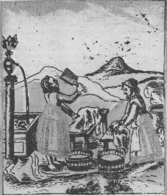
FIGURE II
(vingtième image de la Toyson d'or, de Salomon Trismosin, Andre le Sage)"Par ces affusions répétées...l'esprit s'unit aux portions pures du corps mercuriel, tandis que les parties grossières, hétérogènes et adustives se trouvent séparées. L'eau se joint au feu, le ciel à la terre...et cette alliance...trouve son expression dans la branchette d'olivier, qui est un emblème de paix, d'harmonie et de concorde. L'ensemble des opérations aboutissant à la blancheur par laquelle se termine le second oeuvre fit l'objet de l'un des douze travaux d'Hercule..."Et nous ne saurions mieux recommander à l'étudiant qu'il médite ce passage d'E. Canseliet :"A l'exemple de Médée, cette céleste créture glisse dans la poche de Cyliani un bocal bouché, contenant la liqueur nécessaire à détruire la fermeture du temple où les deux vases sacrés sont gardés par un dragon. Remarquons...que les Anciens dénommaient clef tout liquide ou menstrue propre à réaliser la dissolution d'une base, et que, par suite, le signe graphique du vitriol philosophique empruntait exactement son dessin à l'objet métallique qui ouvre les serrures." [Etudes de symbolisme, La Toison d'or, p. 221]
La table des caractères chymiques, du cours de chymie de Nicolas Lemery, permet d'identifier infailliblement trois composés : le nitre, le vitriol et les Jumeaux, signe céleste. Nous noterons enfin que, par une curieuse coïncidence, le symbole inscrit dans le double cercle n'est autre qu'un hiéroglyphe moderne qui, évidemment, ne peut avoir nul rapport avec notre sujet : le transistor. De là, nous pouvons tirer, par le sel nitre, le symbole céleste dédié à aphronitrum ; le vitriol est bien sûr symbolisé par Mars et les Jumeaux représentent le double Mercure [cf. section sur le tartre vitriolé]
¯ - le Bélier renvoie à Arès, symbolisant l'antimoine d'après Isaac Newton ; mais nous sommes obligés d'y voir aussi le symbole du vitriol vert et celui du Bélier Chrysomelle dont parle E. Canseliet dans ses Etudes de symbolisme [la Toison d'or]. En nous parlant de la fuite de Phrixos, transporté avec sa soeur par le bélier à la toison d'or, c'est de l'élixir des Sages qu'il nous parle, c'est-à-dire du soleil caché sous l'étoile ou du grain fixe du métal.
¯ - le Taureau est là apparemment pour Vénus (= cuivre). Il renvoie au sel nitre ou à l'huile de tartre ou à du foie de soufre. Il est indispensable dans la préparation du Mercure par la voie sèche. Sur ce même sujet, dans la Toison d'or, E. Canseliet nous en dit plus :"Or, il y avait dans un bois de la rive gauche du Rhône, un dragon dont la gueule était garnie de dents énormes et qui s'attaquait à tous les voyageurs. Bien qu'il frappât de mort tout ce qui le touchait, Marthe entra dans le fourré, affronta le monstre et, l'aspergeant d'eau bénite, lui présenta la croix. Le dragon devint alors doux comme un agneau, se laissa attacher, et le peuple vint le tuer à coups de lance."L'allégorie est claire : la matière première est figurée par un bois d'où la première matière est extraite par une « eau bénite », c'est-à-dire du foie de soufre terreux [polysulfure de calcium] mais qui peut être aussi du foie de soufre [mélange de sulfate de potasse et de pentasulfure de potassium]. Retournons au texte d'E. Canseliet, dans ce même chapitre de la Toison d'or :"...Jason...après avoir coupé la tête du dragon, dompte les deux taureaux lancés contre lui. Donnés en présent à Aetès par Vulcain, ces terribles fauves...avaient les pieds et les cornes d'airain, et lançaient du feu par les naseaux et la bouche. C'est avec ces taureaux...que Jason laboure le champ de Mars [Arès], dans lequel il sèmera ensuite les dents prises au dragon."Jason, dans cette allégorie, tient le rôle de Persée qui décapite la Gorgone et libère Pégase [la première matière]. Les taureaux lancés contre lui disent assez de quel sel peut se tirer cette première matière [l'aide de quelque alkali fixe viendrait aussitôt nous libérer du doute...] ; quant au cornes d'airain, c'est assez d'indication sur la destination future de cette première matière, indispensable à la préparation du Compost philosophal ; le champ de Mars symbolise toute substance comprenant de l'acide vitriolique et explique pourquoi certaines substances changent d'un texte à l'autre ou d'un alchimiste à l'autre [cf. section chimie et alchimie ; § vitriols]. L'une des deux matières premières est d'essence vénusienne. Vénus-Aphrodite cache la terre damnée qui contient en son centre le sel fixe, incombustible, voilé sous l'épithète de stibew ou marmaroV. On se reportera à la section héraldique et alchimie pour mieux comprendre ce point de science et le rapport qui existe entre le dragon et Lucifer. On peut comprendre à présent pourquoi :"L'arrachage des dents du monstre voile l'extraction délicate de la semence métallique qui, véritable salamandre, demeure incombustible au milieu des cendres issues d'une vive calcination." [la Toison d'Or, p. 227]Il est clair que cette semence métallique ne peut être autre chose que la matière extraite -à l'état de pureté- de la terre de Chio, cette terre qui permettait aux Anciens de fabriquer de l'asèm [l'asèm, d'après M. Berthelot - Introduction à la chimie des Anciens - désignait divers alliages destinés à imiter l'or et l'argent]. Notons ici que par Terres, les Anciens désignaient sous ce nom divers calcaires et surtout des argiles blanches ou grisâtres, employées comme fondants en métallurgie ; on distinguait ainsi la terre de Chio, la terre de Samos et la pierre de Samos, la terre cimolienne, la terre d'Erétrie, la terre de Melos [assimilée au tripoli], la terre de Sélinonte, la terre de Lemnos, le Paroetonium, le pignitis, l'ampelitis ou schiste bitumineux, etc. La terre de Lemnos était une sanguine [oxyde de fer hydraté].
Dans la Toison d'or, E. Canseliet nous entretient à mots couverts de l'étoile du matin et des substances masquées sous cet hiéroglyphe :"De même devons-nous nous souvenir de ce que nous rapporte Fulcanelli de cette tête de diable qui se voyait à Notre-Dame de Paris, que le peuple de Paris appelait Maistre Pierre du Coignet...offrant...le saisissant hiéroglyphe du chaos primordial...et là reposent en outre la cause secrète...de la nativité nocturne, à l'abri d'une caverne profonde, du tout petit enfant de Bethléem de Juda."Ce texte est admirable de cabale : nous avons vu dans la section sur les Principes que le diable -Lucifer- personnifie directement l'étoile du matin [Vénus-Aphrodite] et voile le sel qui contient ce que les Anciens appelaient le nitrum factice, préparé avec les cendres de chêne. La tête du diable représente le Caput obtenu par l'attaque de ce sel avec un vitriol [cf. section du tartre vitriolé et laboratoire 2]. On relèvera la liaison, riche de cabale, entre le mot ammokonia et la «Maistre Pierre du coignet » [les Mystères, p. 61] par laquelle l'Adepte définit la pierre d'angle de l'Oeuvre. Nous ferons remarquer au lecteur que ammokonia peut s'écrire par permutation ammoniako ; c'est l'équivalent du sel « harmoniac » des alchimistes. Le secret « arcanum » révèle une partie de la nature du dissolvant. Cette « Pierre du Coignet », c'est le début de l'oeuvre ; il s'agit de la maîtresse pierre du coin ou de l'angle, cette pierre angulaire qu'évoque Fulcanelli :"Quant à la taille de cette pierre angulaire, -nous entendons sa préparation-, on peut la voir traduite en un fort joli bas-relief de l'époque, sculpté à l'extérieur de l'édifice, sur une chapelle absidiale, du côté de la rue du Cloître-notre-Dame." (Les Mystères, p.61)Nous ajouterons que cette pierre angulaire a pour nom cabalistique le Gay sçavoir et que :"Les anciens Incas l'appelaient Langue de cour, parce qu'elle était familière aux diplomates, à qui elle donnait la clef d'une double science." (Les Mystères, p.58)Cette science double, en liaison avec l'arcane évoqué par E. Canseliet, donne la clef de l'énigme et le nom commun du dissolvant universel. Quant au bas-relief de la chapelle absidiale, ne la cherchez pas car elle n'existe pas...ou du moins, elle n'a pas d'existence physique : c'est donc en nous-même qu'il faut chercher ce bas-relief ; là encore, la cabale hermétique [le Gay-sçavoir] va nous permettre de résoudre l'énigme de Fulcanelli. La taille de cette pierre angulaire, nous l'avons montré dans d'autres sections, n'est compatible qu'avec un travail sur du marbre statuaire ou sur du calcaire ; encore n'est-ce là, au vrai, qu'une première approximation quand on connaît la parenté chimique entre la terre de Chio et le titanoV [pierre calcaire, chaux] et le guyoV [plâtre] ; du reste, le mot que l'on évoqué supra [ammo-konia] n'est, après tout, qu'un mélange de chaux et de sable. On pourra être plus précis en comparant cette pierre angulaire tout simplement à la sélénite [la pierre de lune des Sages, qu'il ne faut pas confondre avec l'orthose, pierre de lune vulgaire] : c'est le véritable stibium de tollius, l'antimoine saturnin d'Artéphius, c'est-à-dire l'aphro-selinon ou pierre spéculaire, appelée aussi pierre de Jésus ou encore glace de Marie ; la blancheur, la légèreté, son aspect translucide, tout en bref la désigne comme l'un des sujets de choix de l'Oeuvre : c'est, à proprement parler, le fou de l'oeuvre comme le nomme Fulcanelli.
Ce travail sur le marbre statuaire renvoie au métier de graveur ou de ciseleur [caelator, de caelo = graver, ciseler, buriner et donc : tourmenter par cabale ; c'est évidemment l'expression bas-relief = op. uscaelatum, caelatura qui est à la base de notre supposition] ; enfin, se dit caelo doit être rapproché de caelum qui trouve deux acceptions différentes ; la 1ère renvoie à l'outil d'attaque de la matière, c'est-à-dire au ciseau et au burin qui figure, à n'en point douter, l'épée du chevalier dans la lutte qui l'oppose au dragon et dont le résultat sera le Caput, première matière du dissolvant. La 2ème acception de caelum est bien sûr, le ciel, la voûte céleste, mais aussi la voûte et l'air de façon plus générale. Nous revenons ainsi à la rosée de mai, matière née dans le ciel et qui coule littéralement du ciel [caelifluus]. On peut en rapprocher [référence au nombre 7] le mont Caelius [épithète d'Apollon]. Les alchimistes conseillent en effet à l'étudiant de « scruter » la Nature : la pierre spéculaire que l'on vient d'évoquer contient donc un autre sens, là encore par cabale, qui renvoie au miroir [speculum] mais aussi à la grotte, à la caverne [specus] ; cela nous permet de jeter un nouveau regard sur ce que dit E. Canseliet, quand il assure que :"...et là reposent en outre la cause secrète...de la nativité nocturne, à l'abri d'une caverne profonde, du tout petit enfant de Bethléem de Juda."donc, répétons-le : le simple rapport à établir entre les deux mots caelator et caelum [ce dernier par le biais d'une homonymie parfaite] permet d'expliquer une grande partie de la portée ésotérique de la rosée de mai. Quant à la chapelle absidiale, elle renvoie aussi [par fornix] à la voûte, l'arc mais aussi à l'arc de triomphe [Currus triomphalis de B. Valentin] et enfin, à la partie postérieure des basiliques romaines [le choeur étant assimilé à l'athanor]. Il n'est pas jusqu'au cloître qui n'évoque quelque enciente secrète et réservée [arcanum]. Enfin, toujours dans la Toison d'or (Alchimie, p.204)- E. Canseliet se livre à une variation sur le thème de Phryxos :"...quelle étrange et mystérieuse parturition minérale s'accomplit sous la surface bouillonante du bain incandescent...Néphélé disparaît pour laisser la place à Ino [Ino fut appelée Leucothéa] qui tient le rôle du mercure mondé par les sublimations...Ino était la fille de Cadmos et d'Harmonie s'identifiant...le premier à leur cadmie (terre noire), la deuxième, à leur sel harmoniac auquel le labeur philosophal doit d'avoir été nommé art de musique..."Néphélé est une Nuée, créée par Zeus ; on peut la considérer de ce fait comme un équivalent hermétique de la rosée de mai [le grand dieu Maïus, Jupiter]. Les deux enfants de Néphélé, Phrixos et Hellê peuvent, eux aussi, être considérés comme équivalents aux deux colombes de Diane ; en ce sens, Néphélé contracte d'étroits rapports avec Latone ; Ino est la pierre blanche résultant de la « mondification » du Mercure [il s'agit ici de l'alkali fixe] ; on se souvient d'Aiétès, roi de Colchide, qui donna le fameux bélier à la toison d'or à Phrixos. On ajoutera que la toison d'or était consacrée à Arès [le dieu batailleur et indomptable] ; quand on saura qu'Aiétès est fils du soleil, on ne sera pas loin de pouvoir reconstituer les morceaux du puzzle : Aiétès est le Soufre rouge ; l'Hellespont, détroit de la mer Noire [le Pont] où s'abime Hellê représente cette partie de l'oeuvre où les deux Soufres disparaissent [2ème putréfaction de Le Breton] ; la toison d'or est le Soufre blanc ; quant à Phrixos et Hellê, promis au sacrifice, ils ne peuvent correspondre qu'aux deux Jumeaux, c'est-à-dire au Mercure philosophique. Nous avons eu l'occasion de nous pencher sur les rapports hermétiques entre le mythe des Argonautes et cette légende de la toison d'or.
Un peu plus loin dans son article la Toison d'or (Alchimie, p.211), E. Canseliet s'étend sur ce fameux bélier :"L'image de cette séparation nous est offerte par le bélier Chrysomelle dont la merveilleuse dépouille devait éveiller plus tard la convoitise des Argonautes...«La Toison d'or est la matière employée à l'Oeuvre philosophale et le nom symbolique de la pierre philosophale» S'il est digne de remarquer que le bélier Chrysomelle ait été le fruit des amours de Neptune (Poséidon) et d'une vierge...Ainsi, du moins, la nature aqueuse et mercurielle de ce bélier, issu du dieu des mers, nous est-elle suffisamment précisée, comme l'est sa vitalisation par l'esprit universel..."C'est autour du soufre blanc qu'est axée cette citation : c'est la toison de l'or, c'est-à-dire « ce qui porte l'or » ; il s'agit d'une substance très dure et qui, séparée de son Soufre, ne vaut presque rien. quant à Poséïdon, père de Protée, nous en avons suffisamment parlé dans la section du Soufre pour qu'on nous permette de passer outre. Nous extrayons à présent ces commentaires du livre de Van Lennep [l'Alchimie, Dervy, 1985], qui permettront au lecteur de se faire une idée sur le Splendor solis.
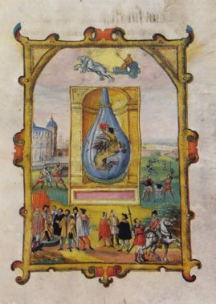
Lux lucend in tenebris s.a. Angelus lucis 1584, Kassel, Landesbibliothek MS. 8º Chym. 21.
De Salomon Trismosin, l'on ne connaît que le peu révélé dans l'introduction de l'Aureum vellus (la Toyson d'or), publié à Rorschach en 1598. Sa passion pour l'alchimie naquit le jour où il assista à une transmutation opérée sur le plomb par Flocker, un mineur qui, peu après, tomba au fond d'un puits de mine, sans avoir pu révéler son secret. Comme la plupart des néophytes, Trismosin se mit alors à voyager. L'on était en 1473. Il arriva chez un droguiste associé à un Juif. Tous deux, qui transmutaient de l'étain en argent en très grande quantité, l'acceptèrent comme aidant jusqu'au jour où il partit pour Venise avec le Juif et une partie de l'argent. Trismosin en profita pour faire tester le métal qui ne résista ni à la coupelle, ni au feu. Déçu, il trouva de l'embauche dans un laboratoire considérable, extrêmement bien équipé et fourni en produits de toutes sortes. Il était dirigé par un Allemand, Halls Tailler, qui apprécia le travail de son compatriote. Le propriétaire, Centilon, payait très cher non seulement des livres mais aussi des recettes dont Trismosin put prendre connaissance. Malheureusement, Centilon finit noyé lors d'une fête célébrant les noces du doge et de la mer. Le laboratoire fut fermé et Trismosin reprit son voyage. Au cours de celui-ci, il put prendre connaissance d'ouvrages en langue égyptienne qui lui révélèrent enfin les secrets de la transmutation. Son périple le mena à Constantinople, en 1520, on il aurait rencontré Paracelse. [...] Les invraisemblances de ses écrits incitèrent quelques auteurs à mépriser Salomon Trismosin. [...] Son oeuvre fut cependant très réputée dès le XVIe siècle. L'alchimiste et orientaliste Pierre Victor Cayet (1525-1610) la qualifia de sublime et lorsqu'il annonça en 1605 la traduction par ses soins du Splendor solis, il révéla que Trismosin était l'auteur d'une série de traités restés inconnus.
Quel que soit le doute qui plane sur la personnalité de Salomon Trismosin, cela n'affecte nullement l'importance de son traité Splendor Solis, [Splendeur du Soleil] qui, par ses illustrations, constitue un des monuments de l'art alchimique. Ce manuscrit, dès qu'il fut enluminé, jouit d'une très grande réputation, si l'on en juge par le nombre de ses copies jusqu'au XVIIIe siècle. L'exemplaire le plus ancien contient deux dates, 1532 et 1535. En assez mauvais état, il est conservé à Berlin. Des copies en furent faites par la suite, dans le dernier tiers du XVIe siècle. Elles sont conservées à Berlin, à Nuremberg à Cassel, ainsi qu'à Londres (British Museum). Cet exemplaire est daté 1582, de même qu'un autre, dans une collection privée à Berne. Celui de Cassel qui fut très détérioré au cours de la dernière guerre, contient les dates 1584 et 1588.
A ces manuscrits qui, tous, furent signalés par Hartlaub, il convient d'ajouter celui de Paris (Bibliothèque Nationale) qui curieusement n'a jamais été mentionné bien qu'il apparaisse, par sa date 1577, comme le chaînon intermédiaire. Selon une note qui figure en tête, il aurait appartenu à Rodolphe II. Il semble qu'une version française plus tardive existe, également conservée dans cette Bibliothèque: la Toyson d'Or qui peut être datée du premier quart du XVIIIe siècle[c'est ce texte-là que le lecteur consultera ; nous y avons rapporté en niveaux de gris les 22 figures de l'édition de Londres qui sont consultables, en couleurs, dans le remarquable site The alchemy web site and virtual library ].
Son texte s'inspire de la traduction faite par un certain L.I. pour l'édition chez Charles Sevestre, à Paris, en 1612 [Bernard Husson, Commentaires iconographiques]. Il n'est pas impossible que d'autres exemplaires cachés dans l'une ou l'autre bibliothèque, finissent par apparaître un jour.
Les illustrations du manuscrit le plus ancien, de 1532-1535, furent étudiées par Hartlaub qui, se fondant sur quelques rapides analyses antérieures, tenta de cerner le milieu dans lequel elles avaient été exécutées. Il se tourna vers les élèves ou l'entourage de Dürer, à Nuremberg. Cette attribution est très vraisemblable et nous ne pourrons que l'étayer dans la mesure où cet historien ne fournit que peu d'arguments. Trois noms furent avancés par Hartlaub,ceux de Simon Bening, de Nikolaus Glockendon et de Hans Sebald Beham,des artistes dont le style se retrouve dans le Splendor Solis et dont, c'est important, on trouve la signature ou l'influence directe dans un missel d'Albert de Brandebourg, évêque de Mayence. Celui-ci est antérieur de quelques années au Splendor, puisqu'il date de 1531. Winkler y découvrit la marque de l'atelier du Flamand Simon Bening (né vers 1483-84 à Gand - mort vers 1561). II excellait comme miniaturiste, présentant ses sujets selon une mode néerlandaise typique (telle qu'on la trouve notamment chez le Maître de l'Hortulus) dans des encadrements en retable, en bordure naturaliste avec fleurs, fruits et insectes, ou encore animés de scènes de genre. Toutes les peintures du manuscrit de Trismosin sont présentées de cette manière. [...]
Tous les manuscrits du XVIe siècle comportent 22 peintures, sauf celui de Paris qui
n'en présente que 21 et l'exemplaire de Berne qui, selon Hartlaub, en aurait 24. Les peintures en excédent représentent Mercure et Saturne d'une part, un griffon s'échappant d'une grotte d'autre part. L'on en déduisit qu'à l'origine, le manuscrit aurait pu comporter vingt-quatre peintures. Bernard Husson rapprocha le nombre du manuscrit originel de celui des lames du tarot.
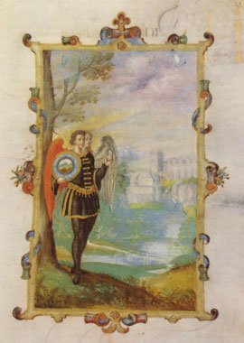
Lux lucend in tenebris s.a. Angelus lucis 1584, Kassel, Landesbibliothek MS. 8º Chym. 21.
Dans le manuscrit de Cassel, cette série de peintures s'ajoute à une vingtaine d'autres indépendantes du texte du Splendor qui ne constitue qu'une partie du recueil. S'il n'avait été détérioré, celui-ci constituerait sans conteste par le nombre et la qualité des illustrations, une des pièces maîtresses de l'art alchimique. S'agirait-il de l'exemplaire de Rodolphe II qui l'aurait cédé pour cent ducats au landgrave Moritz de Hesse ? L'ordre des illustrations varie d'un manuscrit à l'autre, comme d'ailleurs par rapport aux imprimés. Des différences notables apparaissent surtout dans le choix des encadrements. Là où, dans le manuscrit le plus ancien, on trouve un retable, pourra apparaître dans les manuscrits de Londres, Nuremberg, de Paris et le plus récent de Berlin, une bordure fleurie. Les deux premiers dominent ce groupe pala qualité de leur style et de leur exécution. Celui de Berlin révèle une facture plus rapide, réalisée par un copiste qui, distrait sans doute, omit certains détails, comme la fenêtre de la salle où jouent des enfants. Quant à celui de Paris, il est d'une exécution vraiment expéditive, pour ne pas dire bâclée par endroits. Les paysages, décors et encadrements du manuscrit de Cassel sont très distincts. La différence la plus importante entre les deux plus beaux exemplaires, ceux de Londres et de Nuremberg, tient au fait que ce dernier montre les vases animés, accompagnés d'inscriptions. Les cartouches en sont dépourvus dans l'autre.
La Toyson d'or, version tardive et écrite du Splendor solis, constitue un texte indéniablement important. C'est l'un des rares textes qui se réfère à Alphidius [dont parle F. Hoefer dans son Histoire de la chimie] et qui donne de nombreuses citations de la Tourbe des Philosophes. Il est impossible d'en donner un commentaire très détaillé ; aussi n'avons-nous rédigé que quelques notes intercalées dans le texte comme dans la section des textes divers. Ce texte fait aussi, en dernière partie, comme curieusement celui de Cyliani [Hermès Dévoilé] une allusion très nette à la fabrication artificielle des pierres précieuses (1, 2).C'est aussi un traité d'interprétation délicate, car il mêle adroitement des points de symbolisme touchant à la voie sèche et d'autres touchant à la voie humide. Cette voie humide est, selon nous, totalement une vue de l'esprit et constitue sans doute la véritable projection alchimique de l'esprit même de l'Artiste. En d'autres termes, tout ce qui a trait à la voie humide est totale allégorie. Sinon, nous le répétons, elle ne peut conduire qu'à une impasse. Curieusement, c'est pourtant la voie humide qui prévaut en général dans les traités, alors qu'historiquement, c'est la voie sèche qui a été utilisée en premier. Geber est, à cet égard, très sûr à lire. Notez enfin que Trismosin cite à de nombreuses reprises Morien le Romain, dans ses Entretiens à Calid, ouvrage rare et remarquable.
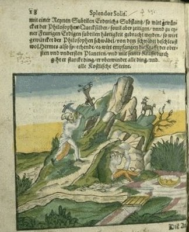
Splendor solis, p.18, planche de cet ouvrage en langue allemande figurant des mineurs extrayant des minerais - http://euromin.w3sites.net/photosensmp/photos.html
Note : Les gravures de la version originale de la British Library, datant de 1582, renvoient par lien à des versions agrandies dans la verson de Nuremberg datant de 1598. Voici des notes empruntées, là-dessus au site levity :
The Splendor Solis is one of the most beautiful of illuminated alchemical manuscripts. The earliest version, considered to be that now in the Kupferstichkabinett in the Prussian State Museum in Berlin, is dated 1532-35, and was made in the form of a medieval manuscript and illuminated on vellum, with decorative borders like a book of hours, beautifully painted and heightened with gold. The later copies in London, Kassel, Paris and Nuremberg are equally fine.
The work itself consists of a sequence of 22 elaborate images, set in ornamental borders and niches. The symbolic process shows the classical alchemical death and rebirth of the king, and incorporates a series of seven flasks, each associated with one of the planets. Within the flasks a process is shown involving the transformation of bird and animal symbols into the Queen and King, the white and the red tincture. This echoes the Pretiosissimum Donum Dei sequence which is probably earlier, dating from the 15th century. Although the style of the Splendor Solis illuminations suggest an earlier date, they are quite clearly of the 16th century.
The Splendor Solis was associated with the legendary Salomon Trismosin, allegedly the teacher of Paracelsus. The Trismosin writings were later published with woodcut illustrations, in the Aureum Vellus, oder Guldin Schatz und Kunst-kammer, 1598, which was reprinted a number of times. A French translation, entitled La Toyson d'or, ou la fleur des thresors was issued in Paris in 1612 with a number of very fine engravings, some copies of which were hand-coloured.The following images were provided by Andre Le Sage.
There are 18 manuscripts of the Splendor solis (not all early or with illustrations), but the earliest copies are thought to be from around 1532. The well known manuscript in the British Library is dated 1582. The work has 22 coloured drawings most of them in ornate frames. The descriptions below are of the core symbolic material taken from the printed versions. It was issued under the authorship of Salomon Trismosin, Aureum vellus, Rorschach, 1598 with 22 woodcuts. This was reprinted at Hamburg in 1708 with engraved versions of the images. It is now thought that the Splendor solis was written by Ulrich Poysel.
__________
S.L. MacGregor Mathers is credited with an early work on the Splendor Solis, his notes on the obvious Kabbalistic and Arcana Major Tarot implications of 22, not to mentioned the alchemical symbolism, would have proved of interest had they survived. Ithell Colquhoun writes in the Sword of Wisdom, MacGregor Mathers and the Golden Dawn, G.P. Putnam's Sons, New York, 1975:
" Besides Egyptian Symbolism, another book by Mathers which no one seems to have seen is his edition of the Splendor Solis by the fifteenth-century alchemist Salomon Trismosin, reputed occult teacher to Paracelsus. Edward Garstin valued this work highly and cited it several times in his own alchemical writings, especially the unpublished Alchemical Glossary. Trismosin was also the author of The Golden Fleece, one of the treasures of the British Museum’s manuscript library, its coloured illustrations even rivalling the miniatures of Les Très Riches Heures du Duc de Berry.
Mathers passed his manuscript to F. L. Gardner, perhaps in part-payment of financial obligations, and Gardner published it about 1907 in the hope of recouping expense on some of Mathers’s other work for which he had agreed to be responsible. But he did not let Mathers know what he had done, and the latter (understandably) protested. It must have been a very small edition and copies are scarce—if Ellic Howe has not seen one, who has? Again, there is no trace of it in the British Museum catalogues. Mathers’s introduction and notes, if such there were, would be worth reading as his insight into alchemy is scarcely recorded elsewhere and would illuminate the Order’s teaching on the subject."
LA TOYSON D'OR
La Toyson d'Or, ou la Fleur des Thresors, en laquelle est succinctement &
méthodiquement traicté de la Pierre des Philosophes, de son excellence,
effects & vertu admirable. Plus de son Origine, & du vray moyen de
pouuoir paruenir à sa perfection. Enrichies de Figures, et des propres
Couleurs représentées au vif, selō qu'elles doiuēt nécessairement arriuer en
la pratique de ce bel Oeuure. Et recueillies des plus graues monuments
de l'Antiquité, tant Chaldeens, Hébreux, Aegyptiens, Arabes, Grecs, que
Latins, St autres Autheurs approuuez. Par ce Grand Philosophe Salomon
Trismosin Précepteur de Paracelse. Traduict d'Alemand en François, &
commenté en forme de Paraphrase sur chasque Chapitre par L. I. A
Paris, Chez Charles Sevestre, rue S. lacques deuant les Mathurins.
M.DC.XII. Avec Privilège du Roy.
8°. Pp. 13 [3] 219 [5 blank] Curious engraved title extra, dated 1613. 24 symbolical etchings pasted into the book. No. 21 is blank. These etchings are not coloured, as is evident from the title was intended, and as they are in the German
original. There was a previous edition of 1602, according to Gmelin.
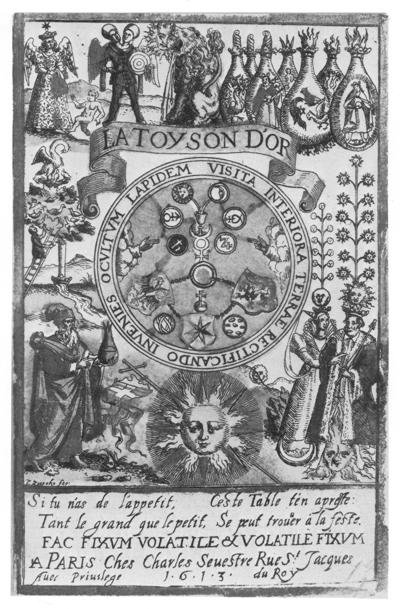
Salomon Trismosin - frontispice de La Toyson d'or, 1613
[on remarque que la gravure n'est pas originale : on reconnaît au centre le mandala déjà employé dans l'une des éditions de l'Azoth et dans l'un des premiers écrits R+C. Nous l'avons commenté dans les Douze Clefs de Basile. De gauche à droite et de haut en bas, on relève : la reine de la Nuit, portant son étoile : on trouve son pendant, sous forme lapidaire, dans l'un des bas-reliefs de Notre Dame de Paris, exprimant la condensation de l'Esprit universel. Puis le Rebis, portant une cible, hiéroglyphe du serpent - la cible est l'un des symboles que Basile Valentin expose dans sa Clef VIII des Douze Clefs de Philosophie. Le Lion dévore le Soleil : emblème emprunté du Rosarium Philosophorum. Des matras scellés où l'on voit des scènes de l'Aurora Consurgens. Ensuite : l'Arbre de la Connaissance, cf. figure I. À droite, l'Arbre solaire et l'Arbre lunaire, remployés du Rosarium Philosophorum avec un Roi terrassant le Lion, scène qu'on voit encore dans l'un des emblèmes de Mylius. Enfin, en bas et à gauche, un vieillard portant un matras, cf. figure II. On notera que l'attitude adoptée évoque celle du Paster Hermes philosophorum, accompagnant le recueil Miscellanea di Alchimia, XVe siècle, de la Bibliotheca Medica Laurenziana, Florence. L'étoile des philosophes est remplacée par ce matras d'où la nigredo s'exhale... Plus haut, l'arbre du Mercure philosophique avec un pélican au faîte, une couronne à sa base et une source qui s'écoule de ses racines : plusieurs aquarelles de l'Aurora consurgens rappellent ces allégories ].
Alphidius
[l'alchimiste arabe Alphidius est l'auteur d'une allégorie : un prince emporté par un ange au sommet d'une haute montagne est ramené à son père qui le dévore tout vif ; ce dernier, dissous par une pluie divine transsude son fils qui renaît, uni à lui, sous une forme supérieure. Cette allégorie a été développée par Lambsprinck dans son De Lapide philosophorum ; l'allégorie exprime peut-être d'une part la naissance d'Athéna, sortie tout armée de la tête de Zeus àkoruqa-gevhV, proche de koruqhà sommet d'une montagne, mais aussi sommet de la tête ; la suite se rapporte à la dissolution radicale dans le Mercure philosophique ; cet alchimiste est cité par Van Lennep, p. 58 de son Alchimie : Alphidius prétendait que les médicaments devaient être comoosés selon des proportions géométriques et harmoniques comme c'est le cas en musique ; cité in Hoefer, Histoire de la Chimie, vol. I, 2ème période ; il semble que l'Aurora consurgens qui recommande comme qualité principale l'humilité -l'humble ne se rapproche-t-il pas de la Terre ?- se réfère pour partie à Alphidius]
à bon droit estimé l'un des plus célèbres et recommandables à la postérité d'entre les anciens et sages Philosophes de son temps, nous propose en ses divins écrits, que la contemplation ordinaire, considération mystérieuse et lecture continue des auteurs approuvés, renommés, suffisamment pour tels recommandés, et qui nous ont à qui mieux divinement traité de cet œuvre, chanté ni révéré des plus rares esprits, qui par curiosité digne d'un tel sujet, ou par compassion d'y voir tant d'âmes aveuglées y consommer le temps, ont bien sagement daigné produire au jour quelque brillante étincelle de l'excellence de notre Lion qui se connaît à la patte, pour arrhes seulement de l'ardente lumière qu'ils en ont retirée, ou pour juger pour le moins à peu près, de la pierre précieuse par l'examen de cet échantillon sacré ; ce sage dis-je et prévoyant docteur dit que la recherche de ce Soleil terrestre rapporte autant ou plus de fruit et de contentement aux nourrissons doctement élevés sous la providente tutelle de cette science surhumaine et sans doute céleste, amiablement nourris de l'agréable lait de sa mamelle et amoureuse et savoureuse ; qu'elle peut de mépris et mécontentement aux oreilles bizarres de ces doctes ignorants, qui n'ont l'entendement assez rassis pour en juger pertinemment et comprendre l'effet d'un mystère si haut, si grave et sérieux, la vue assez subtile pour en voir le sujet, ni le cerveau de soi suffisamment timbré pour arrêter le prix de cette perle inestimable : mais seulement nourris, élevés et soulagés, rassasiés, ou pour mieux dire entretenus du suc amer d'ignorance, se rendent incapables de viandes plus solides pour digérer à point nommé et se remettre à tout propos comme un objet devant les yeux, l'art de la Pierre des Sages que nous disons le Ciel des Philosophes [voir l'Air des Sages ; Introïtus, VI].
Mais à ceux-là ne conseillerai-je jamais aussi de s'empêtrer plus avant dans les vagues replis de la Toison dorée, non pas même toucher du moindre bout du doigt ni des lèvres seulement ce Dédale inépuisable de leur faible portée ; pour ce que ces cervelles écervelées ne sont pas appelées au triomphe glorieux de ce degré d'honneur, promis et assuré aux âmes seulement philosophes, non pas à tous venants, ni s'embrouiller l'esprit, assez capricieux d'ailleurs, d'oser sucer le miel des délices de nos judicieux écrits : étant plus à propos, utile et profitable à ces têtes ignorantes d'en préférer le souvenir du coût au mérite du goût sans l'exercer à ce labeur, ni faire quelque épreuve si chétive que ce soit, de notre opération divine ; mais plutôt retirer du verger verdoyant de nos précieuses Hespérides le nez infructueux de leur insuffisance, incapable des propositions trop subtiles pour leur chef, de notre œuvre excellente, à l'égard disproportionné de leurs faibles pensées. Notre céleste Muse ne s'amuse pas aussi aux caprices indifférents de tout le monde en gros, mais en détail considère les uns pour mépriser les autres, faisant un choix sortable de ses plus favoris et de ceux qu'elle peut reconnaître vrais enfants de la science, les appelant bénignement auxplus heureux rayons de ses rameaux dorés, au lieu qu'elle éloigne les autres tant qu'elle peut de ses foyers.
Profanes n'approchez de nos trésors sacrés. Aux élus seulement saintement consacrés.
Rhasis n'en pense pas moins au traité qu'il a fait de la lumière des lumières. Nul ne doit, dit-il, tant de soi présumer, sans espoir assuré d'encourir, par le blâme certain la honte qu'il mérite, étendant ses désirs au-delà des imprudentes limites de sa capacité pour puiser à son gré dans les faibles ressorts de son débile esprit, l'essence pure et nette des mixtions admirables, quoiqu'à eux inconnues, des parfaits éléments. Aussi qu'à vrai parler, de telles sortes de gens y mettant plus qu'ils n'en recueilleront,s'apprêtent plus de confusion que de contentement, plus de brocard que de soulagement, plus sujets mille fois à l'appréhension d'un triste châtiment, qu'au gain du fruit prémédité ; sans se ressouvenir de la verge d'Apelle, qui reprit en deux mots la scientifique présomption d'un rogue savetier par la baguette de sa rigueur, à l'instant qu'il pensait proprement étaler son discours importum hors les droites clôtures de son simple soulier, pour reprendre imprudemment, et à l'égal d'un vénérable censeur, lestraits et le portrait de son grave tableau : Tu pouvais, lui dit-il, parler de ta pantoufle [allusion à calceus, soulier, de calx, homonyme de la chaux ; allusion aussi à l'alun, par aluta, soulier de cuir souple préparé par de l'alun]. Mais non pas d'un pourpoint [c'est-à-dire d'un bustier ; cf. allusion au bustier d'Aphrodite dans l'Introïtus VI], d'un bras [le moyen ou artifice évoqué par Fulcanelli] ou d'une moufle [la partie du fourneau où l'on doit cuire le Compost philosophal].
Aussi est-ce pourquoi fort à propos, la Bienséance pour éviter le blâme envenimé, et la censure d'un public ombrageux, nous met devant les yeux ce point de modestie : Plus qu'on ne peut on ne doit essayer. Et tel en bruit qui ne sait bégayer. Avec cette autre colonne qui lui sert d'étançon et de solide appui : exerce simplement ce que la connaissance de ton art t'a donné, et fais expérience de ce que tu connais. Mais quoi, chacun dorénavant en ce temps misérable s'en fait tant et tant accroire, et se flatte tellement en son opinion, qu'il ne trouve plus rien de trop chaud, que sa main d'arrogance ne prenne impunément, pensant bien rencontrer en ce siècle de fer, quelques siècles dorés, et plus assurément que la fève au gâteau : l'ignorant accablé dedans son ignorance, Veut ores discourir d'une docte science, pensant même savoir tout ce qu'il ne sait pas. Tellement éventés, que tenant un grand quartier des caprices de la lune, ils se rompent la tête à la penser faire descendre avec ses influences sur le corps de la terre, mère des éléments, même par un sentier qu'ils ne connurent jamais; seulement appuyés sur les apparences naturelles d'une curiosité concupiscente et désireuse de nouveautés. Mais si tant est que, ignoti nulla cupido, selon le Philosophe, quelle apparence peuvent-ils concevoir des effets transcendants de notre bon génie ? Leur esprit plus léger qu'une légère nue ne peut pas bien parler d'une chose inconnue. Et non plus que les aveugles qui ne peuvent pas juger des couleurs, étant privés de la vue, ainsi les ignorants ne peuvent-ils parler qu'en bégayant ou les pieds sous la table, du ciel des philosophes : Si te fata vacant, aliter non, dit Augurel en sa Chrysopée :que si du ciel la faveur t'est donnée, adonne-toi à cet art précieux puisque d'ailleurs elle n'est ordonnée aux plus savants que par le don des dieux.Aussi commencerais-je à faire plus d'état de leur bon jugement, s'ils se développaient de cette onéreuse recherche, qui ne se laisse aisément manier à l'importunité de ces brusques avortons de science. Tous ceux qui l'implorent et présentent leur esquif àl'embouchure de ce golfe, n'arrivent pas à bord ; et la plupart de ceux qui y font voile ou s'embarquent à ce port, rencontrent le naufrage au milieu du chemin. Après mille travaux les sages Argonautes, conduits entre les ondes par la puissante main des longues destinées, conquirent seuls enfin cette riche Toison, à la pointe de leur valeur, armée et secourue de l'industrie, de l'expérience et la patience, vrais conducteurs de la bonace expressément requise à ce divin effet : Pauci quos aequus arnavit Jupiter, aut ardens evexit ad aethera virtus, Dieu ne la donne point qu'à ses plus favoris et à ceux que le ciel a tendrement nourris. Aussi faut-il pour aborder cette Isle renommée, qu'on dit notre Colchos [allusion à chalcos, cf. section prima materia], mieux prévoir le naufrage, et remarquant le point des causes naturelles, savoir au bout du doigt les plus fameux écrits qu'en ont développé les meilleurs philosophes de nos siècles passés, et juger de la vérité par la concordance de leurs peintures séparées ; autrement je les vois tous bandés pour une défenseétroite de laisser seulement ouvrir leurs livres à tous ces ignorants : osez-vous feuilleter d'une main sacrilège le prix de nos cahiers sans notre privilège ? Non, non, retirez-vous, vos appâts ne sont pas pour surprendre l'oiseau qui nous sert de repas. Les Philosophes sont curieux de communiquer avec leurs semblables, aussi ne parlent-ils que pour les plus savants ; ainsi nous le maintient la Complainte de Nature :
«Si tu la sais, Je t'ai tout dit, mais si tu ne la sais, je ne t'avance en rien. »
C'est pourquoi justement censurent-ils leurs livres, sur peine de n'y rien comprendre qu'un suc de confusion et de perte de temps, s'ils ne sont plus capables d'en cueillir le doux miel parmi tant d'autres fleurs. Rosin, conforme aux précédents auteurs, n'approuve pas non plus le temps qu'ils y emploient, les baptisant du nom d'imbéciles d'esprit, pour s'appliquer si brusquement à cet essai sans la connaissance des choses que les Philosophes en ont mis par écrit. Où est l'accord, là est la vérité, disent le comte de Trévise et le grand Rosaire : « Concorda philosophas et bene tibi erit " : si de tous tes discords tu veux voir la concorde des Sages les accords accorde sans discorde. Lesquels ont institué pour fondement de cet art, un principe naturel, non pourtant familier mais par une opération et science cachée : combien qu'il soit manifeste et plus clair que le jour, que toutes choses corporelles, prennent leur source et leur être de la masse terrestre : « Terra enim est mater Elementorum; de terra procedant et ad terram revertuntur » dit le docteur Hermès. La terre est l'Elément mère de toutes choses que nourrice, elle enceint dans sa matrice encloses. Comme le vase des générations, aussi bien que leurs propriétés selon l'ordre du temps, par l'influence des Cieux, (qui lui servent de semence et de chaleur formative à faire germer et produire la matière), des Planètes, du Soleil, de la Lune ou des étoiles, et ainsi des autres consécutivement avec les quatre qualités des Eléments, qui se servant de matrice l'un à l'autre, se meuvent sans cesse, et auxquels se rapportent toutes choses croissantes et naissantes avec une origine et forme particulière en leurs propres substances, conformément à la toute puissance et volonté divine, qui les rendit ainsi dès le premier instant et le commencement de l'admirable création du monde.
Tous les métaux aussi mis au rang des choses créées tiennent leur origine de la terre, mère des éléments et nourrice de toutes choses, comme jà ci-dessus l'avons-nous déclaré, avec une matière propre et individuée dérivée quant et quant des quatre propriétés des éléments, par l'influente concurrence de la force des métaux et les conjonctions de la constellation des planètes. Aristote [allusion au pseudo-Aristote], au livre IV de ses Météores, est bien de même opinion, quand il maintient et dit que le vif argent est bien une matière commune de tous les métaux, mais que la nature ramasse premièrement et unit ensemble les matières des quatre éléments seuls, pour après en composer un corps suivant l'effet et la propriété de la matière, que les Philosophes nomment Mercure ou Argent-vif non commun ou fait par opération naturelle, mais ayant une forme parfaite de l'or et de l'argent, ou plutôt dérivant des deux métaux parfaits. Les naturalistes curieux de connaître l'état des minéraux en parlent assez clairement en leurs livres, sans qu'il soit ici besoin d'en écrire plus au long, sinon que sur cette assurée et solide base soit proprement fondé le principe et l'artifice de la pierre des sages, les commencements de laquelle se retrouvent dans le centre et le corps parfait de la Nature, qui ne relève d'aucun être vivant ; et d'elle-même aussi lui voyons-nous emprunter les seuls moyens de sa parfaite forme et le plus grand contentement de sa finale perfection. Je vous appelle tous, Mignons de la Nature, je vous appelle tous au doux son de ma voix. Venez, d'un œil discret juger de la peinture que je vous donne ici telle que je la vois. Si meilleure elle était (meilleure ne peut être l'entreprise d'autrui), vous l'auriez de bon cœur qu'un théâtre d'amour fasse ce jeu paraître suçant modestement les fleurs de mon humeur. Vous y pourrez cueillir dans la vigne dorée de mon sacré verger, quelque grain de verjus : mais si de longue main la treille est préparée ces aigreurs s'en iront et ne reviendront plus. Je n'empêcherai pas le monde de médire, plutôt veux je près d'eux cette cause évoquer ; je les prends pour témoin que je ne veux rien dire qui ne soit d'un bon goût, et non les provoquer. Quiconque fera mieux, il faut qu'il le publie et donne ce Trésor à la postérité : mais la discrétion ne dit pas qu'il s'allie d'un vice médisant plein de témérité. Le reprendre est aisé, le mieux est difficile, et toujours le censeur tient quelque passion.Mais tout considéré, qu'ils mordent file à file ; ferme, je paraîtrai de bonne intention.
DE L'ORIGINE DE LA PIERRE DES SAGES
et comme avec artifice elle peut être réduite à sa perfection.Cette Pierre des Sages tire les purs Eléments de son essence par la voie assurée d'une nature fondamentaire, en laquelle elle s'amende, suivant ce qu'en rapporte Hali, quand il dit que cette Pierre s'influe et s'imbibe entièrement sur des choses croissantes et profondes, se conglutinant, congelant et résolvant sur la nature, qui rend cette chose meilleure, plus parfaite et de plus efficace, selon leur ordre et le temps ordonné. Sur la voie et le modèle d'un tel artifice il faut qu'un chacun s'applique et se repose sur ces principes naturels s'il désire recevoir secours et aide en son opération par l'art de la Nature, qui se maintient si longtemps et se préserve de soi-même jusqu'à ce que par son art naturel le temps vienne à parfaire la droite forme de son intention.
Or, cet artifice n'est autre chose qu'une seule opération et parfaite préparation des matières, que la Nature sage et prévoyante en la mixtion de cet œuvre a faite : à quoi convient aussi la médiocre proportion et mesure assurée de cette opération avec un jugement mûr et une prudence considérée. Car combien que l'art se puisse attribuer le Soleil et la Lune devant un nouveau commencement pour faire comme l'or, si n'est-il nécessaire que de l'art du secret naturel des matières minérales, et savoir comme ils ont aux entrailles de la terre le fondement de leurs premiers principes : mais il est très certain que l'art observe une autre voie que non pas la Nature, ayant à cet effet une tout autre et diverse opération.
Il convient aussi puis après que cet artifice provenant des précédentes naturelles racines au commencement de la Nature produise choses exquises, que la nature ne saurait jamais d'elle-même procréer : car il est vrai qu'il n'est pas en sa puissance de pouvoir engendrer les choses de soi par lesquelles les métaux de la nature viennent à se procréer presque comme imparfaits, et qui ce néanmoins incontinent après et comme en moins de rien peuvent être parfaits par les rares secrets de l'artiste ingénieux : ce qui provient de la matière temporelle de la Nature, et qui sert à l'artifice des hommes lorsqu'elle les soulage de ses libres moyens; puis de nouveau l'artifice lui aide par son opération temporelle, mais de façon que cette forme accomplie puisse puis après correspondre et se rendre convenable aux premières intentions de la Nature et à la dernière perfection de ses desseins.
Et quoique avec grand artifice cela se doive taire, que la Pierre ci-dessus mentionnée retourne au propre point de sa première forme, l'être de laquelle elle puise des trésors de la Nature, aussi que toutes formes substantielles de chaque chose croissent de deux façons diverses, brutalement ou par métaux ; si est ce qu'elles proviennent toutes d'une puissance intérieure de la matière, hormis l'âme de l'homme qui n'est aucunement tenue et ne relève point, comme les autres choses, de cette soumission terrestre et temporelle. Mais prends bien garde aussi que la forme substantielle ne se rapporte pas et ne peut condescendre à la matière, n'était qu'elle se fît par une certaine opération de quelque forme accidentaire : non toutefois que cela arrive de sa forceparticulière, mais bien plutôt de quelqu'autre substance opérative, comme est le feu ou autre semblable chaleur y répondant à peu près, parfaitement adjointe, qui y doit opérer.
Nous prendrons la similitude d'un œuf de poule, pour nous mieux expliquer et rendre notre proposition plus intelligible, auquel existe la forme substantielle de putréfaction sans la forme accidentelle, savoir est une mixtion de rouge et de blanc, par la force particulière d'une chaleur interne et naturelle qui opère en cet œuf, quant est des poules couvantes : mais combien que cet œuf soit la matière de la poule, la forme toutefois n'y est point substantiellement ou accidentellement comprise, mais en puissance seulement, car la putréfaction qui est principe de toute génération s'engendre avec l'aide et par le moyen de la chaleur. «Calor agens in humido efficit primo nigredinern et in sicco albedinern.»
Tout de même en est-il de la matière naturelle de la Pierre susmentionnée, en laquelle n'existe point la forme substantielle ni accidentelle sans la putréfaction ou décoction, qui la rendent en puissance ce qu'elle est par après en effet. Reste maintenantd'entendre et donner à connaître quelle habitude peut avoir cette putréfaction si nécessaire aux procréations et d'où principalement elle tire son origine. La pourriture ou putréfaction s'engendre quelquefois par une chaleur extérieure, conservée en certain lieu de sa nature chaleureux, ou de l'ardeur laquelle est attirée de quelque moyen rendant humidité. Cette putréfaction se fait semblablement d'une froidure superflue, lorsque la chaleur naturelle vient à dépérir et se disperser, débiliter et corrompre d'une froidure surabondante, ce qui est proprement privation, car chaque chose s'abstient de la chaleur naturelle, et se fait assurément une telle pourriture en choses froides et humides. Les Philosophes ne traitent aucunement de cette putréfaction, mais bien de pourriture, qui n'est autre chose qu'humidité ou siccité, par le moyen desquelles toutes choses sèches viennent à se résoudre joignant le feu avec l'eau, comme dit le Trévisan, pour rentrer derechef et reprendre leur premier être, sur ce qu'ilsprétendent, puis après selon le propre de leur nature arrêter la perfection de leur finale forme.
En cette pourriture l'humidité se réunit avec une siccité, non toutefois tellement aride que la partie humide ne conserve pêle-mêle celle qui est sèche quant à soi, et pourtant est-ce proprement une compression des esprits ou certaine congélation des matières. Mais lorsque l'humide vient à se désunir et faire entièrement séparation du sec, il faut aussitôt distraire la plus sèche partie et la réduire en cendres. [il semble qu'ici soit évoquée la séparation initiale au moment de l'obtention du Caput] Ainsi les Philosophes entendent que leur pourriture, siccité, disruption ou dissolution et calcination se fassent en sorte que l'humide et le sec naturel se viennent à rejoindre, dissoudre et réunir ensemble par une abondance d'humidité et de siccité, et par une égale proportion de température ; à ce que plus facilement les choses superflues et corruptibles s'évaporent et soient tirées dehors comme vapeurs inutiles et excréments fuligineux : ni plus ni moins que la viande prise dans l'estomac s'assimile proprement et se convertit en la même substance de la nature alimentée, lorsqu'elle y est par une digestive et louable coction assaisonnée, et que de la préparation et digestion faite au ventricule elle attire une certaine vertu substantielle et humidité convenable. Or par le moyen de cet humide radical la nature est conservée et augmentée, leurs parties fuligineuses superflues et surabondantes comme un soufre corrompu, rejetée d'icelles. Mais il faut remarquer que chacune desdites parties veut être alimentée selon le propre de sa nature, en laquelle elle s'éjouit et désire de demeurer et conserver son individu en ses mêmes espèces. Ce que nous devons aussi bien entendre de la Pierre des Sages comme du corps humain, qui change en pureté de sa substance les formes inférieures et de différente condition, par le moyen de ce feu naturel et tempéré, qui est le vrai gouverneur et la seule conduite de notre grand vaisseau, minor ignis omnia terit. C'est le pilote et l'humide radical [il est question ici du Mercure philosophique] où les natures diverses vivent paisiblement, où plusieurs contraires qualités et différents discords composent des accords d'harmonie, assemblée par l'industrie d'une concoction nécessaire et d'une chaleur humide, lesquels agissent d'une égale proportion sur ces corps métalliques : Le corps déguise tout en sa propre nature. Ce qu'on lui veut donner lui sert de nourriture. Notre œuvre en fait ainsi des métaux imparfaits. Qu'elle égale à l'égal de ses rois plus parfaits.
SECOND TRAITÉ REPRÉSENTANT L'ŒUVRE DES PHILOSOPHES
PAR LE MOYEN DE DEUX FIGURES
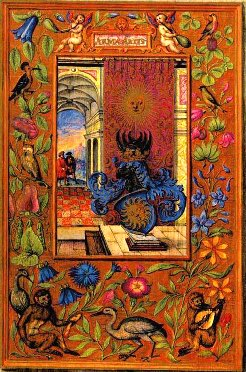
FIGURE I
(Splendor solis, 1582 : les armes de l'art)II faut savoir, dit Morien [Citons, pour illustrer cette réflexion, ce passage d'un texte imprimé de Morien, que Goethe a relevé et traduit pour le produire à l'appui de sa théorie des couleurs :
Calid, un roi légendaire d'Égypte, s'entretient avec Morien, ermite palestinien, afin d'être instruit par lui du grand oeuvre de la pierre merveilleuse. Le roi:, que notre opération et l'Art dont nous désirons traiter présentement, se divisent en deux principales doctrines, les extrémités et les moyens desquelles s'attachent étroitement, s'adhérant tellement l'une à l'autre, que la fin immédiate de la première s'allie d'un indivisible chaînon au commencement de la postérieure, et s'entre succèdent mutuellement l'une l'autre, la dernière étant amiablement provoquée à l'imitation des mêmes actions qu'elle a pu remarquer et attentivement considérer au précédent modèle de celle qui l'a devancée de quelque espace de temps; et lors tout le magistère est entièrement fait et parfait, mais elles ne se peuvent pas accommoder en autre corps qu'en leur propre matière. Or, pour mieux concevoir ceci, et plus assurément, il est nécessaire de remarquer en premier lieu que la Nature, selon Geber, sort de la première essence des métaux composés de Mercure et de Souphre : laquelle opinion est suivie de l'autorité de Serrarius en sa question de l'alchimie cap. 25, à savoir que la Nature procède de la source et pure essence des métaux naturels, laquelle prend au feu une eau de putréfaction [c'est l'Eau permanente des Anciens, l'Eau divine de Zosime àudor qeioV], qu'elle mêle avec une pierre fort blanche et subtile, la réduisant et résolvant comme un bouillon en certaines vapeurs élevées dans les veines de la terre, qu'elle bat à force de mouvement continuel pour la faire cuire et se vaporiser ensemble avec humidité et pareille siccité, qui se réunissent et coagulent, de sorte qu'il s'en produit certaine substance que nous appelons communément Mercure ou Argent vif [l'agent minéralisateur àArcanum duplicatum], lequel n'est autre chose que la source et première matière des métaux, comme ci-devant l'avons-nous déjà dit. Et pour ce le même auteur certifie encore au 26e chapitre que ceux-là qui veulent en tant qu'il est loisible et possible, suivre la Nature, ne doivent pas s'aider de vif-argent seulement, mais de vif-argent et de soufre tout ensemble, lesquels encore ne faut-il pas mêler seulement, mais aussi préparer quant et quant et assaisonner avec prudence ce que la Nature a produit et réduit en perpétuelle confluence. Or est-il qu'avec telle sorte de vif-argent, la Nature commence sa première opération, et finit par le naturel des métaux desquels elle s'est contentée pour l'entière perfection de son œuvre, car elle a parachevé ce qui était de son devoir et tout concédé à l'artifice, afin de pouvoir accomplir son intention à parfaire la Pierre des Philosophes et la former entièrement de son dernier période et lustre plus parfait : ainsi de fait est-il certain que nous commençons l'œuvre sur les lieux où la Nature a mis son but et la dernière gloire de son ambition. Tous les Philosophes tiennent le vrai principe de leur opération de la dernière fin du soleil des métaux, confessent tous librement que celui qui prétend quelque chose à la connaissance de cet œuvre, ou qui parfaitement désire procéder au comble de cet art naturel, le doit absolument et sans scrupule commencer par la fin et cessation de la Nature et où enfin elle se repose ayant acquis la perfection de ses prétentions, se désistant sur la jouissance finale de ses actions ordinaires. Il faut donc prendre ce soufre et ce vif-argent que la Nature aura réduit au nombre d'une très pure et très nette forme étant accomplie et douée d'une réunion si subtile, qu'aucun autre ne la saurait si naïvement préparer, quelque artifice qu'il y apporte, quoique la Nature, comme dit est, possède finalement cette matière par la génération formelle des métaux.« Tu m'as suffisamment exposé la nature de ce grand oeuvre, accorde-moi la faveur de m'en révéler les couleurs. Mais je voudrais que tu n'emploies ni allégories ni similitudes.»
Morien: « Les Sages ont eu coutume de toujours préparer leur assos avant la pierre et en même temps que la pierre. Bon roi, que te suffise ce que je t'ai exposé. Laisse-moi citer des témoignages plus anciens, et si tu en veux un, prends bien garde aux paroles du philosophe Datin, lorsqu'il dit: "Notre lato, bien qu'il soit d'abord rouge, ne nous sert à rien ; mais si de rougeur il passe en blancheur, il est de grand prix..."
Maria dit également : "Lorsque le lato est brûlé avec alzebric, c'est-à-dire avec du soufre, et que l'élément femelle est versé sur lui, en sorte que la chaleur lui soit ôtée, alors l'obscurité et la noirceur en sont enlevées, et il est changé en l'or le plus pur'".»
Le nom de Calid désigne un prince de la dynastie des Omméiades, nommé Khalid ibn Jazid, Datin est une transcription médiévale fautive de l'arabe ; il pourrait désigner le célèbre Zosime, en tout cas un de ses contemporains. Maria est la « prophetissa » des alchimistes alexandrins. « Assos » est un terme arabe et peut désigner l'alun. Nous le rapprocherions volontiers de l'AZOTH de B. Valentin. « Lato » est un métal, le cuivre ou l'un de ses alliages è il s'agit en fait de l'alliage philosophique qui va constituer le Mercure philosophique dont la préparation fait l'objet du 2ème oeuvre ; l'élément femelle est le mercure; le tout fait allusion ici à un procédé typique: ôter sa couleur rouge au cuivre ou à l'un de ses alliages.]
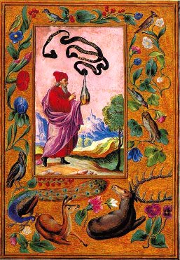
FIGURE II
(recherche des natures des Quatre éléments)Or, cette matière ainsi informée par la Nature conduira l'ouvrier à la perfection de son point, et l'artifice par ce moyen réussira au port du salut de ses desseins, par la force qu'elle reçoit proprement imbibée et appliquée en telle matière; à laquelle les Alchimistes ajoutent le Sol pour le faire dissoudre et distinguer des éléments, jusqu'à ce qu'il ait acquis une nature subtile et spirituelle, à la pureté des vifs-argents et en la nature des soufres : si bien que celle-là donc est la plus proche matière, et qui retire le plus par sa proximité et voisinage avec l'or, pour recevoir la pure forme de cette Pierre occulte, laquelle matière nous appelons Mercurius Philosophorum, puisque les deux susdits sont joints et étroitement alliés l'un à l'autre. L'opinion d'Aristote ne répugne point à celle-ci, mais lui est du tout conforme par l'avis qu'il en donnait au Grand Alexandre. Voulez-vous, lui dit-il, ajouter l'or avec les autres choses précieuses, dont les rois sont ordinairement parés et richement couronnés, au mérite de notre Pierre ? Je vous avertis que ce Mercure est la matière seule et chose unique à parfaire notre science, bien que le moyen de l'opération soit enveloppé de tant de nœuds et de diversités que bien peu de personnes se peuvent assurer d'avoir un sauf-conduit de notre Roi pour atteindre le centre de ce labyrinthe tendu par le favorable filet d'une douce Ariane. Or, cette obscure diversité ombragée de mille chemins ambigus, et voilée d'une infinité de nuages épais est un vray coup de la main des Philosophes et tout exprès sagement déguisée : ainsi le tiennent Rosin, le comte de Trévise, et tous les autres unanimement, afin que chacun par la facilité de l'œuvre ne parvienne indifféremment à cette suprême marche, et ne vienne à mépriser un si précieux joyau, l'ayant si facilement acquis, et comme sans peine atteint au période honorable de notre œuvre parfait sur tous les autres œuvres, que nous appelons à cet effet une collection, à cause de la multitude mise ensemble, et une ferme représentation de toutes les choses que comprend la Nature.
C'est pourquoi parlent ainsi les Philosophes : Faites sublimer ce qui en peut rester, puis étant distillé et communiqué, faites encore qu'il monte et descende, le desséchant par dehors et par dedans, et autres doctrines infinies entrelacées de mêmes ambages et figures amphibologiques, qui doivent toutefois être toutes ensemble et par conjonction suivies et absolument accomplies pour recueillir enfin le fruit nectaréen de notre moisson dorée : encore qu'il semble qu'Alphidius s'y veuille aucunement opposer en ces termes :
«Il faut savoir que quand nous soudons et congelons, nous sublimons aussi et alchymisons sans intermission de temps, conjoignant par ce moyen et purifiant notre œuvre. »
Et plus clairement encore en ce qui suit :
«Quand notre corps sera jeté dans l'eau et qu'il viendra à être racheté il sera incontinent pourri, noir, ombrageux et obscurci, puis il s'évanouira et deviendra comme de la chaux qui se sublime et exalte tôt après» [c'est-à-dire à l'état de chaux métallique ; c'est la 2ème putréfaction de l'oeuvre ; c'est-là que se situe l'allégorie du transport vers le sommet de la montagne qu'emploie Lambsprinck par exemple];
étant ainsi sublimé et dissous avec l'esprit, il se purifie lequel est un principe et origine très digne d'être comparé à toutes les choses de l'univers, qui aient vie, ou âme, esprit ou non, soit es minéraux vivants et naissants, es éléments et à leurs compositions, aux choses froides et chaudes, aux oiseaux, et sommairement tout ce qui peut être produit de la terre jusqu'au ciel, est contenu et coopère en puissance à notre Art. Ces deux doctrines ci-dessus mentionnées signifient selon les Philosophes cette femme noire et obscure [cf. la pierre noire de Pessinonte, étroitement apparentée à Cybèle, symbole de l'athanor et l'allusion aux vierges noires de Fulcanelli] qui sert de clé à tout l'œuvre, et qui doit dominer en la force de notre Pierre, savoir en la noirceur, base assurée de tout le fondement, ou bien cet homme qui est la forme de notre matière, laquelle nous comparons fort à propos au soleil. Ceci soit assez dit pour un commencement de la première doctrine de cet Art.
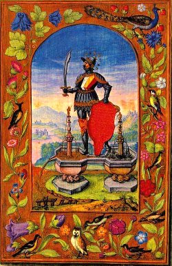
FIGURE III
(les deux fontaines)Ce grand génie de notre science et père de la plus haute et rare philosophie, Hermès, s'élevant en soi-même, et entretenant son esprit sur l'opération de l'œuvre des Philosophes, éclôt enfin ces paroles :
« Ceci peut être dit comme une fin du monde, en ce que le ciel et la terre produisent bien ensemble, mais personne ne peut par le ciel et la terre connaître nos deux doctrines précédentes, voilées de tant d'hiéroglyphes ».
Plusieurs aussi parvenus au labeur y ont beaucoup sué devant que d'attraper cette perfection, laquelle ayant atteinte, ils expliquent après, mais avec plus d'ambiguïtés amphibologiques, et tellement confuses qu'on ne peut les comprendre, par leurs figures et similitudes ombragées, mais trop obscures pour ceux qui pensent suivre leurs pas, embrassant curieux cette même fortune, pour être couronnés d'une semblable palme, puisqu'ils veulent courir un pareil risque. La première similitude nous démontre que Dieu par sa toute-puissance et l'infini de sa bonté, a créé la terre toute égale, grasse et féconde, sans arène, sans pierres, sans montagnes, sans vallées, par l'influence des astres et opérations de la Nature, et néanmoins nous voyons maintenant qu'elle ne retient rien de cet antique lustre, mais tellement défigurée de sa perfection qu'à peine la peut-on plus connaître de ce qu'elle voulait être, changée en diverses formes et figures, extérieurement, de pierres fortes, hautes montagnes et de profondes vallées [notez que c'est au fond des vallées et au bord des montagnes que l'on trouve le vitriol romain ; cf. Atalanta fugiens], intérieurement, de choses terribles et de couleurs comme l'airain et les autres métaux. Quoique toutes ces choses confuses et diverses se trouvent à présent au corps de cette terre, si provient-elle entièrement de sa première forme, lorsque de très large, grosse, profonde et longue qu'elle était auparavant, elle est réduite en un grand et vaste espace par la continuelle opération du soleil et que la chaleur s'y est toujours conservée véhémente, ardente et vaporeuse, se mêlant confusément jusqu'au fond de cette grosse masse avec la froideur et l'humidité qu'elle enserre en son corps, dont s'élèvent quelquefois des vapeurs froides, nébuleuses et aériennes, qui naissent de la mixtion de ces deux régimes contraires [il s'agit des deux Principes qui se trouvent cachés dans les deux roches dont parle Fulcanelli ; l'une est analogue à la terre de Chio ; l'autre est congénère du lait de montagne ; il est possible que le lait de montagne soit congénère du vitriol romain], desquelles renfermées et arrêtées dans la terre, plusieurs autres vapeurs consécutives naissent par la longueur du temps, tellement fortes sur la fin, qu'elle est souvent contrainte de leur faire voie pour les laisser exhaler par l'ouverture de son ventre, leur donnant malgré soi libre passage, lorsqu'elle eût bien désiré les pouvoir retenir dans les naturels cachots de ses plus profondes cavernes, où plusieurs à la longue se retrouvant ensemble pêle-mêle, faisaient tantôt amonceler plusieurs parties de terre en un lieu par la force assemblée de ses exhalaisons, et plusieurs autres en autres lieux. Mais comme les montagnes et les vallées ont été réduites à leur certaine fin, là principalement se retrouve aussi la terre au meilleur point tempéré des quatre qualités, chaleur, froideur, humidité et décoction desséchée, bouillie ou aucunement diminuée ; or en ces endroits voit-on l'airain le meilleur et le plus pur. Pour cette raison il est aisé à croire qu'es lieux où la terre est aplanie, il n'y a point si grande quantité de vapeurs ni tant d'exhalaisons sulfurées, ce qui la tient plus calme et en repos. Celle qui est grasse, fangeuse et où l'humidité d'en haut se retire vers le bas et au-dedans, devient plus tendre et molle, se changeant en une blancheur extrême, au moyen principalement d'une siccité causée par la chaleur du soleil, qui la rend plus forte, plus cuite et plus endurcie après long espace de temps. Mais une terre corruptible, frangible, sablonneuse et qui encore aucunement tendre se pend pièce à pièce comme grappes de raisins, est ordinairement plus maigre, et par conséquent ayant moins de nourriture pour l'entretien de sa substance, est plus tardive et a reçu trop peu d'humidité ou de vigueur alimenteuse, ce qui la rend beaucoup plus difficile à cuire, ne s'entretenant que comme par forme de rouleaux ou autre matière mal agencée. Or, cette terre ne se peut aisément réduire en pierre si elle n'est extrêmement vaporeuse et remplie de grande humidité, mais il est bien nécessaire qu'avec le dessèchement des eaux qui provient des ardeurs véhémentes et continuelles chaleurs du soleil, l'humidité de la terre s'y maintienne toujours : autrement cette Terre demeurerait comme morne et corruptible, et se déferait aisément par morceaux. Ce qui toutefois n'a pas encore été en icelle endurci du tout et parfait, peut à la longue devenir et se réduire en dure et forte pierre par l'opération continuelle de la nature assistée de la chaleur du soleil et longue décoction continuelle et sans intermission. Ainsi des fumées et des vapeurs susdites renfermées dans les pores de la terre, lorsqu'elles viennent à se joindre aux vapeurs aquatiques avec la substance de quelque terre fort subtile, digérée et bien purifiée par la vertu et influence du soleil, des autres planètes et de tous les éléments ensemble, se peut réduire et mettre en œuvre le vif-argent [c'est-à-dire le Mercure philosophique].
Mais d'autant qu'il pourrait retirer de quelque dureté subtile et flamboyane, l'on se peut bien servir du soufre des Philosophes, de la force et énergie duquel conclut fort bien ce grand Hermès, quand il dit :
«que la vertu sera reçue des supérieures et inférieures planètes, et qu'avec la force, il surpasse et pénètre toute autre force, même jusqu'aux pierres précieuses ».
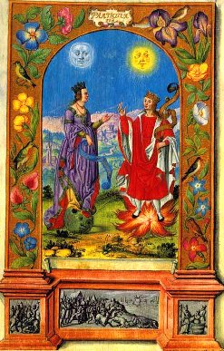
FIGURE IV
(couple alchimique reine-lune et roi-soleil)Hermès le plus grand ouvrier et le premier maître de cet art, dit que l'eau de l'air, qui est entre le ciel et la terre, est la vie de chaque chose, car par le moyen de ces deux particulières et naturelles qualités, chaud et humide, il unit ces deux éléments contraires, l'eau et le feu, comme un milieu nécessaire pour accorder ces deux extrémités [le vaisseau de nature et les principes contraires]. Et le ciel commence à s'éclaircir aussitôt sur la terre, que cette eau s'est infusée d'en haut lui servant de semence seconde introduite dans le col de son ventre, dont elle a conçu une douceur comme de miel, et une humidité certaine, qui lui font produire diversité de couleurs et de fruits, d'où s'est élevé encore et crû comme par succession de lignée dans les vestiges de leurs secrètes voies, un arbre de hauteur et grosseur admirables avec un tronc argentin, qui s'étend amplement et largement par les places et les cantons du monde. Sur lesbranches de cet arbre se reposaient diverses sortes d'oiseaux, qui s'envolèrent tous vers le jour, puis y apparurent des corneilles en abondance, infinité d'autres et rares propriétés encore s'y retrouvaient, car il portait beaucoup de sortes de fruits, dont les premiers étaient comme graines menues, et l'autre est appelée de tous les Philosophes Terra Foliota [la terre foliée de tartre, congénère du foie de soufre terreux], la troisième étaitd'or le plus pur, entremêlé de force fruits qu'on nomme de santé, réchauffant ce qui est froid, refroidissant ce qui est chaud, et ce qui a contracté par une intempérie extraordinaire quelque chaleur excessive, rendant le sec humide, et l'humidité sèche, amollissant ce qui est dur, et raffermissant ce qui est mol. Or, toutes ces conversions de contraires essences sont les plus assurés pilotis de l'espérance de notre œuvre, nostra operatio est naturarum mutatio, disent-ils communément. Faire le corps esprit et l'esprit rendre corps, Les vifs faire mourir et revivre les morts. C'est la Pierre d'Aimant, le cercle parfait où repose à garant le point du magistère, et le commencement de la fin prétendue de tout notre artifice.
Cette maxime est vraie, que l'assurance d'un bon principe ne sert pas peu à consoler les esprits assurés, qui s'embarquent néanmoins en crainte de ne pouvoir surgir au havre de salut d'une bonne espérance, se voyant assaillis de tant de durs écueils qu'ils font le plus souvent abandonner la prise aux meilleurs nautoniers. Si toutefois nous envisageons quelque doux Alcyon au milieu de notre tourmente, nous nous assurons au moins d'être encore demeurés en la vraie route de nos intentions, et par ce bon augure nous commençons à reconnaître ex ungue Leonem, le Lion à la patte, comme l'on dit, respirant sous le dur faix de nos plus grands travaux gaiement surmontés par l'espérance et l'aspect assuré d'un bon, heureux et favorable commencement. Dimidium facti qui bene coepit habet. La clef noire des mutations réciproques de ces diverses formes ouvre le cabinet des secrets naturels, pour sonder la douceur etla maturité du fruit de l'Ile Colchique, que gardent le Dragon, et le Lion dévorant, comparés à la poursuite de notre œuvre. Pour atteindre le but de notre sacrifice, iI faut par échelons entre suivre la lice s'avançant peu à peu.
FIGURE V
(extraction de la matière première : vitriol romain)[c'est une nature lunaire qu'il s'agit de trouver ici, comme en témoigne le disque de la lune qui s'affiche dans le lac, en bas de la gravure.]
Salienus parle suffisamment de la variété et différence de ce fruit, nous faisant assez ample mention d'une herbe qu'il nomme en suite de plusieurs Lunatica, d'une tige toute autre que les communes, et qui tire sa racine d'un métal terrien, rougissante en partie, mais environnée d'une noire couleur, ou proprement tachetée, facile toutefois à se corrompre et se défigurer, comme voulant abandonner ses forces ordinaires pour renaître bien plus belle et plus parfaite, au renouveau de ses plus riches fleurs venues à juste terme, laquelle septante deux heures après se rencontrant sous l'angle de Mercure, se change au blanc parfait d'une très pure Lune et convertie derechef, se laissant bouillir quelque peu plus longtemps par décoction, en or de tel aloi qu'il change en sa nature la centième partie de mercure ; mais or bien plus parfait que ne le peut produire la force de la terre dans ses minières métalliques. Virgile en dit autant au sixième de ses Enéides, parlant d'un arbre aux rameaux d'or qu'il fait rencontrer àson prince troyen durant ses longues navigations ; arbre de telle excellence qu'il ne mourait jamais, qu'un autre en renaissant continuellement de lui, et succédant au premier par la multiplication de soi-même ainsi qu'un autre Phénix, ne rentrât en son lieu.
Avicenne, traitant de l'humidité et de tous ses effets, dit que l'on aperçoit en premier lieu quelque noirceur, lorsque la chaleur fait son opération sur quelques corps humides. C'est pourquoi les anciens sages sans autrement développer l'ambiguïté de leurs figures énigmatiques, disent avoir avisé de loin un brouillard qui s'élevait, environnant toute la terre, et la rendant humide; ils disent aussi avoir prévu la grande impétuosité de la mer et le concours abondant des eaux nageantes sur toute la face de la terre, de telle sorte que la forme et la matière destituées de leur force première et remplies de putréfaction, se verront parmi les ténèbres même ébranler jusqu'au Roy de la Terre, qu'ils entendront ainsi crier et lamenter d'une voix pitoyable et pleine de compassion. Celui qui me rachètera de la servitude de cette corruption, doit vivre avec moi à perpétuité et très content, et régner glorieux en clarté et brillante lumière par-dessus mon siège Royal, surpassant même et de prix et d'honneur le précieux éclat de mon sceptre doré. Le bandeau de la nuit mit fin à sa complainte par un charmeux sommeil, mais sur le point du jour on vit sortir par-dessus la personne du roi une étoile très resplendissante [Lucifer, l'étoile du matin ; allusion au salpêtre des Sages], et la lumière du jour illumina les ténèbres, le soleil paraissait radieux entre les nuées ornées et embellies de diverses couleurs : les étoiles brillantes pénétraient, d'une odeur très odoriférante qui surpassait toute sorte de baume, et provenait de la terre une belle clarté reluisante de rayons éclatants; tout ce qui peut enfin servir de contentement ou de plaisir agréable à un grand roi qui se veut délecter aux rares nouveautés. Le soleil aux rais d'or, et la lune argentine entourant cette excellente beauté faisaient admirer de plusieurs spectateurs, et ce roi ravi en la contemplation d'un doux ressentiment fit trois belles et magnifiques couronnes, dont il orna le chef de cette grande beauté, l'une desquelles était de fer, l'autre d'argent, et la troisième d'or : puis on voyait en sa main droite un soleil et sept étoiles à l'entour qui y rendaient une très claire lueur; sa main senestre tenait une pomme d'Or, sur laquelle reposait un pigeon blanc, que la nature étincelante vint encore embellir d'argent, et décorer ses ailes d'or [cf. section blasons alchimiques, chap. animation du Mercure]. Aristote dit que la corruption d'une chose est la vie et la rénovation d'une autre : ce qui se peut entendre sur l'art de notre Magistère et préparation des humidités corruptibles, renouvelées par cette substance humide, pour aspirer toujours à plus de perfection, et à la continuation d'une plus longue vie. Menaldus démontre évidemment la nécessité et étroite communication qu'ont les choses vives avec les mortes, en ces mots :
«Je veux, dit-il, et entends que tous ceux qui s'adonnent à notre étude sérieuse, et qui désirent ensuivre absolument le même ordre et la piste que nous y avons tenue et dûment observée à notre contentement fassent en sorte que les choses spirituelles se corporalisent, et que les corporelles se spiritualisent aussi par une réciproque conversion et dissipation de leurs premières formes, afin d'en acquérir une plus excellente, se relevant de cette mort, qui est la putréfaction, beaucoup plus glorieux qu'auparavant par une légère et seule décoction. »
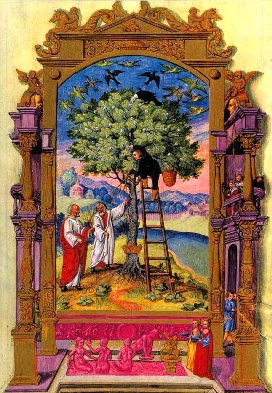
FIGURE VI
(la discussion des philosophes)[l'Artiste s'apprête, juché sur l'échelle des philosophes, à prendre la grenade hermétique dans l'arbre solaire. Le van l'accompagne ; le Soufre rouge ne tardera pas à être réincrudé comme en témoigne le départ des noirs corbeaux. La scène du bas, dans le cartouche, montre des naïades au bain, témoignant des Laveures qui doivent être réalisées avant de pouvoir cueillir le fruit de l'arbre solaire]
Plusieurs autres des meilleurs Philosophes, unanimes en cette proposition, nous payent tous de ces ou semblables paroles, Solve et gela, dissous et congèle, ou du Si fixum solvas faciasque volatile fixum Et volucrem figas, faciet te vivere tutum, dit la Fontaine des Amoureux [texte de Jean de Meung ; voir aussi. Verbum dimissum], Rends la terre légère, et donne poids au feu. Si tu veux rencontrer ce qu'on rencontre peu.
Comme déjà dit ci-dessus nous l'avons remontré en divers endroits : imitant encore en ceci Senior [Zadith] qui nous convie ainsi que font tous les autres aux nuances nécessaires des matières contraires :
« L'esprit, dit-il, délivre le corps, et par cette délivrance l'âme se tire hors des corps, puis on réduit ces mêmes corps en l'âme : l'âme donc se change en un esprit et l'esprit de nouveau se fait corps. » [il est remarquable d'examiner la similitude entre ces changements de corps en âme, par le moyen de l'esprit quand on les met en parallèle avec les expériences de synthèses minéralogiques de Sainte-Claire Deville]
Car s'il demeure ferme au corps et qu'il rende de nouveau les corps de soi terrestres, massifs et grossiers, spirituels par la force de ces esprits, c'est le but de notre œuvre : que si le même n'arrive à ces corps métalliques, qu'ils ne perdent leur premier et naturel être, pour reprendre plus de lustre et de perfection en notre ouvrage, la première matière détruite en introduisant une autre par génération, c'est en vain travailler et dissiper ses veilles et son huile pour aboyer après le vent. [la dissolution radicale des chaux métalliques dans le Mercure] Un homme infortuné, déchu des doux zéphyrs de son bonheur et renvoyé aux cruels supplices d'un cloaque très ord, paraissait aussi noir qu'un More confirmé, palpitant en son mal, et hors de son haleine, pour les rudes efforts qu'il emprunte de soi-même, n'épargnant rien de ses forces qu'il ne les emploie au salut de sa vie, et à la délivrance de son corps relégué aux infectes prisons de ce bourbier fangeux et plein d'immondicités.
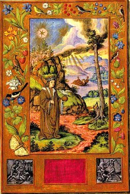
FIGURE VII
(le nouveau prince, ceint de la triple couronne)[le fruit rouge de l'arbre solaire est cueilli. En haut, nous voyons le Soleil et, probablement, la Lune qui brille en plein. Le personnage tient le caducée de Mercure, au bout du bourdon. Au loin et comme sur le point d'expirer, nous voyons le Mercurius senex. Le cartouche central est vide, mais ceint de pierreries. De part et d'autre, des scènes mythologiques où l'Artiste s'apprête à frapper du bâton le couple alchimique, c'est-à-dire, par cabale, à dissoudre les matières]
Mais sa trop faible puissance ne pouvant seconder le vœu de ses désirs pour sortir de ce lieu, et se voyant en vain avoir importuné le Ciel de cris, et l'aide de son industrie pour se développer d'un si vilain cachot, il eut tout le loisir d'attendre en sa misère le dernier coup d'une cruelle mort, sans mendier plus avant le secours favorable de quelque âme bénévole pleine de charité pour l'attirer à la pitoyable compassion de son piteux désordre ; aussi se pouvait-il bien résoudre, quoique par force, à finir tristement l'abrégé de ses jours funestement talonnés de plus sombres malheurs de cet immonde et ténébreux égout, puisque chacun se rendait sourd aux abois de sa complainte, montrant à son endroit un cœur plus endurci et plein de félonie, que n'eût pas fait un rocher insensible. D'un désiré salut l'espérance étant vaine - Son but n'aspire plus qu'à la Parque inhumaine - Lorsque tout à propos une jeune beauté - Survint à son secours pleine d'humanité. Cette dame était belle par excellence de corps et de face, enrichie de superbes habits de diverses couleurs, ayant de belles plumes blanches mais bigarrées comme celles d'un paon qui s'étendaient également sur son dos, à la merci d'un vent bénin et zéphyr favorable, les ailerons en étaient d'or entrelacés de belles petites graines. Sur son chef bien agencé, elle avait une très belle couronne d'or, et sur icelle une étoile d'argent; à l'entour de son col elle portait un carcan d'or, dans lequel était richement enchâssé un précieux rubis d'excellent artifice, le plus juste prix et la valeur duquel n'eût pas su payer le plus grand revenu de quelque puissant roi : elle avait aussi des souliers dorés aux pieds et d'elle s'épandait une suave et très odoriférante odeur. Tout d'abord qu'elle aperçut ce pauvre désolé, d'une contenance gaie et d'un joyeux aspect, elle lui tend la main, et le relève de son extrême faiblesse, déjà tellement destitué de ses premières forces, qu'il ne se pouvait plus supporter, ni garantir son corps pusillanime déjà sentant la terre : au péril éminent du salut de sa vie il n'entend et n'attend plus rien d'assuré que le vrai rebut des malheurs misérables, ... nullam sperare salutem. Ce qu'étant reconnu aux actions imbéciles de notre langoureux, cette dame s'avance émue de compassion, et le retirant bénignement d'une telle infection, elle le nettoie pur et net, lui fait présent d'un bel habit de pourpre, et l'emmène jusqu'au ciel avec elle. [il est ici question du 3ème oeuvre ; cette allégorie est analogue à celle de Lambsprinck] Senior [Zadith] en parle tout de même, traitant de ce sujet, voire encore en termes bien plus clairs :«Il y a, dit-il, une chose vivante qui n'est plus mortelle, ayant une fois été confirmée et assurée de sa vie par une éternelle et continue multiplication.»
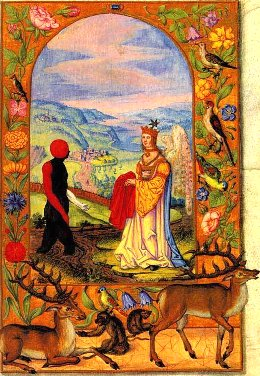
FIGURE VIII
(le soufre rouge sort de la terre grasse)Les philosophes pour ne laisser rien en arrière de ce qu'ils doivent honnêtement découvrir de cet art, lui attribuent deux corps, savoir est le soleil et la lune, qu'ils disent être la terre et l'eau. Ces deux corps s'appellent aussi l'homme et femme, lesquels engendrent quatre enfants, deux petits hommes qu'ils nomment la chaleur et froideur, et deux petites femmes signifiées par le sec et l'humide : de ces quatre qualités il en sort une cinquième substance, qui est la Magnésie blanche [le Mercure], laquelle ne porte aucune ride de fausseté sur le front. Et Senior poursuivant plus au long cette même figure la conclut en cette sorte : « Quand, dit-il, les cinq sont assemblés ensemble, et viennent à être une même chose, la pierre naturelle se fait lors de toutes ces mixtions égales, qu'on nomme Diane. Avicenne à ce propos dit que si nous pouvons parvenir jusqu'au cinquième
[ce que les Anciens appellent la quintessence, différent des quatre éléments ; cet élément alliait forcément des caractères contraires, tenant du fixe et du volatile ; s'agissait-il de chaux métalliques dissoutes ?],
nous obtiendrons ce que tous les auteurs appellent l'âme du monde. Les philosophes nous expliquent sous l'écorce de cette similitude de l'essence et le modèle de leur vérité par la démonstration d'un œuf, pour ce que dans son enclos il y a quatre choses assemblées et ensemble conjointes, la première desquelles est le dessus qui est la coquille [calx], signifiant la terre, et le blanc qui est l'eau ; mais la peau qui estentre l'eau et la coquille est l'air qui divise la terre d'avec l'eau [c'est le ciel terrestre de Lavinius] : le jaune est le feu et a une peau fort déliée tout à l'entour de soi : mais celui-là est l'air le plus subtil, lequel est ici au plus intérieur du très subtil, car il est plus adhérent et plus proche et voisin que n'est le feu, repoussant le feu et l'eau au milieu du jaune qui est cette cinquième substance, de laquelle sera formée et engendrée la poulette qui croît par après. Ainsi sont en un œuf toutes les forces et vigueurs avec la matière, de laquelle nature parfaite et accomplie vient à être épuisée : or est-il de même nécessaire que toutes ces choses se retrouvent parfaitement en notre opération.
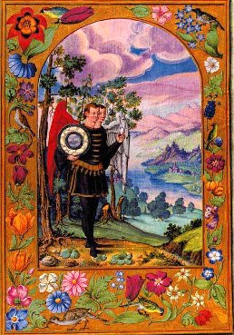
FIGURE IX
(l'homme double igné)Les discours des plus discrets sont toujours ambigus, et leurs graves écrits toujours entremêlés de quelque obscurité, s'entendant si bien tous en ce serment solennel, que leur volonté n'est point mieux exprimée des premiers que des autres. Et c'est même pourquoi Rosinus en ce point conforme aux Philosophes, n'explique en l'énigme suivant l'opération de l'œuvre, que par la face qu'il dit avoir vue d'une personne morte, mutilée en plusieurs endroits de son corps, et tous les membres d'icelui divisés : mais le gros de la masse et le tronc dudit corps qui restait encore entier paraissait blanc comme sel [allusion à la séparation initiale qui laisse un sel blanc, autrement appelé salamandre et le Caput, sel polychreste de Glaser], son chef séparé des autres parties dudit corps était d'un bel or, auprès duquel était un homme fort noir, mal composé de ses membres, hâve au regard, et assez effroyable de vue, qui se tenait tout debout, le visage tourné vers ce corps mort, ayant en sa main droite un coutelas tranchant des deux côtés aucunement entremêlé de sang, duquel comme cruel et de tout temps nourri au carnage et à l'effusion du sang humain ilprenait pour ses plus grands ébats et pour les plus voluptueux délices de ses plaisirs, le meurtre violent et l'assassin volontaire, même de sang froid de toutes sortes de personnes. Il montrait en sa main gauche la forme d'un bulletin où ces mots étaient écrits : Je t'ai meurtri et mis ton corps en pièces, afin de te béatifier et te faire revivre d'une plus longue et plus heureuse vie que tu n'as ressentie devant que la mort eût conspiré contre toi par le tranchant de mon épée ; mais je cacherai ta tête à ce que les humains ne te puissent connaître, et ne te voient plus au même équipage mortel que tu étais auparavant, et brouillerai ton corps dans un vase de terre [c'est la terre foliée de tartre, assimilée ici au Mercure ; cf Atalanta fugiens sur cette terre foliée] où je l'ensevelirai, à ce qu'y étant en peu de temps pourri, il puisse davantage multiplier et rapporter quantité de meilleurs fruits.
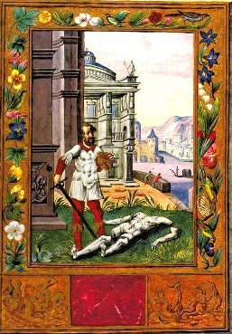
FIGURE X
(la séparation du Corps par l'action du glaive de feu)Les œuvres d'un Ovide, poète très excellent et grave Philosophe, nous font assez juger de sa capacité et de la grande expérience et vraie connaissance qu'il avait des effets merveilleux de notre magnésie, nous mettant en avant la prudente prévoyance de ces vieux sages, qui sagement curieux du renouveau de leurs jours surannés, s'opposaient vertueux par un antidote souverain et contrepoison de la mort, aux dards envenimés de ces fières Euménides, pestes cruelles de la vie, et de la conservation du genre humain, se faisant volontairement démembrer le corps en maintes et maintes pièces, que l'on faisait ainsi bouillir, jusqu'à une parfaite et suffisante décoction, pour changer la faible consistance de leur âge débile en l'état naturel de force et de vigueur, se faisant en mourant rajeunir plus robustes, et leurs membres épars et mis en tant de pièces, plusétroitement rejoints et réunis ensemble.
QUEL EST LE PROPRE DE LA NATURE PAR LEQUEL ELLE PREND SON OPÉRATION
Le prince de la philosophie péripatétique et grand inquisiteur des recherches et curiosités naturelles, dit en ce qu'il a traité de la génération, que l'homme et la semence produisent un autre homme étant plus que certain que chacun et toutes choses engendrent leurs semblables par la force animée et secrètement particulière de chaque semence, qui rend toute forme vivante chacune en son essence par plusieurs et divers moyens, mais principalement par la chaleur opérative et tempérée du soleil, sans l'aide infuse et l'assistance immédiate duquel cette opération vivifiée n'agirait aucun effet. Les philosophes, aussi réglés sur le moule parfait d'une sage nature, sont forcés et contraints de mendier un secours favorable à leurs desseins et en la recherche de leur œuvre, à la discrétion de quelqu'autre support, et d'un aide emprunté.Nulle chose Jamais fut de tout point parfaite - Sans le support d'autrui, et ne se vit bien faite. - Ainsi dit la nature en sa complainte : Si tu m'aides, Je t'aiderai; Comme tu feras, je ferai.
Si l'artiste ne seconde les desseins de la Nature, quoiqu'elle soit pleine de bonne intention, si ne peut-elle pourtant nous mettre au jour et faire paraître la volonté qu'elle a de soulager les hommes, et les rendre de tout point au sommet de leur perfection : tout notre artifice aussi ne peut pas prospérer en ses recherches vaines, mais demeurent infructueuses et inutiles sans la faveur que lui fait la Nature. Ce qui nous montre bien qu'ils ont toujours besoin d'une entraide l'un de l'autre, et que notre art doit régir la chaleur avec la température du soleil, pour produire cette susdite Pierre : mais la poursuite et le bon succès de toutes ces choses doivent être considérés de nos sages émulateurs en sept diverses façons, qui nous y ouvriront la porte pour nous introduire bénignement aux prolégomènes nécessaires des parfaites chaleurs.
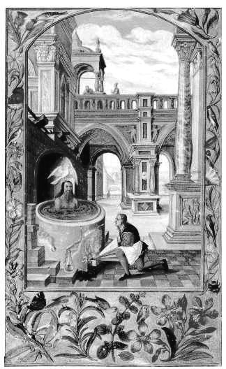
FIGURE XI
(le bain du Mercurius Senex)Premièrement il y faut de nécessité pratiquer une telle chaleur, qu'elle puisse attendrir, amollir et fondre le plus fort de la terre, cuisant ensemble et le gros et le dur par le feu tempéré d'une corruption, qui est le commencement de toute l'œuvre, confirmédes bons auteurs.Si putridum non fuerit, fundi aut solvi non poterit, et si solutum non fuerit, ad nihilum redigitur, dit fort bien Morien [Entretiens de Morien au roi Calid, Bibliothèque des philosophes chymiques, vol. II]. Platon, Nota quod sine corruptione penetratio fieri non potest, c'est à quoi, dit-il, tu te dois efforcer de parvenir, qu'à la putréfaction. Après lequel le philosophe dit n'avoir jamais vu animal croître sans la putréfaction : et opus Alchymicum, [poursuit-il], in vanum erit nisi antea fuerit putridum. Parmenides dit aussi la même chose :
« Si le corps n'est ruiné, démoli, du tout rompu et corrompu par la putréfaction, cette occulte et secrète vertu de la matière ne se pourra tirer dehors ni se conjoindre parfaitement au corps. »
Le grand Rosaire tient cette opinion de tant de bons auteurs très assurée, la soutenant comme infaillible par cette figure métaphorique :
«Nous tenons pour maxime véritable, que la tête de notre Art est un corbeau volant sans ailes en l'obscurité de la nuit aussi bien qu'en la clarté du jour. »
Mais par quel moyen elle se puisse faire, Socrate t'en baille un bon avis, parlant ainsi des premières chaleurs convenables à la corruption :
«Les pertuis et les petits trous qui sont les méats et les pores de la terre, s'ouvriront, afin qu'elle reçoive en soi la force et la vigueur tant du feu que des eaux. »
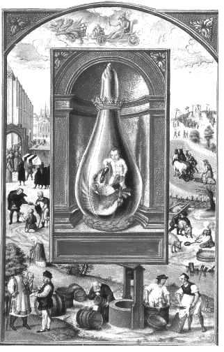
FIGURE XII
(Héphaistos nourrit le dragon venimeux)[En haut, nous apercevons un char. A chaque fois qu'un char apparaît, cela signifie une opération qui se déroule dans le Mercure en fusion. Il s'agit là de nourrir la matière même de ce Mercure. Raison pour laquelle nous voyons des séries de tonneaux que l'on semble remplir d'une substance provenant d'un puits. Voyez Mylius et sa Philosophia Reformata où nous discutons du symbole du puits.]
Secondement telle chaleur nous y est nécessaire par la vertu de laquelle les ténèbres soient expulsées de la terre, le tout se rapportant au proverbe de Senior. La chaleur, dit-il, rend toutes choses blanches, et toutes choses blanches deviennent après rouges : l'eau pareillement par sa vertu rend aussi les choses blanches, que le feu puis après illumine, mais la couleur pénètre lors et transluit la terre subtilisée, comme le rubis par l'esprit teingeant du feu. A quoi convient encore l'autorité de Socrate en ces mots :« Éjouis-toi quand tu verras une lumière admirable sortir des obscures ténèbres. »
[c'est l'apparition de l'étoile hermétique dont on a dit dans d'autres sections qu'elle s'appelait silbhw ou marmaroV]
La chaleur disposée rapporte chaque chose à sa plus grande perfection, par la force secrète dont elle peut animer les corps au moyen d'un agent de pourriture [de dissolution : c'est un agent minéralisateur]. C'est pourquoi Morien dit que rien ne se rend animé qu'après la putréfaction, et que toute la force du magistère ne peut rien si cette corruption n'a précédé, ainsi que nous l'affirme assurément la Tourbe des Philosophes, qui d'un commun consentement attribue à cette chaleur la juridiction et le pouvoir de rendre les corps animés, en leur donnant une essence vivante, après cette putréfaction; de faire plein d'humeurs et aqueux ce qui était auparavant ferme et solide, ou autres semblables et contraires opérations, parce que la chaleur contient cette propriété que de fixer et résoudre, et qu'en cela est le nœud de la matière, auquel assurément consiste la perfection de l'ouvrier.
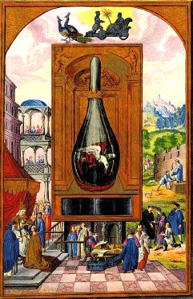
FIGURE XIII
(la lutte du fixe et du volatil)[une scène où il est question du poids des éléments, comme en témoigne la balance, la Justice, Thémis enfin. A gauche, le roi s'apprête à laisser place à plus jeune que lui. La lutte du fixe et du volatil est l'allégorie qui voile l'époque de l'oeuvre où la matière commence à réapparaître, pourvu que l'on ait bien pris les bons poids, c'est-à-dire les bonnes mesures]
A ce propos devons-nous étroitement observer comme un précepte d'assurance pour concevoir une douce appréhension de pouvoir obtenir le salaire précieux et prémédité de notre terre noire, le Solve et gela, que disent si souvent les bons auteurs, et déjà de nous tant de fois rechanté. Ce n'est pas peu de connaître le feu qui fait cette putréfaction et plusieurs beaux divers effets desquels dépend toute l'entrée et la conclusion de notre Saturne. Si tu veux promptement cet ouvrage abréger, - Rends-mol ce qui est dur, et le fixe léger, parce que l'essence de notre œuvre tire sa force de contraires qualités parfaitement unies. Rasis en dit autant au traité des lumières, parlant de la nécessité de cette mixtion métallique. Personne, dit-il, ne peut pas rendre légère une chose pesante sans recevoir l'aide d'une chose légère, non plus que transmuer une chose pesante en une essence légère sans l'entremise d'un corps pesant.Au quatrième la chaleur purifie chassant de son foyer le moindre objet de quelque impureté. Calid, à ce sujet, dit qu'il faut laver la matière par un feu chaud, pour faire une apparente mutation : aussi faut-il savoir que les minéraux assortis et alliés ensemble déchoient promptement de leurs premières habitudes par la communication réciproque de chacune de leur propre influence en l'infusion également dispersée par la totale masse de leur communauté, se dépouillant d'un vêtement particulier pour en faire puis après une proportion égale et mesurée à tout le gros de la minière, et quittant les mauvaises senteurs de leur infection par le moyen de notre Elixir renouvelé, duquel traite fort à propos Hermès, quand il dit qu'il est très nécessaire de séparer le gros du subtil, la terre du feu et le rare de l'épais. Il me vient à propos de rapporter ici les conceptions du traité d'Alphidius qui ne contredit en rien ce que nous en disons. Vous connaîtrez, par la lecture exacte de ses doctes écrits, le même avis qu'il en a du tout, semblable à tant de bons et renommés auteurs, qui nous ont tous laissés hésitants au même chemin.
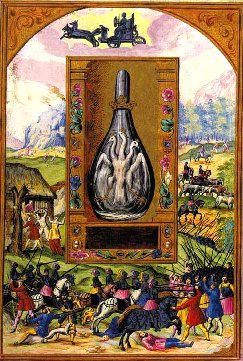
FIGURE XIV
(le Compost philosophal : Rebis et Mercure)[scènes de bataille ; le char est conduit par des loups, ce qui en dit suffisamment sur le symbolisme général de cette gravure. Ici, les natures métalliques s'affrontent au Mercure commun, et le vinaigre très aigre des vieux auteurs naît de ce combat, symbolisé par cette sorte d'hydre à trois têtes couronnées]
La terre, dit-il, vient à se fondre, comme une eau, de laquelle il sort un feu. Oui, puisque la terre contient en soi le feu, aussi bien que l'air est contenu dans l'eau. Rasis nous avertit de même que certaines mollesses de l'art doivent précéder la parfaite opération de l'œuvre, lesquelles nous appelons ordinairement et fort à propos, mondifications, pour ce qu'il faut premièrement fondre pour rendre la chose plus maniable, et que la matière soit réduite en eau qui est mollasse et principe de toutes choses, Ex aqua omnia fiant, ce qui se fait par la putréfaction [la seule manière rationnelle de considérer ici l'opération est de penser aux synthèses minéralogiques de P. Berthier et de J.J. Ebelmen ; on ne peut pas ne pas évoquer ici un fondant, une substance qui a le pouvoir d'en rendre d'autres « fluentes », par l'opération d'une dissolution.] : car dès le commencement de cette mondification on peut tirer quelque bon pronostic et ferme résolution de la Pierre des Sages, si les plus sales et difformes parties, comme excréments nuisibles et superflus à la pureté de ce bel œuvre en sont entièrement exclues et séparées.
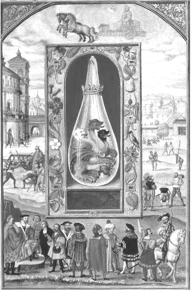
FIGURE XV
(Cerbère ou le Griffon hermétique : Compost philosophal)
[le combat se termine ; les natures métalliques sont à présent totalement dissoutes et s'apprêtent à être réincrudées. Les scènes de bataille ont disparu ; elles ont laissé place aux discussions des philosophes et à des scènes d'ambassade, où l'on voit des hérauts. C'est le temps tranquille de la Grande Coction. Voyez aussi l'étrange char qui tient davantage du cercueil ou du tombeau que d'un char d'assaut.]
Au cinquième la chaleur s'élève par la vertu du feu, et l'esprit caché de la terre sera renvoyé à l'air. C'est ce que dit Hermès dans sa Table d'Emeraude en ces termes. Il monte suavement de la terre au ciel, et derechef du ciel il redescend en terre, où lors il reçoit la force de toute force. Puis en un autre endroit : Fais le gros subtil et le subtil épais, et tu auras la gloire. Et Riplée, en ses Douze portes, n'en dit pas moins sous une autre figure :« Tirez les oiseaux du nid, et puis les remettez dans le nid : qui est élever l'esprit de la terre, puis le rendre à la terre »[c'est l'équivalent des sublimations de Philalèthe].
A ce même sujet disent les Philosophes, qu'ils reconnaissent pour un maître de la science celui qui peut tirer quelque lumière d'une chose cachée. Morien confirme cette opinion comme savant, et tombant en même cadence que les autres, aux doux accords desquels notre colonne se fortifie et s'accorde, il tire de la cervelle de tant de différents et relevés esprits, l'indice le plus fort d'une pure vérité :
« Celui qui peut donner soulagement à l'âme, la tirant hors de la putréfaction, sait un des plus grands secrets de l'œuvre.» [la naissance des cristaux : accrétion du Soufre à la Toyson d'or. Vraiment, on a peine à s'imaginer ce qui peut bien se cacher derrière cette putréfaction, et surtout cette renaissance, si l'on n'a aps étudié auparavant les Comptes Rendus de l'Académie des Sciences touchant aux synthèses par la voie sèche. Voyez ici Ebelmen.]
L'avis d'Alphidius est ici tombé sur la même rencontre en ces termes : Fais, dit-il, que cette vapeur monte en haut, autrement tu n'en retireras rien.
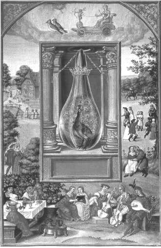
FIGURE XVI
(le paon : les régimes de Philalèthe et la Grande Coction)
[scènes champêtres. En haut, le char est conduit par des oiseaux et Cupidon s'apprête à décocher une flèche ; on peut y voir aussi celle du Sagittaire. La réincrudation des Soufres est proche et à ce satde, la matière est nourrie par le Mercure. L'apport du calorique doit être réglé exactement comme des notes sur des portées musicales. C'est pourquoi l'alchimie a souvent été confondue avec l'art de faire de la musique]
Au sixième, lors que la chaleur s'est tant et potentiellement multipliée en la terre, qu'elle ait réduit les plus fortes parties unies ensemble et rendues plus légères : elle surpasse en pureté les autres éléments : mais il faut que cette chaleur soit augmentée à l'égale et proportion de la froidure de l'homme. Calid nous autorise en cette opinion, et nous donne assurance de maintenir ce que nous en avons jugé :«Eteins le feu, dit-il, d'une chose avec le froid de quelque autre chose. »
Si ne faut-il pas pourtant que la frigidité excède plus d'un degré cette chaleur naturelle, pour ce qu'elle la suffoquerait du tout, comme le dit fort bien sur ce propos Raymond en la Théorique de son Testament.
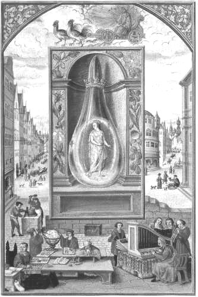
FIGURE XVII
(la Vierge couronnée : parturition hermétique)
[l'arc-en-ciel ; la parturition est proche. Les Artistes prennent encore plus de mesures et la prudence, ici, est importante à tous égards. Le vent doît pareillement être mesuré avec exactitude, ce qu'exprime la mélodie jouée, à droite, sur un orgue de barbarie. En haut, le char nous montre un Mercure en majesté, dont le char est conduit par les oiseaux d'Hermès]
Au septième, la chaleur tue et amortit la terre froide. A quoi le dire de Socrate peut fort bien convenir :« Lorsque la chaleur pénètre, elle rend les choses grossières et terrestres subtiles et spirituelles qui s'accommodent à la matière, non pas à la forme finale, ne cessant d'opérer avec elle moyennant cette chaleur susdite. Ce que les Philosophes appellent, plus ouvertement, distiller par sept fois, entendant les sept couleurs qui se font par la décoction continuée dedans un seul vaisseau et sans y toucher, laissant faire la Nature qui les délie et mêle d'elle-même par ses poids naturels.»
: ... car la Sage Nature - Apprend son poids, son nombre et sa mesure. A quoi conformément pouvons-nous dire ainsi par les oracles sacrés de leurs bouches véritables. Tu as lors divisé et séparé les humidités corrompues, le tout se faisant d'une seule décoction.
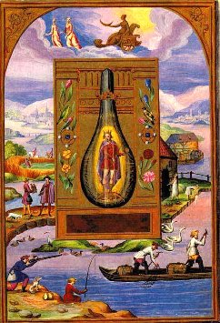
FIGURE XVIII
(la naissance du Basileus)
[scènes de chasse et, surtout, de pêche. C'est l'époque où le Basileus de l'oeuvre apparaît, l'époque où le rémore coagule la salamandre. Le char dont la roue montre le signe du Scorpion nous montre que nous sommes à l'époque de la réincrudation : ioV = venin.]
Actor, au quatrième des Proverbes, donne un autre enseignement, pour savoir bien régir et tempérer la chaleur opportune et le feu nécessaire à notre opération en ces termes : lorsque le soleil s'est rétrogradé, qui veut dire débilité et remis en sa première matière il démontre le premier degré qui nous est autant qu'un vrai signal de pusillanimité infirme et imbécile, à cause principalement de la diminution de sa chaleur naturelle, lorsqu'il est à la noirceur : puis il y a un ordre de l'air au lion qui corrompt cette première chaleur naturelle [il s'agit ici du Lion Vert, donc du Mercure commun ; c'est lui qui sert de moyen entre le feu vulgaire et les colombes de Diane], l'augmentant d'un feu brûlant et plus digérant que le feu commun, et cette ardeur excessive démontre le second degré, qui provient de la trop grande chaleur du feu, par lequel nous entendons la putréfaction, qui est la privation de la forme ; et derechef un autre certain ordre de l'air gardien du troisième degré suit de près les deux autres, non plus brûlant, mais de qualité tempérée, avec une médiocre constitution de l'air et un ordre mieux réglé, changeant sa violence en repos et tranquillité. Voilà le vrai moyen de mettre fin à l'œuvre et le sentier assurément frayé pour cultiver la vigne d'espérance, et parachever avec un bon succès le chemin déjà battu d'un air délicieux et de prospérité.
OPÉRATION DIVERSE DE TOUTE CETTE ŒUVRE COMPRISE EN QUATRE BREFS ARTICLES ASSEZ AISÉS A ENTENDRE
Le premier échelon établi des Alchimistes pour parvenir à la cime dorée de notre bel ouvrage, s'appelle des plus experts en cet art Hermétique, Solution, qui requiert selon nature même, que le corps soit bouilli jusques à parfaite coction. Tout notre magistère n'est que cuire, Coque, coque, et iterum coque, ne te taedeat. Plus tu cuiras, plus tu dissoudras ; plus tu cuiras, plus tu blanchiras et plus tu cuiras, plus tu rougiras : enfin cuis au commencement, cuis au milieu et cuis à la fin, puisque cet art ne consiste qu'à cuire : mais dans une eau se doit parfaire la coction des matières, c'est-à-dire dedans un vif-argent qui nous sert de cette matière, et dans le soufre qui est la forme : voulant plus clairement donner à entendre que l'argent vital qui se congèle demeure adhérant au soufre qui se dissout et lui est annexé [le Mercure philosophique est un fondant alcalin]. Junge siccum humido et habebis magisterium. Convertis l'eau en feu, et le sec en humide, enfin les Éléments les uns dedans les autres [voyez là-dessus la gravure I de l'Atlas des Connaissances Humaines de chevreul qui donne une idée fort bonne de la ronde des éléments ; elle est complétée par des pièces de Pierre Duhem sur les cosmogonies], et tu auras une planche assurée de ce que tu dois prétendre de l'esquif amoureux de notre présent œuvre, Couverte elementa et quod quaeris invenies. Les plus savants te promettent toute faveur, et te le signeront quand tu voudras, si tu sais le moyen de joindre le Mercure et le Soufre ensemble [c'est-à-dire le Soufre blanc àCorps ou toyson d'or et le Soufre rouge àÂme ou teinture]. Or cette solution n'est autre chose qu'un certain ordre de quelque humidité conjointe avec le sec, proprement appelée putréfaction, qui corrompt totalement la matière et la rend du tout noire. Morien lui donne semblable effet avec pareille nécessité de sa venue, pour espérer quelque chose de l'œuvre, dont elle en est la clé et le levain des Philosophes [sur le levain, voyez l'Idée alchimique et ce qu'en pense Chevreul. Pour lui, il était de toute logique que les alchimistes cuisent leur matière préparée avec de l'or ou de l'argent fermentescible. Bien sûr, Chevreul considérait alors l'hypothèse chimérique de l'alchimie orthodoxe. Nous rappelons que nous défendons l'hypothèse de l'alchimie réformée, telle que chevreul la conçoit dans le § 89 de son Résumé de l'Histoire de la Matière.]:
« S'il n'est, dit-il, pourri et noirci, il ne se dissoudra pas, et s'il ne se dissout, son eau ne se pourra glisser par tout le corps comme il doit nécessairement faire, ni le pénétrer et le blanchir. Il faut mourir pour revivre comme le grain de blé qui ne produit et ne germe jamais à profit, si premièrement il ne meurt et ne se pourrit du tout. »
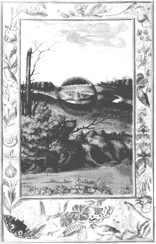
FIGURE XIX
(l'aurore : étoile hermétique, née de quelque désastre obscur...)
[Est-ce le crépuscule de l'Aurore ou bien le crépuscule du soir ? A gauche, un arbre coupé et sans feuillage semble montrer que nous sommes à l'Orient de l'oeuvre ; mais la scène au premier plan montre un arbre coupé, mais vert, et des feuillages.]
Le second rang est appelé Coagulation, qui toutefois peut être dite une même chose avec la solution, faisant mêmes effets, la diversité qu'on peut intermettre entre deux n'étant causée que de tant soit peu de distance qu'il y a à parfaire les mutations des premières essences en natures diverses, qu'on qualifie de divers noms pour s'opposer seulement à la confusion des premières intentions et pour en priver les ignorants et y amener les enfants de notre science à sa vraie connaissance. Cette coagulation donc remet de nouveau l'eau dans un corps, car en se congelant il se dissout, et en dissolvant il se congèle, pour nous montrer que le vif-argent qui est un dissolvant du soufre métallique, et lequel il attire à soi pour être congelé, désire de nouveau se conjoindre à l'humidité radicale de ce soufre, et ce soufre derechef s'allie en son Mercure : et ainsi d'une amitié réciproque ne peuvent-ils vivre l'un sans l'autre, s'arrêtant amiablement ensemble [cette fuite des Eléments, car c'en est une, permet de donner une explication entièrement retionnelle du FIXE et du VOLATIL. Il faut décidément entendre que le FIXE, dans tout l'oeuvre, n'est qu'en puissance, et ce jusqu'à la fin de la Grande Coction ; c'est donc que le VOLATIL, c'est-à-dire le MOBILE y prédomine la plupart du temps.], comme n'étant qu'une nature, ainsi que très doctement le publie Calid sous le nom de tous les philosophes dans les secrets de son Alchimie, disant :
« Nature s'approche de nature, nature se fait semblable à nature, nature s'éjouit en sa nature, nature s'amende en sa nature, nature se submerge en sa nature, et se conjoint en sa nature, nature blanchit nature, et nature rougit nature. »
[cf. Bernard de Trévise] Puis il ajoute, la génération se retient avec la génération, et la génération se rend victorieuse avec la génération. A bon droit donc disons-nous que notre Mercure susdit recherche toujours l'alliance de ce soufre pour lui servir de forme, duquel il aurait été séparé avec tant d'indicibles regrets, comme ne pouvant pâtir la dissolution de deux amants si parfaits, que ce soufre qui sert de forme au Mercure le fait revenir à soi, et l'attire de l'eau de la terre sitôt qu'il s'en est désuni, afin que de ce corps composé de matière qui est le Mercure, comme nous avons jà dit, et de forme qui est le soufre, nous en puissions tirer une essence parfaite, en laquelle on reconnaisse la diversité des couleurs qu'il est besoin d'y voir, pour ce que la propriété des choses opérantes ne commence plutôt à se changer, que la pure conduite et la sûre entremise de ces choses vivantes et animées n'y soient prudemment régies et doctement conduites par la main des plus savants qui en ont déjà gouverné le timon et la rame ; n'étant pas peu de chose que de connaître un bon pilote à traverser sûrement cette mer, qui soit muni d'un bon vaisseau, c'est-à-dire travaillant sur la vraie matière et sachant la portée et la mesure des choses opérantes [voir là-dessus le Pilote de l'Onde Vive ou secret du flux et reflux de la mer et du point fixe, de M. E. S.D.M.B. - notez encore que le bateau Argos eut deux pilotes : Typus et Ancée, cf. Atalanta, XXV]; parce que par la solution, le mercure est fait semblable aux opératifs, au lieu qu'en la coagulation la chose est tolérée, en laquelle se fera l'opération. Mais il se faut représenter que cette science est fort à propos et par excellence comparée aux jeux des petits enfants, parce que tout art est justement nommé jeu, mais principalement celui des lettres, ludus litterarum, auxquels les bons esprits prennent plaisir, et les doctes autant de contentement sans aucun ennui que les enfants prennent de goût aux choses frivoles selon leur portée, et qui leur fait passer le temps à l'aise et sans appréhension d'aucune incommodité, comme la figure présente nous en représente naïvement l'objet et le portrait.
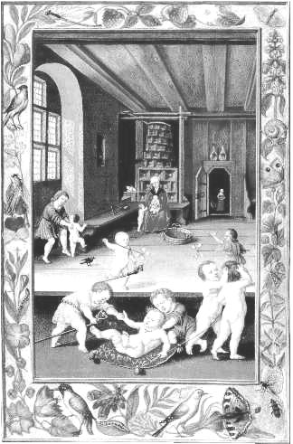
FIGURE XX
(le ludus puerorum)
[cette scène du Ludus Puerorum a été vue aussi dans notre analyse de l'Introitus de Philalèthe. Fulcanelli en a longuement parlé lorsqu'il a analysé des caissons de l'hôtel Lallemant, à Bourges ]
Le troisième degré des Naturalistes est la Sublimation, par laquelle la terre massive et grossière se convertit en son contraire humide, et se peut aisément distiller après qu'elle est changée en cette humidité : car sitôt que l'eau s'est réduite et rangée par son influxion dans sa propre terre, elle retient aucunement déjà la qualité de l'air, s'élevant peu à peu et enflant la terre retenue jusqu'alors au petit pied pour sa siccité béante et démesurée, comme un corps compact et fort pressé, laquelle néanmoins y reprend ses esprits, et s'étend plus au large par l'influence de cette humeur qui s'imbibe dedans, et s'entretient par son infusion dedans ce corps solide en forme d'une nuée poreuse, et pareille à cette eau qui surnage dans l'œuf, c'est-à-dire l'âme de lacinquième substance que nous appellerons, avec bonne raison, tinctus, formentum, anima, oleum, pour être la matière la plus nécessaire et la plus approchante de la Pierre des Sages : d'autant que de cette sublimation il en provient des cendres, lesquelles proprement (mais surtout moyennant l'assistance de Dieu [c'est-à-dire d'un sel du soufre], sans la bonté duquel rien ne réussira) s'attribuent des limites et mesures du feu, lesquelles il est clos et comme de remparts naturels enfermé. Riplée en parle ainsi et du même sens que nous :
« Fais, dit-il, un feu dans ton verre, c'est-à-dire dans la terre qui le tient enfermé. »[il est bien difficile de résumer d'une seule phrase, et aussi bien, le travail de la Grande Coction. C'est pourtant ce à quoi arrive Ripley qui donne, en cette phrase, pratiquement tout le secret de l'oeuvre. La terre du verre est évidemment celle qui avait conduit un potier, du temps de Tibère, à trouver par hasard le verre malléable dont nous parlons dans l'Atalanta fugiens : détail savoureux, c'est Sainte Claire-Deville lui-même qui avait, dans une soirée, raconté l'anecdote.]
Cette brève méthode dont nous t'avons libéralement instruit me semble la plus courte voie et la vraie sublimation philosophique pour parvenir à la perfection de ce grave labeur, fort à propos comparé pour sa pureté et candeur admirables, au métier ordinaire des femmes, c'est-à-dire au lavoir, qui a cette propriété de rendre infiniment blanc ce qui paraissait en effet auparavant sale et plein d'ordures, comme la suivante figure te le fera parfaitement connaître. Mais encore premièrement te veux-je admonester que je ne suis point seul qui donne mêmes effets à notre œuvre, qu'au métier des femmes, n'y ayant rien de si commun dans les meilleurs auteurs que cette vraie similitude. Ludus puerorum l'appelle faict de femme et jeu d'enfant, parce que les enfants se souillent et vautrent en l'ordure de leurs excréments, représentant cette noirceur tirée des propres mixtions naturelles de notre corps minéral [il doit être fait allusion ici à l'arcanum duplicatum], sans autre opération d'artifice que de son feu chaud et humide, digérant et vaporant; laquelle noirceur et putréfaction est nettoyée par la blancheur qui vient après y prendre place se faisant maison nette et purgeant de toute ordure cette première couche imparfaite, de même que la femme se sert d'une lessive et d'une claire eau pour rendre à son enfant la netteté requise à son entière conservation.
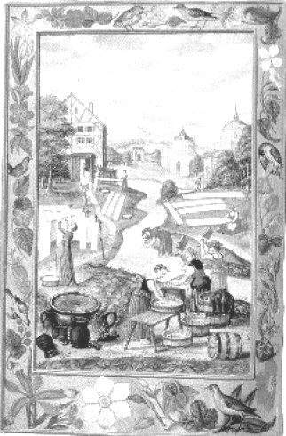
FIGURE XXI
(les laveures ignées)
[cette scène des Laveures est célèbre. C'est l'alkali fixe qui est ici évoqué et peut-être aussi, le savon des verriers.]
Le dernier de nos articles avertit le lecteur que l'eau se doit désormais séparer et diviser de la terre, puis se rejoindre et remettre ensemble de nouveau, afin que ces deux corps étroitement unis soient un homogène, si serrés et alliés ensemble que la séparation ne s'en puisse plus faire [il doit s'agir d'une allégorie sur l'obligation de réaliser l'union radicale des deux Soufres, par laquelle naît la Pierre] : Telle doit être aussi l'intention de l'ouvrier, autrement son labeur vainement entrepris ne prendrait jamais fin, mais demeurant toujours en même état, ne laisserait rien à son auteur qu'un regret plein d'ennuis d'être serf d'ignorance, n'ayant eu le pouvoir de réduire son œuvre en l'union naturelle d'un seul corps composé de choses différentes, desquelles nécessairement s'est-on servi à la construction de ce rare édifice : ni plus ni moins que le sage architecte qui dresseun bâtiment de diverses matières, auquel néanmoins tant de variétés n'enfantent en l'idée qu'une seule et principale fin, qui est le bâtiment, et un tout assemblé de diverses parties étroitement unies dans un corps compassé de plusieurs instruments.
Ce qui se peut donc dire de notre composition et des proportions qu'il y faut observer, est succinctement compris en la brève méthode de ces quatre articles précédents, sans s'alambiquer autrement l'esprit, rendu confus et égaré par les sentiers entrelacés des vestiges ambigus et des discours hyperboliques de tant d'auteurs qui n'en parlent qu'à tâtons ; de sorte qu'ils font errer les autres moins avisés sous le voile ignorant de mainte obscurité, retenant en cervelle ceux qui sont altérés, et qui sejettent à corps perdu dans la fontaine sans connaître le fond, sitôt que le soleil luisant fait briller de ses rais quelque superficie ; si que déjà se promettant tout au moins des monts dorés puisqu'il leur rit ainsi, ils travaillent après tous pantelants pour le pensersurprendre, et prendre la lune aux dents, dont ils se repentent tout à loisir, et du peu de prévoyance de leur bouillante témérité.Odi pupillos precocis ingenu. La patience vient à fin de toutes choses même des plus ardues, lesquelles sont ordinairement de plus de quête et de recherche, parce que difficilia quae pulchra.
C'est pourquoi la Tourbe dit : Patiemment et continuellement : les autres, nec te taedeat. Et Augurel, Puis patience en fidèle compagne, - Toujours te suive et toujours t'accompagne.
Après tous ces articles nous avons à traiter de la vraie manière de bien et méthodiquement gouverner le feu en la proportion de ses degrés, la connaissance duquel nous est si nécessaire, que sans cette science toute notre opération se rendrait inutile : assurés mêmement d'avoir choisi la réelle matière et de savoir le moyen de la semer en terre désirée, cela n'est rien, puisque, Qui manque d'un manque de toute chose. Uno avulso non déficit alter. Un seul poireau le visage difforme d'autant qu'on épie de plus près le moindre vice, qui suffit pour ternir et tenir toute la gloire en bride de quelque homme généreux, qu'on ne le loue de toutes ses vertus, qu'il s'est acquises par ses graves mérites. C'est donc pourquoi : Le Sage inquisiteur ne doit de rien douter, - Et qui ne sait pas tout, ne sait l'œuvre goûter. - Un régime de feu parfait l'économie - Qui règle les erreurs d'une errante alchimie. - C'est le fidèle agent qui dispose de tout - Et qui, ferme, soutient le siège jusqu'au bout : C'est le seul porte-clés de notre citadelle Qui pour garder son roi fait bonne sentinelle.
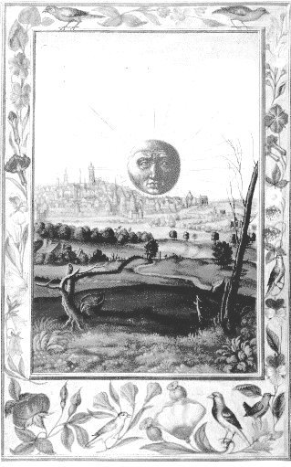
FIGURE XXII
(la Pierre au rouge)
[qui irait croire qu'il y a un rapport entre ces arbres morts que l'on voit au premier plan et la Pierre au rouge ? Pourtant, Nicolas Flamel nous dit que le Livre d'Abraham Juif était formé de feuilles constituées de bois de tendres arbrisseaux, et qu'il s'agissait d'un livre ferré...]
Pontanus nous en sait bien que dire, quand d'une sienne Epître [L’Epître, John Pontanus (Epistole de Igne philosophorum, manuscrit du XVIe siècle, n°19969 de la Bibliothèque Nationale) sur le feu secret et le De Lapide Philosophico, Francofurti, 1614] il nous veut rendre sage à ses périls (si les fautes d'autrui nous peuvent arrêter), qui par ce seul défaut s'éloignait à perte de vue de ses desseins, n'avançant non plus son œuvre en deux cents diverses fois qu'il le recommença, attaché néanmoins sur bonne et due matière, que s'il n'eût jamais rien fait. Cette ignorance lui coûta cher et de temps et de dépens, quoiqu'il ne fût que trop muni de belle patience requise en ce labeur : mais le feu naturel nécessaire à ce beau corps ne l'aidant de ses faveurs, il fut disgracié de sa prospérité, autant de fois qu'il voulut persister en son premier arrêt, tant ce gouverneur et père de famille peut au timon réglé et aux ressorts de ce riche vaisseau [allusion au Voyage des Argonautes ; cet épisode a permis à Fulcanelli de jouer d'un trait de cabale dévastateur avec son ANE-TIMON, autrement dit le Pont-aux-Ânes des mercantis. Traitez la stibine de quelque manière que vous voudrez, vous n'en récolterez jamais que du vent.]: fort à propos en pouvons-nous donc ici parler, et découvrir en peu de mots ce qu'il nous en sera permis d'écrire. Lorsqu'une chose s'apprête à la chaleur, ce doit être de telle sorte qu'on n'y puisse reconnaître aucune émotion perceptible, mais seulement un changement de son ordre naturel, comme celui qui convient au Soleil, auquel cette chaleur se doit du tout rapporter; qui est autant que si nous vous disions qu'une chose terrestre et sans esprit se peut rendre animée par le moyen d'une chaleur naturelle et conforme à celle du soleil et de la lune, non excessive ni brûlante, mais seulement médiocre, et à l'égal d'un corps bien tempéré. Or de quelles qualités sont ces deux principaux astres célestes, Senior [Zadith, qui serait l'auteur de l'AZOTH selon Fulcanelli, et non le pseudo Basile Valentin, qui, soit dit en passant, n'a sans doute jamais existé, aussi bien que Fulcanelli et Artephius : nous voilà avec trois fantômes sur les bras...] le démontre, quand il dit que le Soleil est d'une chaleur modérée, et la Lune froide et humide, mais comme moins parfaite elle monte en haut aspirant à son bien et empruntant de la plus noble partie ce qui lui manque, tant qu'à la fin elle paraît autant en force et en vertu que celui qui les lui a favorablement communiquées, si qu'ils agissent puis après également sur les corps de leurs célestes influences et les remplissent abondamment de leurs douées lumières. Or comme la chaleur et l'humidité font les générations, et partant nécessaires à notre fin, disent tous les auteurs, sur lesquels s'est assuré Flamel en son Sommaire Philosophique - Car chaleur et humidité - Est nourriture en vérité - De toutes choses de ce monde - Ayant vie, sur ce me fonde, - Comme animaux et végétaux, - Et semblablement minéraux - Chaleur de bois et de charbon. - Cela ne leur est pas trop bon, - Ce sont choses trop violentes, - Et ne sont pas si nourrissantes - Que celle qui du soleil vient. - Laquelle chaleur entretient - Chacune chose corporelle, - Pour autant qu'elle est naturelle.Ainsi les attachons-nous si étroiternent au magistère des Anciens, que par la rénovation de ces deux moyens, nous espérons faire sortir les rayons tous brillants de notre beau soleil, venant rafraîchir son amoureuse ardeur dans le sein argentin de sa lune épurée, dont nous voyons jaillir mille petits soleils, c'est-à-dire infinis, et qui se peuvent sans fin multiplier; or cela est la vraie Pierre des Sages. L'échelle des Philosophes pour monter à la connaissance de cette gloire, découvre entièrement quel doit être le feu de notre magistère, et de quelle mesure l'Ame des Philosophes veut être entretenue, nous en produirons comme en passant quelques diversités d'opinions : il est bien dit en ce lieu susnommé, que la chaleur ou le feu requis à cet ouvrage est compris en une forme unique, mais c'est trop succinctement dire ce qui en est, dum brevis esse laboro, obscurus fio. Quand mon discours trop court sert la brièveté, - Je viens et deviens serf de toute obscurité.
Nous nous éclaircirons de ce doute, et dirons maintenant que quelques-uns de la Tourbe veulent que la Chaleur du premier appareil ou du premier régime se doive aucunement rapporter à la chaleur de quelque poule couvante ; autres la veulent devoir être semblable à la chaleur du corps humain, et telle que la parfaite coction ou digestion des viandes envoyées à l'estomac la désire, pour convertir en substance du corps et en nature alimentée, la qualité et quantité nécessaires des choses nourrissantes ; d'autres encore la veulent rendre égale à la chaleur du soleil qui selon les objets produit des contraires effets, quoiqu'immuables en sa nature, ainsi que fait notre Pierre susdite, qui sans aucune opération se peut parachever, changeant son premier être et se laissant mourir pour revivre, à l'aide de celui qui lui a causé la mort ; pour ce que le feu des Philosophes retient les effets du scorpion qui porte la mort et la vie, tuant par son venin [ioVà vert-de-gris - cf. zodiaquez alchimique] celui auquel lui-même appliqué sur la plaie donne le dictame de guérison. Le feu trop violent ruine ce qu'il rencontre, le médiocre rafraîchit, et dissipe insensiblement ce qu'il veut entretenir et relever de son humidité. Ainsi le dit Calid : minor ignis omnia terit. C'est le moyen d'espérer une louable fin dès le commencement du labeur entrepris, que de lui donner la chaleur tempérée, laquelle sans brûler pénétre si vivement jusque dans les entrailles de ce corp massif qu'elle amollit sa dureté, et le fait ployer à toutes ses volontés, comme l'eau qui cause à la longue et par la continuité de sa patience les plus fermes rochers, ce qu'elle ne ferait jamais à force ouverte. La matière altérée et posément échauffée ne retient plus son lustre qu'en puissance, et changeant son beau teint, elle se couvre d'un voile obscur infiniment noir, qui la rend comme lépreuse et pourrie par tout le corps ; aussi la Fontaine des Amoureux l'appelle-t-elle lors : Or mêlé et Plomb des Philosophes [le plomb des Philosophes ou plomb des Sages n'est autre que le Mercure. l'or mêlé doit donc être l'Airain]. Quantum matatus ab illo On le connaît plus en sa diformité. Mais le temps amène tout, dissipe aux changements les ténèbres ombrageuses, et retire en sa saison son corps attiédi des cachots noirs de sa longue prison, lui redonnant une nouvelle forme affranchie pour ce coup de cette pourriture, de laquellenettoyé il reprend plus luisant qu'il n'était, l'agréable face de son embonpoint. Et d'un Maure parfait il devient Cygne blanc. [il s'agit là d'un point de cabale capital. Qui, en effet, irait chercher das de la terre grasse le SEL incombustible ? Or, c'est bien ce que professe Salomon Trismosin dans ce traité, qui s'avère être un des meilleurs, un des plus aboutis sous le rapport de la forme et de la fonction. S'est-on avisé aussi de ce que les somptueuses gravures donnaient à voir peut-être davantage par leurs bordures que par leur image centrale ? On aura là un aperçu du limbe des alchimistes.]
La vraie chaleur requise à ces effets ne doit être ni plus ni moins ardente que celle du soleil, c'est-à-dire médiocre et tempérée, pour ce que le feu lent est espérance de salut, et parfait toutes choses, dit la Tourbe : mais cette chaleur nécessaire es principes altératifs de notre opération est au signe des Gémeaux et quand les couleurs sont venues au blanc la multiplication doit paraître jusqu'à ce qu'une parfaite siccité se connaisse à la Pierre. Or, ne peut-on mieux juger si ce signe débonnaire y domine, que quand principalement la chaleur de notre feu n'est en rien différente de celle du soleil, car c'est celle-là qui y est sur toute autre requise, pour la grande sympathie qu'il y a entre les deux, contraires en eux-mêmes et se changeant selon les signes plusviolents ou plus doux qui les gouvernent, naturellement toutefois et sans aucun artifice. Mais sitôt que la Pierre est desséchée et se peut réduire en poudre, le feu jusqu'ici médiocre et tempéré doit reprendre ses forces et plus ardemment agir sur ce corps, àce que par son ardeur augmentée il lui puisse faire changer d'habits et muer sa robe blanche en une de plus haute couleur plus voyante et plus vermeille, [Fulcanelli dit qu'au quatrième degré de feu, la température est de 1200°C ; cela est en absolue conformité avec les expériences de Berthier, Ebelmen, etc. par voie sèche] qui sont les livrées ordinaires et les riches vêtements de notre grand Roi, délivré de sa prison dans laquelle si longtemps il s'était vu serré et en grande souffrance, par la diligente poursuite de son fidèle gouverneur qui l'en retira.
Le dernier degré de sa chaleur est tel que celui qui règne sous le signe ardent du Lion plus éclatant et furibond que tous les autres, car c'est lors que le soleil est le plus véhément en son plus haut degré de chaleur et qu'il est élevé en la plus haute dignité de son céleste domicile. Voilà suffisamment traité, pour la brièveté que nous recherchons de notre Institution Philosophique, du moyen qu'il faut tenir et étroitement observer au gouvernement du feu des Philosophes, sans lequel tu travailleras en vain,quiconque fois qui voudras essayer la dernière pièce, pour remporter la meilleure perfection de cet œuvre : il te doit néanmoins suffire de ce que nous t'en avons dit, plus clairement que si le discours était enveloppé de plus longues paroles; si tu m'entends je t'en découvre assez, à la patte on connaît le lion et l'ouvrier à son ouvrage.
DES COULEURS NÉCESSAIRES QUI SE DÉMONTRENT
EN LA PRÉPARATION DE CETTE PIERREPlusieurs auteurs de notre labeur se semblent contredire et détruire l'un l'autre en la diversité de leurs opinions, et qui ne sonderait de près leur commune intention, ou si les plus savants ne prévoyaient des mieux à quel dessein cette variété, ils pourraient bien longtemps suer à tirer une essence d'esprit de leurs subtilités, tant l'écorce noueuse de leurs écrits douteux est forte à émonder en toutes ses parties, et principalement lorsqu'ils veulent traiter des couleurs de notre œuvre, desquelles succinctement nous dirons quelque chose ; n'ayant pas toutefois entrepris de les déduire toutes, et retirer de leurs cachots l'une après l'autre pour les mettre en lumière, mais seulement nous croirons nous être assez dégagés de nos promesses, si nous en tirons des plus apparentes et qui retiennent les autres pour s'en servir légèrement aux affaires de simple conséquence en leur gouvernement, pour fonder le secret de ces têtes plus mûres et qui conduisent entièrement l'économie et l'état important de leur seigneur, par l'intelligence desquelles nous connaîtrons assurément ce qui est même réservé au cabinet le plus sacré et plus intérieur d'un roi si prévoyant pour nous en servir au besoin, sans rechercher des moindres offices de sa cour, la charge et les qualités qu'y peuvent obtenir les officiers des moyennes couleurs. Miraldus, l'un de ceux de la Tourbe des Philosophes, dit sur notre propos, ayant en cette question colligé le consentement de tous les autres bons auteurs, que notre corps métallique noircit deux fois [les deux putréfactions de Le Breton, l'une à la 1ère séparation, l'autre avant la conjonction, au 3ème oeuvre], blanchit deux fois [il y a plusieurs corps blancs dans l'oeuvre ; en bref, on peut retenir d'abord l'alkali fixe à l'état de pureté et le Soufre blanc, terre de Chio ou de Samos], et rougit aussi deux fois, bis nigrescit, bis albescit, bis rubescit, qui sont les permanentes et principales couleurs, changeant à mesure de la chaleur plus ou moindre : car il très certain qu'on y en reconnaît une infinité d'autres, mais pour ce qu'elles lui sont accidentelles, nous ne les mettons pas en ligne de compte, de peur de brouiller les cervelles légères aussi bien que le papier, et que tant de couleurs que vous vous pourriez imaginer, dépendent entièrement de ces trois ci-dessus spécifiées, et reviennent enfin sur la symétrie proportionnée de l'une de nos souveraines. Et n'est pas sans raison que les auteurs par l'inspiration de quelque saint enthousiasme raccourcissent cette diversité au nombre ternaire, mystique et déifié où s'aboutit le terme glorieux de toute félicité. Entre ces trois pourtant (pour ne te rien celer de notre brève méthode) qui sont les principales et permanentes du roi terrestre et métallique des philosophes, nous en pourrons bien discerner quelques autres différentes et entremêlées, lesquelles néanmoins nous taisons industrieusement et de fait délibéré, pour n'être que couleurs imparfaites et non de telle nature et consistance qu'elles soient dignes, attendu mêmement notre compendieuse intention, d'être mises au rang de nos trois permanentes, noir, blanc, rouge, pour les nommer selon leur rang, lesquelles absolument et immédiatement comprennent toutes les accidentelles qui y puissent arriver : partant n'est-il autrement besoin d'en écrire autre chose, sinon que pour le contentement des plus curieux, nous produisions les causes qui nous peuvent honnêtement mouvoir à passer sous silence le nombre général de celles qui paraissent les unes successivement aux autres entre les principales susmentionnées, pour ce que leurs effets sont de si peu d'effet, à l'égard au moins des permanentes (notre œuvre naturelle n'agissant rien en vain) et leurs couleurs si peu apparaissantes, que s'écoulant comme insensiblement et quasi hors de vue, nous les laissons plus soudainement qu'elles-mêmes ne nous quittent, car elles s'y arrêtent d'une démarche si légère, que l'ombre à peine de leur substance seulement n'y paraît, qu'elles ne s'évanouissent aussitôt dans le vaisseau d'un pas égal à l'inconstance. C'est pourquoi de s'arrêter plus longtemps à discourir de chaque espèce et de leur propriété particulière, ce serait n'avoir autre chose à faire, et prendre l'incertain pour la chose certaine, car de toutes ces couleurs qui viennent à pas tardifs et avec tant de lenteur qu'on ne les peut aisément discerner, nous n'y voulons asseoir notre plume, attentive à des desseins plusrelevés, mais seulement sur quelqu'une jaunâtre et de légère couleur, mais qui retire à peu près sur la blancheur parfaite devant la dernière rougeur, pour ce que celle-là demeure assez longtemps visible en la matière, la comparant à la légèreté des autres, et pour cette raison les Philosophes lui font-ils tenir place de même principauté qu'aux autres, la tenant au rang des couleurs nécessaires; non pas, dis-je, qu'elle s'arrête dans le vaisseau si longuement que les trois, qui y demeurent permanentes en la matière l'espace de quarante jours chacune, mais pour autant qu'après ces autres-là, elle s'y tient le plus : lesquelles on a comparées aux Quatre Eléments qui influent et dominent sur les corps autant humains que minéraux ; la noirceur à la Terre
[il y a deux terres en alchimie, toutes deux congénères, l'une, d'une part, livrant le Soufre blanc et peut-être aussi le Soufre rouge qui est un métal à trois pointes, et d'autre part l'autre, livrant la matière voilée par Thémis et le sel polychreste]
qui est le plomb des Philosophes et la base ferme pour assurer le faix [voûte àarcanum] des autres ; la blancheur à l'eau, qui sert de sperme à la femme du ciel pour la génération ; la jaunâtre à l'air, qui est le père de la vie, et la rougeur au feu qui est la fin de l'œuvre et sa dernière perfection. La noire qui s'apparaît deux fois aussi bien que la rouge, est beaucoup en crédit entre les plus fameux, pour ce qu'elle porte la clé pour ouvrir la porte à qui bon lui semble des couleurs, ayant un feu qui lui administre toutes ses nécessités, et de qui seule elle relève aussi, tenant les autres sous sa loi, car sans icelle on ne peut espérer aucun heureux effet de toute l'entreprise [la dissolution radicale, 2ème des putréfactions] : son humeur n'est pas si farouche ni si dur à plier que la rougeur, mais beaucoup plus maniable et aisé à traiter, ne demande pour tous mets qu'une douce chaleur qui puisse faire l'ouverture du levain corrompu, se laissant vaincre à la patience et à l'humidité plutôt qu'à la rigueur et à la violence d'un rude gouverneur qui dissiperait tout au lieu de l'amender. Senior servant de loi à plusieurs bons auteurs qui tous approuvent sa volonté sur le point que nous traitons, s'accorde à notre avis, quand il remontre en ses écrits, que la parfaite décoction de la matière se doit entretenir d'une chaleur tempérée tant que le corbeau pourri [le Caput mortuum du bain de l'aqua sicca]se soit évanoui et ait cédé son rang à une autre teinture. Puis donc que c'est le feu (au rapport de la Complainte de Nature parlant ainsi : Le feu est noble et sur tous maître, Et est la cause de faire naître, Par sa chaleur et donner vie, etc.) qui tient la main à l'œuvre prend langue du chemin qu'il lui faut assurément tenir : je ne m'étonne plus si les docteurs de la grande Tourbe ont annoncé par la doctrine de Lucas, un de leurs associés, qu'ils font grande estime de l'ouvrier qui connaît le feu et les saisons de le violenter :
« Gardez-vous bien, dit-il, d'un feu qui soit trop fort pour un commencement. »
Que si devant le temps, il est trop violent et hors de ses mesures, il brûlera ce qu'il devrait pourrir, principe de la vie, et la peine inutile ne nous rapporterait qu'un extrême regret confus et déplaisir indicible d'un salaire vainement attendu par une voie illicite de violence, cause de rébellion et d'opiniâtreté. C'est ce que dit fort à propos Marie la Prophétesse :
«Le feu fort, garde de faire la conjonction »
et la vraie dissolution de la nature. Et en autre lieu elle dit encore :
« Le feu fort teint le blanc en rouge de pavot champêtre.»
A quoi s'accorde le Trévisan quand il dit que le feu doux et tempéré parfait l'œuvre, au lieu que le violent le détruit.Si donc en toutes choses la fin de toute entreprise est à considérer dès son commencement, en celle-ci principalement se doit-on rendre plus attentif, parce que si tu ne sais la règle de ton feu en chaque saison, qui est le plus grand heur de tes prétentions et, qui mène entièrement l'œuvre à sa perfection, c'est fait de ton labeur, car en la connaissance de l'ordre des couleurs consiste tout le point d'une grande science et de l'arbre d'Hermès, selon les Philosophes qui nous enchantent si souvent cette divine leçon. Aes nostrum si bene scis, sufficiet tibi mercurius et ignis. Le noir est le premier qui fait brèche au vaisseau, - Le blanc le suit de près, humide comme une eau, - Et le rouge en couleur tient la dernière place. Balde, en la Tourbe, parlant des mêmes couleurs que nous devons étroitement observer, nous avertit de cuire notre composition jusqu'à ce que nous la voyons devenir blanche, laquelle après il faut éteindre dans du vinaigre, par lequel il entend l'eau mercuriale de la matière qui est le feu et l'eau philosophale. Et aqua est ignis comburens solem magis quam ignis, disent le grand Rosaire et la Tourbe; Aqua nostra fortior est igne quia facit de corpore auri merum spiritum, quod ignisfacere non potest, dit encore Geber à même fin. Il faut savoir aussi séparer le noir d'avec le blanc, car la blancheur est un signe approchant de la fixation. Or ne les peut-on mieux distinguer que par un feu de calcination, puisque sans l'addition et multiplication de la chaleur sur la douce température de celle qui a précédé et dominé sur la noirceur d'une corruption, la division de nos degrés de couleur ne se peut aisément faire. Ce qu'ayant enfin obtenu par l'industrie d'un tel feu, il nous reste un gros de terre, que plusieurs ont appelé père de la matière, en forme d'une terre noire et rude qu'ils nomment leur Saturne, terram leprosarn et nigram, une terre lépreuse, pourrie, et noire, que quelques autres appellent le monde inférieur, laquelle ne se peut plus mêler avec la pure et subtile matière de cette Pierre, car il faut séparer du subtil le gros, et du rare l'épais; ce qui se fait en décuisant sans y toucher ni des mains ni des pieds, pour ce que opus magnum semetipsum solvit se sépare et divise de soi-même, disent Raymond Lulle et le Trévisan : L'Hortulain sur la Table d'Emeraude dit de même :
« Tu sépareras, c'est-à-dire dissoudras, car la dissolution est la séparation des parties »
et qui sait l'art de dissoudre, il est parvenu au secret, selon Rasis. Or c'est là le refrain que nous chantent sans cesse tous les bons Philosophes, lorsqu'ils nous avisent si souvent que le rouge et le blanc doivent être retirés du noir, et lors en lui ne trouve-t-on plus rien de surabondant ayant résigné toute sa force aux susdites couleurs, et n'est plus aussi sujet à diminution, mais le tout par après se rend conforme au rouge très parfait ; et c'est pourquoi le veulent-ils tirer à force et véhémence de feu, au dire même de la plus saine part des doctes de la Tourbe. Lorsque les couleurs, disent-ils, viennent de plus en plus à se muer et altérer, le feu se doit plus violemment augmenter qu'auparavant sans craindre désormais qu'il puisse rien gâter, car la matière s'affermit sur le blanc, au temps duquel l'âme se joint inséparablement avec le corps, et les esprits descendus du ciel en cette terre ne s'en départent plus. Ainsi nous le certifient les paroles du Philosophe Lucas :
« Quand notre Magnésie, dit-il, s'est transmuée au blanc, elle appelle les esprits à soi qui l'avaient délaissée, desquels elle ne se sépare plus. »
Le Maître des Philosophes Hermès passe plus outre, et dit qu'il n'est déjà nécessaire de parachever la Magnésie blanche, jusqu'à ce que toutes ses couleurs soient accomplies, lesquelles se sous-divisent en quatre diverses eaux, c'est à savoir de l'une à deux et trois à une, la dernière desquelles parties convient à la chaleur, et les trois autres à l'humidité.
Retiens aussi pour assuré que les eaux susdites sont les poids des Philosophes, et ces mêmes poids sont les couleurs de la matière, et les trois couleurs principales sont les trois feux des Philosophes : naturel, non naturel et contre nature. La comparaison que font les amateurs de la science de notre Œuvre à la vigne n'est point trop hors de propos, je la proposerai succinctement pour n'ennuyer le lecteur bénévole. Il faut savoir que le sarment ou la vigne qui en est le suc et comme la couleurblanche de la matière, sera tiré hors de sa quintessence, mais son vin sera parachevé au troisième degré selon la vraie proportion, car il s'augmente en la décoction et se forme en la pulvérisation, qui sont les seuls moyens pour comprendre en soi le commencement et la fin de cette pépinière naturelle. C'est pourquoi aucuns de nos docteurs nous ont laissé par écrit que le cuivre philosophal sera du tout parfait en sept jours par lesquels nous entendons les sept couleurs métalliques, dont la rougeur parfaite est la dernière ; d'autres ne lui prolongent son terme de perfection plus avant que de quatre jours, qui se peuvent rapporter aux quatre couleurs principales que plusieurs lui attribuent seulement, et desquelles principalement dépend toute l'œuvre, d'autres ne lui donnent que trois jours, qui sont termes attribués aux trois plus fortes et plus nécessaires couleurs permanentes en la matière, et quelques autres encore moins épargnant le temps et le livrant à bonne mesure lui assurent charitablement un an entier pour se rendre hors de tutelle, et pouvoir absolument après user de tous ses droits, sans autre gouverneur que de sa discrétion capable d'entretenir un monde de ses bienfaits et libéralités : Ce terme d'an pour sortir hors de page, se peut encore accommoder aux quatre saisons de l'année, et aux Quatre Eléments, qui n'ont pas peu de droit sur notre matière. A quoi se rend du tout conforme le jugement qu'en fait Alphidius, suivi de plusieurs autres de la même société, jugeant la fin de l'œuvre par la fin des quatre temps de l'année, au printemps, à l'été, à l'automne et à l'hiver, pour ce que derechef l'an est composé des quatre saisons [d'autres n'admettent que trois saisons àle Songe verd attribué à Bernard de Trévise] ; plusieurs autres l'abrègent en un jour qui est le temps de la décoction parfaite, métaphoriquement parlant, car un an philosophal est tout le temps préfini de la décoction, qui en une semaine, qui en un mois. Arnauld, Raymond, Geber, l'Hortulain et Augurel parlent de trois ans, parce que chaque couleur est comprise pour un an. Toutes lesquelles diversités se rapportent à un même but et à un même sens, par la doctrine, expérience et dextérité des plus capables qui la savent, mais qui recèlent toujours en leur arrière cabinet le temps, les noms et la matière : ce que ne peuvent pas comprendre les ignorants, auxquels sagement par ce moyen les Sages interdisent la vénérable entrée de leurs Ecoles mystérieuses, comme Platon défendait absolument la communication de son éloquence divine à ceux qui n'avaient la connaissance des mathématiques. Pratique étroitement observée des Philosophes en l'administration de leur œuvre pénible, ne la communiquant par leurs ambiguïtés qu'à la capacité des fils de la science, et à la sonde diligente des esprits relevés et entendus en telles choses : que s'ils ne sont pas tels, ils ne s'en doivent point mêler, mais plutôt s'éloigner du seuil de cette porte fâcheuse pour eux, de peur d'y achopper trop lourdement et donner du nez en terre. Procul hinc, procul este prophani.
DE LA PROPRIÉTÉ DE TOUTE L'ŒUVRE
ET DE L'ENTIÈRE PRÉPARATION DE LAPIERRELa calcination ou déalbation entre les Philosophes tiendra le rang qu'un bon père de famille fait en une lignée, à laquelle il pourvoit de ses nécessités, aussi lui font-ils tenir le premier degré de son Economie dès le commencement de l'œuvre, et lui continuant le principal honneur de cette charge sur l'entière administration de nos métaux, jusqu'à ce que par sa discrétion prévoyante, son vice gouverneur, établi pour les ranger chacun en son devoir, les ait réduits à la fin honorable de leur perfection. Or ayant ici sujet de traiter de cette déalbation et le loisir d'en dire quelque chose, il nous fait remarquer que les Philosophes en établissent de trois façons [il s'agit là d'indications originales ; ni Fulcanelli ni E. Canseliet ne s'étendent sur la déalbation, cf. aussi l'analyse de la porte alchimique de la villa Palombara], dont les deux premières appartiennent au corps, la troisième à l'esprit. La première est encore une préparation de l'humidité froide qui préserve le bois des injures du feu, qu'ils appellent leur Saturne, parce que Saturne fait la congélation des spermes : et de celle préparation dûment faite, nous concevons en l'âme le bon succès d'un heureux commencement. La seconde est une humidité grasse qui rend le bois susceptible du feu, et combustible, laquelle on dit être l'huile visqueuse des Philosophes, et qui vient après la corruption ; or cette huile-là est celle qui donne la teinture, et le premier menstrue philosophal et leur premier vaisseau. Mais la troisième est comme une incinération de terre sèche, qui est au blanc, douée d'une pure, vraie, fixe et subtile humidité, qui ne rend aucune flamme, ne laissant néanmoins de se former un corps clair, transparent, luisant, et diaphane comme un verre, qui est la pure et parfaite blancheur, et la marguerite des Philosophes, et leur or blanc, et la moitié de l'œuvre : aussi que la calcination ne leur est autre chose que purement blanchir; Quandodealbatum fuerit aurum, post denigrationem ejus, nominatur aurum nostrum, et calx nostra, et magnesia nostra, et aqua permanens, dit subtilement Morien. Voilà donc la manière de calciner selon les Philosophes, par le moyen d'une eau permanente ou d'un vinaigre fort qui est la quintessence de la matière et l'âme de la Pierre. Mais notons en passant que les métaux participent tous de cette humidité radicale, laquelle n'est rien qu'un commencement de toutes choses molles : aussi est-ce pourquoi tient-on assurément la calcination des philosophes n'être autre chose que la blancheur et la purgation et la restauration de la chaleur naturelle : ou un indice parfait, dévoiement, disturbation, et expulsion de l'humidité superflue, et une attraction d'une ignée humidité, qui est cette blancheur pure que nous nommons soufre interne des Philosophes, séparant le soufre accidentel et superflu qui est la corruption; autrement une douce liqueur, de laquelle proviennent la substance animée de notre œuvre, la quintessence souveraine de tout bonheur, le meilleur esprit et la vie, desquelles est tirée la parfaite rougeur, et l'heureuse fin de l'œuvre. Or cette liqueur se fait ordinairement avec l'eau des Philosophes, qui est proprement la sublimation ou résolution des Sages, ou l'exaltation et la blancheur, et leur eau permanente : mais de telle force particulière, qu'elle change bientôt la dure siccité en un souple et maniable amollissement, tirant dehors la quintessence, qui est la Pierre admirable des Sages, le Mercure végétal qui sépare et conjoint les éléments. Ce qui arrive principalement à cause que la partie que la violence du feu a consommée et comprimée ensemble est devenue subtile par l'esprit, qui est une eau résolvante et une humidité des corps corrompus avec une chaleur amassée et annexée avec l'esprit et radicale humeur; toutes lesquelles choses sont une racine de tous les éléments philosophiques, lesquels il faut refaire de nouveau après la corruption, qui sont ces quatre couleurs parfaites, dont la rougeur est la dernière. Et puis te convient par bon sens - Séparer les quatre Eléments, - Lesquels tous nouveaux tu feras - Et puis en œuvre les mettras, dit sagement la Fontaine des Amoureux de Science. Or la sublimation se nomme une vapeur terrestre plus grossière, mais subtilement faite en une humidité d'eau, et inflammation ou humidité de l'air, avec chaleur de feu bien tempéré, laquelle chaleur cause absolument la mutation et changements nécessaires des éléments : et quiconque sait cette mutuelle conversion des uns aux autres, celui-là est assurément dans la parfaite voie, en laquelle il trouvera ce qu'il y cherche dans la quintessence épuisée des éléments entiers, et ne retenant plus de leurs immondicités superflues et sales ordures. Or, cette quintessence est unehumidité opérative d'excellente nature, laquelle donne lustre à tous les quatre éléments sans être comprimée, les transmuant en sa propre nature de quintessence, et cela s'appelle l'âme du monde comprise en toutes choses, que nous nommons aussi le feu des Philosophes. C'est encore la vraie fixation de laquelle parle Geber. Rien, dit-il, ne deviendra ferme, soit qu'il reçoive quelque lumière, ou devienne une belle et pénétrante substance, car de là vient le soufre des Philosophes, et la cendre qui en est tirée, sans la lune qui est toute la maîtrise et de très grand effet, car en icelle se conserve une eau de métaux, laquelle se réjouit au corps qu'elle anime et rend vivant : ce qui est une mixtion de blanche et rouge teinture, et un esprit figurant, car la Lune contient obscurément en soi la teinture du Soleil, qu'elle produit en forme de soufre rouge sur la fin de la décoction, le tout par le moyen de l'âme du monde et le feu des Philosophes qui fait tout de soi-même. Plusieurs noirceurs et corruptions se trouvent encore en cette ablution, par le feu chaud qui purifie toutes choses, et blanchit les choses noires, lesquelles une fois amorties et réduites à néant, rendent en même temps la vie à la matière, en laquelle on connaît une pure et entière chaleur entremêlée d'une douce humidité des métaux, desquels la matière teinte reçoit force et vigueur.
La putréfaction tant désirée de tous les Philosophes, comme l'Ame première de leur meilleure étude, sera parfaite et accomplie, lorsque manifestement elle sera brisée et détruite de sa première forme et d'une couleur noire, qui devient blanche attirant le secret en dehors par la corruption, car ce qui était caché auparavant icelle se montre en évidence et se rachète de la mort, tant on donne de pouvoir sur notre ouvrage à l'essence noire du soufre des Philosophes. C'est aussi ce que dit Arnauld de Villeneuve en son Rosaire : Hujus operis perfectio, est naturae permutatio, le tout ne consistant qu'en la conversion de diverses natures. Raymond en la Théorie de son Testament en est de même avis :
« L'art, dit-il, de notre magistère dépend de lacorruption.»
Et dissolvimus, ajoute-t-il encore, cum putrefactionibus. Et en un autre endroit, il dit que quiconque sait le moyen de pouvoir détruire, c'est-à-dire, dissoudre l'or, il est parvenu jusqu'au secret. Et notre pierre, poursuit-il toujours, ne se trouve jamais que dans le ventre de la corruption : lapis noster nunquam invenitur nui in ventre corruptionum. La Tourbe des Philosophes y contribue aussi ces mêmes paroles. La pourriture, disent-ils, est le premier ascendant et la plus belle espérance de tout l'œuvre, laquelle découvre et met en vue le plus haut mystère de cette opération. Qui est principalement une certaine distinction et vraie conversion des éléments, en leur essence et première matière - D'où se collige et peut voir l'œuvre entière.
C'est de ce changement duquel nous avertissent si souvent ceux de cette docte Tourbe après tant d'autres Anciens :
« Change les éléments, et ce qui est humide fais-le devenir sec et ferme »
lesquels passant encore plus outre, assurent que la matière et ce qui en dépend est, comme il faut préparée lorsque le tout est dûment pulvérisé, et ne fait qu'un corps ensemble ; qui pour cet effet aussi est fort à propos nommé conjonction des philosophes. Considère donc encore une fois que la calcination se fait en vain, si quelque poudre n'en est tirée dehors, laquelle est l'eau des philosophes, dite cendre d'Hermès ou poudre de mercure, selon même que nous le montre Augurel en ces termes : L'eau que J'entends extérieurement - D'une poudre à l'espèce proprement.
La décoction est aussi une des principales et nécessaires parties que doivent rechercher ceux qui savent employer la fleur de leur meilleure vacation sur les essais de notre magistère. Albert le Grand est bien de cet avis entre les autres Philosophes qui n'en font pas moins d'état, mais puisqu'il s'est le premier présenté devant mes yeux, j'en rapporterai les paroles. De tous les arts, dit-il, même des plus parfaits, nous n'en savons pas un qui de plus près imite la nature que celui des alchimistes, à cause dela décoction et formation qui se cuisent en une eau rouge et ignée des métaux, tirant de près les vives qualités du soleil et tant soit peu de la nature, aussi est-ce une assation et commune dissolution des Philosophes, dont l'humidité se consommera peu à peu avec le feu clair : mais il faut bien prendre garde, que l'esprit, qui est ainsi aride et desséché du corps, ou ne correspondra plus au dit corps, ou bien il ne sera encore assez du tout épuré et parfait.La distillation des Philosophes, autrement appelée clarification, apporte un grand avancement à la conclusion de notre ouvrage, que nous disons être une certaine purification de quelque matière avec une humidité radicale, lesquelles jointes font espérer aux sages une fin désirée de tout l'œuvre ; moyennant cette coagulation, l'alliance parfaite se fait et la conception du soufre non vulgaire, et du Corbeau ou du Faucon d'Hermès, qui se tient toujours, dit-il, avec le Trévisan, au bout des montagnes,c'est-à-dire sur la superficie du métal, quand il est spiritus niger non urens, l'esprit noir et non brûlant, criant sans cesse :
« Je suis le blanc du noir et le rouge du citrin. »
La rencontre que j'ai fait d'un bel énigme sur cet oiseau me l'a fait recueillir, le trouvant assez sortable à notre sujet, en mémoire duquel il a été doctement composé; puisque la curiosité modeste de notre œuvre mystique y est comprise, j'en ferai libéralement part à la souvenance et au mérite du lecteur bénévole.
J'habite dans les monts, et parmi la planure.
Père devant que fils, j'ai ma mère engendré,
Et ma mère sans père en ses flancs m'a porté
Sans avoir nul besoin d'aucune nourriture.
Hermaphrodite suis, d'une et d'autre nature,
Du plus fort, le vainqueur, du moindre surmonté,
Et ne se trouve rien dessous le ciel voûté,
De si beau, de si bon, et parfaite figure
En moi, dans moi, sans moi, naît un étrange oiseau
Ou sans ailes volant, mourant se revifie,
Et de nature l'art en en suivant la loi,
II se métamorphose à la fin en un roi,
Six autres surmontant d'admirable harmonie.[cette énigme débute par la localisation du vitriol romain ou Soufre rouge ; elle se poursuit par la façon dont le Mercure fait progresser la matière, par lui-même en quelque sorte - agent minéralisateur - L'hermaphrodite définie le Rebis ou homme double igné de Basile Valentin. L'étrange oiseau n'est autre que le phénix.]
Le Rosaire nous parle aussi de la coagulation qu'il compare au corbeau qui vole sans ailes, laquelle se fait principalement par la dissolution causée de la chaleur, et par la congélation causée par la froideur, qui sont les deux moyens de la parfaite génération.Hermès parlant de quelle chaleur tout l'œuvre se peut entretenir dit en sa Table d'Émeraude, que le Soleil en est le père, la Lune en est la mère, et le feu tiers le gouverneur : nous remontrant que sa force - Est toute parfaite et entière - Quand il retourne en terre arrière. Et lorsque par degrés cet Elixir vient à se muer en terre ferme, laquelle puis après peut servir à tant de diverses opérations qu'on ne peut les nombrer, sur quelque corps propice qu'on la veuille appliquer. Et pour cette raison la pouvons-nous aussi comparer à une aire bien fournie, qui conserve sûrement tous les grains qu'on lui présente, et fait profit de toutes choses, comme notre art étant parfait convertit tout ce qui rapporte et approche de sa nature en sa même nature, et fait étant secouru de suffisants matériaux des bâtiments admirables et dignes d'un parfait architecte du soleil.
DE LA DIVERSE OPÉRATION DE L'ŒUVRE, DE LA VARIÉTÉ DES NOMS ET DES SIMILITUDES DONT USENT LES PHILOSOPHES EN CET ART POUR LA PRÉPARATION D'ICELLE ŒUVRE
C'est un dire commun entre les Philosophes que celui-là sait industrieusernent un excellent chef-d'œuvre des métaux et se rend des plus grands maîtres en cet art, qui peut éteindre et amortir la vivacité du mercure : si ne faut-il pas pourtant arrêter sur cette lettre si crue, qu'il ne soit aucunement besoin d'y gloser quelque sens, parce qu'ils traitent tous diversement de leur mercure. Nous mettrons en avant pour l'entrée de leurs controverses mercuriales, ce qu'en dit Senior, par la préférence que lui donne son nom sur les autres auteurs :
« Notre feu, dit-il, est une eau, mais lorsque tu pourras approprier un feu à un autre feu, et un mercure à un autre mercure, cette science te suffira pour la fin glorieuse de tes prétentions.» [manière de dire que le feu secret est d'abord, après sa préparation, comme une poudre sèche qui ne mouille point les mains. L'Artiste doit d'abord mixer dans son creuset des matières porphyrisées ; de cette terre délitée, il fera ensuite une EAU IGNEE ou un FEU AQUEUX par le secours du calorique ou FEU vulgaire. Dès lors, les matières se dissolvent et le MERCURE s'ajoute ainsi au MERCURE, par l'aide des deux colombes de Diane.]
Vous voyez comme il appelle ce vif-argent un feu et une eau, et qu'il est nécessaire que ce feu soit fait par le moyen d'un autre feu. Il dit encore que l'âme sera tirée dehors par la pourriture, (qui est la noirceur, et la première couleur du parfait Elixir, laquelle s'influe derechef dans ce corps mort pour lui faire part de son esprit), et le faire revivre et ressusciter, à ce que le Sage philosophe possède puis après, et l'esprit et le corps paisiblement ensemble de son œuvre parfait. C'est ce que dit encore la Tourbe parlant de leur mercure qu'ils appellent leur feu :
« Prenez, dit-elle, l'esprit noir non brûlant, avec lequel il faut dissoudre et diviser les corps : cet esprit est tout feu, dissolvant toutes sortes de corps par sa propriété ignée et les divisant avec ses semblables en essence. »
Plusieurs autres tiennent que ce mercure est proprement appelé quintessence, l'âme du monde, esprit, eau permanente, menstrue, et d'une infinité d'autres noms qui lui rapportent tous selon la diversité de ses effets, auquel ils donnent tant de force et de vertu, que sans l'assistance de cette âme vivifiée, le corps de notre vaisseau, c'est-à-dire la matière noire qu'ils appellent le Dragon dévorant sa queue, qui est sa propre humidité, n'obtiendrait jamais la vie, et ne ferait paraître aucun signe de bon effet.
Prends, disent-ils, ce vif-argent, et ce corps de Magnésie noire, ou quelque soufre pur et non brûlé, que tu dois pulvériser et comprimer dans un vinaigre très fort : mais tu n'y reconnaîtras aucune apparence de changement ni mutation des couleurs permanentes, qui sont les noire, blanche et rouge, toutes trois très nécessaires, si le feu n'est de la partie qui le vienne à blanchir, et ne s'approche de cette composition, car c'est lui seul qui se réserve cette propriété, et qui le sait bien gouverner, lui faisant recevoir une rougeur au-dedans, laquelle, dit la Tourbe des Philosophes, peut devenir en or, se transmuant en certain Elixir dont on épuise une eau, qui sert à plusieurs teintures, donnant la vie et la couleur à toutes celles qui lui sont rapportées. Mais commela noirceur est le premier qu'il faut connaître en l'ouvrage, et qui sert tellement de marchepied aux autres, qu'elles y peuvent asseoir fixement quelles qu'elles soient leurs entières démarches, car puisque celle-là a précédé, toutes les autres y peuvent venir assurément, aussi les contient-elle toutes en puissance. Quicunque color, dit Arnauld, post nigredinem apparebit, laudabilis est. Et quand tu verras ta matière noircie, réjouis-toi, et te console en toi-même, pour ce que c'est le commencement de l'œuvre. Au Grand Rosaire des Philosophes, il dit encore que toute la perfection de cette science consiste au changement de la nature, qui ne se peut faire que par le chemin que lui fraie heureusement cette planche noire tant désirée, sans les vestiges de laquelle ce serait, comme l'on dit, compter sans son hôte, avec lequel il serait forcé de recommencer une autre fois, et faire état de l'autre comme de chose non avenue.Mais si tu peux apercevoir dans ton vaisseau le soufre noir duquel nous traitons ici, est nostri operis perfectio, et une attente infaillible des autres voies nécessaires. Voici ce qu'en estime cette grande et prévoyante Tourbe, à savoir, que la couleur citrine et la rouge qui paraissent extérieurement, la noire étant déjà passée pour faire ouverture à celles qui la suivent, sont extrêmement bonnes et pleines de bon succès, après lesquelles une autre couleur purpurée fort précieuse et de grande espérance survient,qui rend tout assuré l'heureux événement du triomphe, ou de la magnificence promise à notre roi : et cette couleur est le meilleur et le plus pur mercure qui nous fournit les plus exquises teintures de notre magistère toutes remplies d'une très suave odeur. Or toutes ces belles et excellentes propriétés justement octroyées à ce digne mercure démontrent clairement l'estime qu'en doivent faire les sages philosophes, lesquels lui attribuent aussi d'une commune voix non seulement l'honneur d'un bon et favorable commencement, mais encore croient-ils qu'il préside heureusement à la perfection et totale conclusion de l'œuvre, tirant de son essence un vrai remède à toutes langueurs, et le régule glorieux de la félicité humaine, appuyée des fermes pilotis de son rare pouvoir et cimentée de la subtile vivacité de cet esprit volant.
Hermès, ce grand prince des philosophes n'ignorant rien des choses naturelles qui se peuvent apprendre, y a tant reconnu de propriétés que l'excellence de ce mercure a porté son esprit au-delà de toutes les louanges qu'on peut modestement donner àun corps minéral, pour le favoriser d'un éloge glorieux répondant à ses propres mérites et merveilleuses perfections. Voulant donc par un abrégé métaphorique décrire succinctement les particulières propriétés de ce susdit mercure, il use de ces mots :
«Je me suis, dit-il, donné de garde d'un oiseau, l'appelant ainsi pour ce qu'il est esprit et corps, premier né de la terre »
Très commun, très caché, très vil, très précieux, - Conservant, détruisant, bon et malicieux, - Commencement et fin de toute créature, car la corruption et la noirceur sont le commencement et la fin de toutes choses. Ce qu'Augurel en sa Chrysopée confirme encore fort à propos quand il parle de cet oiseau noir dissolvant les corps par ces vers suivants : - Et qui plus est cette nature efforce - Qui d'amollir ces deux métaux s'efforce - En toute chose est naturellement - En lui donnant fin et commencement. [c'est définir là exactement la fonction du Mercure, notamment concernant les deux natures métalliques]
Les axiomes et principes naturels nous assurant que la corruption universelle est le sperme commun, le ciment et la semence propre à toute génération. Mais enfin pour revenir au naturel de notre oiseau, nous devons remarquer en lui et reconnaître une telle prévoyance, qu'il a bien l'industrie d'esquiver et prévoir ce qui lui est contraire, prenant son vol tantôt au signe du Lion ou de l'Écrevisse, et tantôt au signe du Chariot et du Capricorne. Mais si après tant de subtiles fuites, tu le peux arrêter et corriger de ses légèretés retenant le cours de sa vitesse, tu pourras obtenir à juste titre d'arn-phythéose perpétuelle de fort riches minéraux et jouir à longues années de maintes choses précieuses, dont l'exquise valeur ne t'était encore venue à parfaite connaissance.L'ayant enfin arrêté, tu le peux diviser et séparer en diverses parties, faisant en sorte que tu t'en puisses réserver quelque part, laquelle tu feras abaisser jusqu'en sa terre morte et pourrie, aussi longtemps que cet esprit volatil lui vienne aider à se remettre sur pied par sa forte nature, la décorant encore d'une variété de belles couleurs agréables, qui sont indices très certains de sa clarification : et lorsque tous ces retours lui sont arrivés les bons auteurs l'appellent la terre et le plomb des Sages, de laquelle on peut heureusement user, ayant acquise cette propriété que d'échauffer le vaisseau d'Hermès, c'est-à-dire du Mercure, et distiller en temps et lieu, par nombre ou certaine distribution de la partie, qualifiant cette terre spiritualisée de divers noms selon la succession des couleurs et les diverses opérations de cet esprit volant sans ailes, en sublimant et rectifiant jusqu'au fond toute la masse qui se décroît, puis se purifie, et rend de plus en plus son teint plus beau, jusqu'à ce qu'elle ait atteint la première perfection blanche avec laquelle elle subit la mort une autre fois; pour retourner derechef, et tôt après, à une plus glorieuse vie, qui est d'une teinture rouge. Fais encore putréfier ce corps et le pulvérise jusqu'à ce que l'occulte et caché qui est le rouge intérieur vienne à se démontrer et manifester à vue d'œil : puis divise et dissous les éléments, de telle sorte que tu les puisses rejoindre et réunir selon les occurrences, et pulvérise derechef le tout tant que la chose corporée et matérielle devienne en son essence animée et spirituelle : ce qu'étant commodément fait, il te faut encore retirer l'âme du corps que tu rassembleras et rectifieras à son esprit.
Ce gentil messager des dieux, mercure, plein d'inventions et de subtilités ainsi tourné de toutes parts, s'est acquis force lustre, duquel il fait librement et largement égale portion à ses associés et plus proches voisins ; comme à Vénus, à laquelle il donne uneblancheur, à Jupiter trop violent il modère et diminue les forces, rend Saturne endurci, et fait que Mars s'amollisse, donne à la Lune une couleur citrine, et résout tous les corps en une parfaite eau, de laquelle on épuise la vraie source d'une admirable vertu ; ce que le Trévisan déclare ouvertement en la pratique de son livre de la Philosophie naturelle des métaux [on pourra consulter le Traité des Choses Naturelles et Supernaturelles, qui est très proche de la Philosophie des Métaux.], de sorte qu'il nous suffira d'envoyer les lecteurs à ce qu'il en décrit pertinemment, sans nous y arrêter plus longtemps. Les Philosophes encore nous enseignent sur le doigt les moyens nécessaires de parvenir aux préparations du soufre noir, jusqu'à la première nature du rouge, qu'ils appellent distillation, tant qu'elle arrive à une gomme oléagineuse et aquatique, incombustible, fort pénétrante, et du toutsemblable au corps, laquelle à cet effet est de plusieurs nommée l'âme, pour ce qu'elle vivifie, conjoint, insère et rend les natures en esprit. Ce soufre ainsi réduit surpasse en excellence tous les prix et les valeurs qu'on lui saurait donner, aussi l'ont-ils grandement prisé et qualifié d'un éloge d'honneur, quand ils lui ont prérogativement attribué le rare nom de lait de vierge ou de pucelle, lac virginum, qui revient aucunement à la forme de quelque gomme rouge, toute d'or, et ressemblant à l'eau des Philosophes, très resplendissante, qu'il faut coaguler, communément appelée des Sages tinctura Sapientiae, teinture admirable de Sapience, ou le feu vif des couleurs permanentes, une âme et un esprit qui s'étend loin par sa vertu se rendant volatil, ou se retire et restreint quand il lui plaît, d'une teinture fixe dans ses individus, c'est-à-dire dans sa nature propre et homogénéisée.
Ce Mercure non vulgaire est encore appelé soufre rouge, gomme d'or, or apparent, corps désiré, or singulier, eau de sapience, terre d'argent, terre blanche, air de sapience, (remarquez que l'enfant des philosophes est né dans l'air) lors principalement qu'il a reçu une insigne et parfaite blancheur. Toute la Tourbe des Philosophes arrêtée sur les circonstances qui doivent paraître sur la surface et sur le corps entier de leur fruit, en a légué ce jugement. Il faut, disent-ils, savoir qu'on ne peut rendre l'or au rougequ'il n'ait passé premièrement au blanc après la corruption, pour ce qu'il n'y a point de voie aux deux extrémités de l'œuvre que par la blancheur qui en est le milieu ; afin que vous observiez toutes les règles qu'il faut tenir en cette méthode, puisque le désordre et le centre de confusion qui se fait plutôt suivre par les estaffiers de la désolation que des avant-coureurs de consolation élevés sous la prudente discipline d'un ordre nécessaire à cette opération. Or toutes ces couleurs, quoiqu'elles soient d'une même nature, et se retrouvent successivement en un même sujet, si traînent-elles pourtant divers effets, car il est vrai que le blanc sera fait noir par le rouge, et que d'une eau pure la couleur cristalline paraîtra du rouge citrin, toutes séparées de quelque vertu particulière. Morien te fraye sur les replis de son livre, traitant de la transmutation des métaux métaphoriquement, la proportion et les degrés que tu dois rechercher en la composition de ton labeur : « fac, dit-il, ut fumas rubens fumum album capiat, ac deorsum ambos effunde et conjunge », la fumée rouge doit comprendre la blanche, et les joindre toutes deux ensemble. Le code de toute vérité [la Tourbe] dit aussi sur le même sujet :
«Blanchissez le rouge, et rougissez le blanc, car c'est tout l'art, le commencement et la fin. »
Senior parlant encore de cette variété des couleurs, nous donne à entendre aux paroles suivantes, le grand profit et nécessité d'icelles. C'est une chose admirable que de considérer les belles fonctions et les nobles factions de cet esprit mercuriel, lequel si tu viens à jeter par-dessus les trois autres défaillants, il porte aide et secours au blanc, et par-dessus le citrin et le rouge, il le rend aussi parfaitement blanc qu'une couleur de lys ou argentine, puis il aide et donne couleur au rouge par-dessus le citrin, le rendant comme albâtre. Morien forme et conforme son jugement sur le fidèle rapport des plus experts en cette science, autorisant par son opinion ce qu'ils en ont traité, la sentence desquels a puis après gravement passé en arrêt de maxime irrévocable. Prends garde, dit-il, au citrin parfait qui se développe peu à peu de cette citrinité, pour se donner et acquérir une plus ample et relevée augmentation de rougeur, s'étant au préalable démispremièrement d'une forte et puissante noirceur qu'elle avait obtenue en sa première saison, pour servir de terre, de base et de fondement assuré à la semence de tout l'œuvre.
De tous ces théorèmes, irréfragables, solidement soudés en l'idée des plus fameux architectes qui ont heureusement entrepris la fabrique industrieuse de cette excellente Pierre, et ciselée de leur ouvrière main en cube d'Hermès, nous pouvons facilement comprendre que l'or des Philosophes est tout autre que l'or commun ou l'argent, son plus proche suivant et son premier émulateur de sa perfection, combien que la similitude qu'en donnent les Sages enfants de la science, semble pourtant avoir quelque communication et familière conjonction avec l'or et l'argent commun, aussi bien qu'avec les autres métaux, qui manquent en effet de la même pureté et perfection des plus hauts en couleur, mais semblables en puissance, se rendant tous avec le temps et le soin prévoyant de la nature à la même faveur et degré de qualité suprême de leur roi très luisant, quoique plusieurs auteurs soient d'opinion que les métaux impurs demeurent toujours tels, sans jamais arriver à plus haut lustre, et que le plomb retient toujours du plomb, toutefois nous voyons que l'excellence de l'œuvre est souvent comparée à ces inférieurs et imparfaits métaux, pour l'affinité réciproque qu'ils ont ensemble, sinon d'effet, au moins d'espoir et d'espérance.
Considérez ce que fort à propos pour confirmer nos écrits en rapporte Senior, parlant des imparfaits, qui néanmoins prétendent quelque jour devenir au pair des plus parfaits, n'étant devancés de leur essence plus noble, que de primogéniture et de tempsseulement, ayant autrefois été moindres en décoction, d'extraction aussi vile, et d'étoffé autant abjecte que la composition naturelle des imparfaits, les plus parfaits restant originaires et sans aucune différence de noblesse à la commune semence et principes universels de ces abjects et sordides métaux :
« Je suis, dit-il, un fer (se servant d'une prosopopée pour le faire parler d'un jargon plus que métallique) un fer, dis-je, dur et sec, mais tel en puissance et vertu, que chose aucune ne se peut égaler à moi, car je suis une coagulation du vif-argent des philosophes. »
La Tourbe dit aussi que le cuivre et le plomb deviendront une pierre précieuse, qualifiant même la plus noble et parfaite couleur de l'œuvre et l'œuvre même du nom de cuivre ; aussi disent-ils encore que le plomb est le commencement de leur vrai magistère, et sans lequel rien ne peut être fait. Autant en ont-ils exposé d'un plomb rouge fait en un blanc ou un Vénus de Mars. Et d'un plomb blanc (ont-ils continué) tu en feras une teinture blanche, qui est le soufre lunaire, et lors ton labeur sera déjà passé de la noirceur et parvenu au blanc, seconde livrée des officiers de notre roi, et le milieu proportionné de l'artifice. Et c'est pourquoi le Philosophe nous a enseigné qu'il n'y a rien de plus voisin ou qui s'approche plus de l'or et de sa nature, que le plomb, en ce qu'en lui consiste la vie, et qu'il attire à soi tous les secrets. Mais il ne faut pas prendre ces belles qualités de si près à la lettre, ni rechercher au plomb commun ces rares prééminences, auquel ces vertus et propriétés ne se peuvent trouver, mais seulement en celui qu'on appelle des Philosophes, d'autant que par la facilité de sa putréfaction et de l'infection de la terre puante, il obtient de l'avantage sur les autres métaux : c'est pourquoi ont-ils tous dit avec Raymond Lulle, que sans la putréfaction l'œuvre ne se peut faire, qui est l'eau, le feu et la clé de la parfaite magnésie. A cette même fin Morien l'a doctement comparé à l'arsenic, à l'orpiment, à la tutie, à la terre pourrie et au soufre puant, à tout venin, poison et pourriture, pour la correspondance qu'il a avec ces choses ; puis encore à d'autres corps qui ne sont point pourtant du nombre des minéraux, mais qui en retiennent seulement quelques complexions, comme au sang et plusieurs autres semblables de telle qualité; et finalement à diverses matières minérales, comme au sel, alun et autres, toutes ces variétés lui étant attribuées pour la grande et apparente diversité qu'il tient en ses effets, proprement rapportés à chaque espèce particulière de ces corps susnommés. C'est pourquoi dit Geber, que leur Pierre est extraite des corps métalliques préparés avec leur arsenic, c'est-à-dire avec la corruption. Et Calid en son Miroir des secrets : ange folium toxico, oins, dit-il, le feuillet de venin, qui dénote encore cette susdite putréfaction.
Mais sur toutes choses Alphidius nous avertit de bien prendre garde d'entretenir et gouverner prudemment un corps animé, et une Pierre presque morte, qui est cette noirceur, car en iceux en tant que tels, nous n'y retrouverons aucune voie, aucune proposition ni délibération de notre enquête, pour ce que leurs forces ne s'augmentent nullement, mais au contraire s'anéantissent perceptiblernent sans aucun fruit, s'étant débilitées et anéanties, comme dit est, par la privation qui leur advient de leur chaleur naturelle, laquelle se diminue jusqu'à la mort destituée de toutes ses premières fonctions. Que si pourtant tu leur penses donner un trop grand feu, pour empêcher que la chaleur qui les nourrit et entretient ne périsse, ta matière deviendra rouge devant que de noircir, qui est la privation de la vie, et ce faisant tu auras perdu toute ta peine : c'est pourquoi il te faut aider d'un feu très lent et naturellement bien disposé, afin de revivifier ce que la privation aurait débilité par sa violence dommageable. Car comme dit Riplée en ses Douze portes, cent troisième chapitre :
«Garde toujours que par trop grande chaleur, tes corps ne soient incinérés en poudre sèche, rouge et inutile, mais tâche à ton possible de les pouvoir rendre en poudre noire semblable au bec des corbeaux, au bain chaud, ou bien en notre fient, les tenant avant toutes choses en chaleur humide jusqu'à ce que quatre-vingts nuits soient passées, et que la couleur noire apparaisse en ton vaisseau, qui est ce premier sel des Philosophes, et une teinture attirant comme certain sel alcali et autres saumures des corps, laquelle se transmuant subtilement es choses attirées, elle deviendra pareille aux essences naturelles des natures métalliques. »
Or, les auteurs traitent diversement de la variété tant de leurs Pierres que de leurs sels, d'autant que la plus grande partie en constitue de trois sortes en la perfection de l'œuvre entier : j'en prends à garant et pour témoignage assuré de ma thèse la proposition décrite au Grand Rosaire en cette sorte : Tres sunt lapides, et très sales sunt, ex quibus totum magisterium consistit. Lucas Rodargire en traite encore assez amplement en sa dissolution philosophique, arrêté sur ce même nombre ternaire. Mais il ne faut pas oublier que Raymond Lulle appelle ces trois sels, trois menstrues, trois vases, trois vifs-argents, trois soufres, et trois feux, qui ne sont autre chose à proprement parler, et non plus hyperboliquement en philosophe obscur, que la couleur noire, la blanche et la rouge, lesquelles sont tirées des essences naturelles de la matière due. Les susdits sels ont tant de puissance sur les parfaites essences de notre magistère que Senior dit en ces termes :
« Notre corps deviendra premièrement une cendre, qui se verra réduite en sel, puis enfin parviendra par son opération diverse à une mesure et degré très parfait du Mercure des Philosophes.»
Mais d'entre tous les sels est à noter pour l'instruction et totale fabrique de l'œuvre, que l'armoniac principalement y tient le premier lieu, surpassant en excellence l'impureté et l'essence moins noble de tous les autres, qui pour cet effet se trouvent beaucoup moins propres à notre ouvrage, ainsi que nous l'assure Aristote en plusieurs endroits de ses œuvres, nous induisant par sa disserte plume, à nous servir seulement du sel armoniac en notre opération, d'autant qu'il s'est naturellement acquis l'art de dissoudre les corps, les amollir et les animer. Or rien n'est-il animé, ni né ni engendré, sinon après la corruption, comme dit Morien, qui est cette couleur noire, ou ce sel armoniac, et l'esprit noir dissolvant les corps. La Tourbe y ajoute d'abondant encore ces paroles, confirmant notre affirmative. Il faut dit-elle, entendre et parfaitement savoir, que les corps ne prendront aucune teinture, que l'esprit premièrement caché dedans leur ventre qui est encore cet esprit noir, n'était tiré dehors : ce qu'étant fait, il en viendra une eau et un corps qui est semblable à la nature humaine et spirituelle, car elle contient alors corps, âme et esprit, laquelle étant d'une essence et couleur déliée, ne peut parfaitement teindre cette grosseur terrestre, si elle n'est subtiliée par cet esprit et rendue semblable à lui, mais l'esprit d'une nature aquatique est teint en Elixir, qui pour cet effet produira une blanche, rouge, pure et entière fixation d'une couleur parfaite et teinture pénétrante, laquelle se mêle entre tous les métaux, ainsi que le mercure céleste se joint à chacune planète et se rend de leur nature, s'étant approché de quelqu'un de ses associés, nobles ou imparfaits. Mais encore faut-il connaître que la perfection de toute la maîtrise dépend de ce point qu'il faut tirer le soufre hors du corps parfait ayant une nature fixe, car le soufre est la très ancienne et très subtile partie du sel cristallin, de saveur douce, délectable au goût et d'humidité aromatique, lesquels étant par l'espace d'un an dedans le feu, paraîtrait toujours comme cire fondue, et partant s'en tient quelque partie dans le vif-argent, le teignant en un or très pur, et pour ce l'humidité ou eau que l'on tire des corps des métaux s'appelle l'âme de la Pierre, cachée dans ladite humidité, car cette eau est dite esprit, et la vertu dudit esprit se dit âme et teinture, qui teint et fixe toute ladite eau en pur or. Mais le mercure ou la force et vigueur d'icelui s'appelle aussi esprit quand il a tiré à soi la nature sulfureuse et la terre aride est le corps, et le corps de la quintessence, et l'extrême et absolue teinture qui est la vraie essence et nature parfaite s'emparant de toutes formes. Or quoique ces trois ne proviennent que d'une seule racine, si ont-ils néanmoins différentes et indifférentes opérations, les noms desquels sont infinis, selon les couleurs qui apparaissent, et si le tout revient à un, savoir à cette finale rougeur, se servant comme de chaînons attachés si artistement les uns aux autres qu'on ne peut y reconnaître aucune fin absolue, mais l'une finissant son action ordinaire, l'autre la recommence, parce que prima forma destructa introducitur iterum alia, dit à ce propos Raymond, lequel l'appelle encore en son Testament : catena deaurata, qui est la société du visible avec l'invisible, et qui lie ensemble tous les quatre éléments.
C'est la belle chaîne dorée - Que j'ai circulant décorée, dit la Complainte de Nature. A raison de quoi Jean de Mehun en son Roman de la Rose l'appelle paillarde, parce qu'elle se conjoint indifféremment à toutes les formes les unes après les autres.
LES VERTUS ADMIRABLES ET FORCES SURHUMAINES DE CETTE NOBLE TEINTURE
SUCCINCTEMENT RAPPORTÉES
EN LA DERNIÈRE PARTIE DE NOTRE INSTITUTION BRÈVE ET
FACILE A COMPRENDREDes teintures, les plus exquises sont volontiers les mieux reçues, selon l'usage des saisons qui leur donne la vogue et le cours entre les hommes, par le désir non méprisable, mais plutôt très louable des esprits modestement curieux du prix inestimable de quelque honorable nouveauté, tant pour les émoluments qui talonnent de près cette curiosité, que pour les honneurs prémédités et les bienséances séantes et convenables à leurs honnêtetés qui les épient enfin d'un bon succès en l'entière possession des doux fruits pleins de félicité. Ce sont les deux plus fermes ressorts et les moyens les plus apparents pour chatouiller jusqu'au vif d'une douce espérance et d'une calme bonace les airs favoniens et du tout favorables à la paisible promptitude de nos soupirs, que les profits et les contentements de savourer à plein fond quelque objet mûrement proposé, dans l'idée de nos conceptions, premièrement méditées qu'attachées fixement aux agraphes du bonheur et de l'honneur de cette délectable jouissance. Or si naturellement nous soupirons après la chose tant aimable que dignement aimée et désirée pour les causes principalement ci-dessus mentionnées, à plus forte raison devons-nous aspirer à la possession parfaite de notre merveilleuse teinture. Mais pour ce que malaisément nous pouvons nous porter à la recherche pénible d'une chose inconnue, vu principalement que la réelle et actuelle connaissance doit premièrement être occupée dans les détours sinueux d'une vive imagination qu'elle se puisse solidement tenir et arrêter aux griphes avant courriers d'une honnête amitié, et que les sens communs soient préalablement divertis à bien connaître la chose aimable devant qu'elle soit aimée, je traiterai en peu de mots et selon notre portée des mets délicieux de notre ouvrage tissu de la science naturelle, issue et fomentée dans la conscience pure et nette des sages anciens, que je dirais volontiers Mages élus à cet office par préférence autorisée de la divinité, et aux sacrées conceptions de l'arbremystérieux qui les a favorisés d'un si souverain baume : afin que par la vraie connaissance de ses rares raretés et qualités particulières, chaque âme vertueuse glorieusement émue des raisons élevées sous le vol avantageux de cette glorieuse teinture, se rende aussitôt les esprits amoureusement épris de sa grandeur admirée, que les ailes débonnaires d'une courtoise renommée retient aux gages ordinaires de sa fidélité, pour annoncer à tous les sages l'estime qu'elle fait elle-même de l'excellence de ses objets, de tout temps vénérables aux yeux plus clairvoyants et mieux jugeants de l'odeur très suave d'une telle harmonie : la douceur de laquelle change les vagues ondoyantes d'un si douteux naufrage, soumis à la merci de maintes craintives irrésolutions, en phrase d'allégresse assurée, par l'aiguille nautique de leur dextérité, sitôt que le tournoi de cet esquif fragile, mais de l'entier vaisseau, maintes fois échoué, aborde enfin heureusement au port de salut et de consolation sous les voiles riants et la docte conduite des fameux pilotes et bénins Alcyons des Iles Jasoniques : ce qui fait que leurs cœurs déjà tous ravis aux doux attraits d'une telle mémoire, font fumer les autels de leur ardente dévotion dans le temple d'honneur et de reconnaissance par un acte bienveillant d'une pieuse humilité, en signe d'allégresse complété de leur contentement extatique, céleste et surpassant la surface apparente des humaines contemplations, dont les graves idées sont seulement capables de pouvoir élever jusqu'à la cime sourcilleuse des plus hauts monts ouvre cieux, les essences formées de leur intelligence, par la vive effigie et naïve représentation d'un soleil terrien rayonnant ici-bas autant que le céleste, auprès duquel même ses brillants éclairs portent peu de lumière dans le cœur des humains, qui lui font à qui mieux paraître l'hommage qu'ils lui doivent, leur représentant aux vifs élans de ses moites ardeurs les atomes universels de l'image de sa gloire, dans les angles délicieux des minières terrestres par les profondes perspectives et sublimes proportions d'un art mystique, philosophique et du tout admirable.
Je dirai donc de notre teinture dont l'esprit animé s'est en sorte rendu parfait, qu'il parfait entièrement les couleurs plus parfaites, Et qu'autre semblable à soi, - Ne se peut trouver d'alloi - Qu'en sa propre essence : Surpassant heureusement De ses effets mêmement La pure excellence.
De cette vive source les sages anciens ont prudemment puisé quatre points remarquables, extraits d'un plus grand nombre de ses propres vertus : mais quoi ? vertus si relevées de maximes infaillibles, que la Nature même y portant quelque envie, semblait quasi se former un ombrage en la difficulté de lui signer pour approbation en tant de qualités aquises, Par un acquiescement libre et volontaire, Cette puissance en tout toute hors d'ordinaire.
Il est vrai qu'elles sont telles que la plupart ne les pouvant pas bien comprendre, lui refusent cette créance, comme chose impossible et hors d'une conception naturelle : de sorte que l'ignorance grossière de ces têtes légères, ne voulant reconnaître en autrui ce qui surpasse leur commune opinion, pensent tenir en bride les minutes surhumaines de ces perfections, et leur river le clou d'un si grand privilège par les arrêts de quelqu'âme incrédule, Sous le faible compas d'une vaine apparence, Si l'effet d'un bonheur, et si l'expérience ne leur montrait au doigt cette présomption, ou ne relevaient le nez d'outrecuidance à ces âmes bizarres, empoisonnées d'un scrupule volage, et d'une erreur plus que panique et profane, au grand mépris de notre magistère ; mais que dis-je, non pas, mais plutôt à la confusion de la censure frénétique de tant de cervelles légèrement timbrées sur l'enclume mal polie d'un monde entier de Zoïles jaloux, qui ne tiennent autre vie que de la détraction : Mais la sainte affection, Dont cet art divin j'envie, Consent que sans passion j'aime n'aimant l'envie.
EXPOSITION PARTICULIÈRE DES EFFETS MERVEILLEUX DE LA VRAIE MÉDECINE DES
PHILOSOPHES RÉDIGÉS EN QUATRE REMARQUES GÉNÉRALESLe premier point de sa perfection est de préserver la personne de quelque maladie qui lui puisse arriver en son entier état et salubre convalescence, lui communiquant cette bonne et parfaite disposition jusqu'à quelque nombre même des descendants de sa postérité, et chassant entièrement par sa prévoyante opération les causes menaçantes de nos maux qui pourraient journellement accabler et mater notre fragile infirmité, sans le prompt remède et souveraine précaution de ce dyctame singulier.Calid, en son Miroir des secrets d'alchimie, dit qu'elle mondifie les corps de leurs maladies accidentelles, et conserve leurs saines substances en l'entière prospérité exempte de toute altération imparfaite.
Le second accomplit et rend parfait le corps des métaux, selon la couleur de la médecine : car si elle est au blanc, elle les transmuera tous en lune fine, et si au rouge, en soleil très parfait.
Le troisième change toute sorte de pierres en pierres précieuses à mesure de la décoction qu'aura acquise notre susdite médecine, la décuisant parfaitement.
Le quatrième décuit tout verre et le rend aussi en pierre précieuse de quelque couleur que l'on voudra, selon que la médecine aura été plus ou moins cuite, comme aux autres précédents points, il est déjà remarqué. [comme d'habitude, ce n'est qu'à la fin du traité que le vrai est affirmé, relativement au fatras délirant dont s'encombrent les textes, en sorte d'induire l'impétrant en confusion.]L'œuvre mystique de notre Pierre étant parfait et du tout accompli, il est un don de Dieu si précieux qu'il surpasse en ses merveilles les plus admirables secrets des sciences du monde : pour cette cause aussi l'appelons-nous après tant d'autres bons auteurs, le trésor incomparable des trésors. Platon l'a tant prisé que qui, dit-il, s'est acquis ce don du ciel, il tient tout le meilleur du monde en sa possession, étant parvenu au comble des richesses et au trésor des médecines. Les philosophes lui donnent la vertu de guérir toutes sortes de personnes détenues de langueurs ou autres maladies quelles qu'elles soient : pris en breuvage un peu chauffé et mêlé dans du vin ou avec eau tirée de quelque simple et qui ait la propriété d'aider à chaque mal, on sera du tout guéri en un jour, s'il n'y a qu'un mois qu'on en soit affligé, en douze jours s'il y a un an, et en un mois si le mal est invétéré ; duquel la dose ne doit passer le poids d'un grain pour en user utilement, car plus grande quantité pourrait nuire plus que profiter. Les hydropiques en sont guéris, les paralytiques, lépreux, ictériques, apoplectiques, iliaques, étiques, démoniaques, insensés et furibonds, ceux qui sont sujets aux tremblements de cœur, aux fièvres, mal caduc, frémissemment de membres, douleurs d'estomac, défluxions tant des yeux que de toutes les parties du corps, intérieures et extérieures ; cette médecine rend l'ouïe bonne, fortifie le cœur, rétablit les membres imparfaits en leur entier, chasse du corps toutes apostumes, fistules, ulcères; enfin pour abréger, c'est un vrai baume contre toutes sortes de maux, et un singulier préservatif des infirmités corporelles, réjouissant l'esprit, augmentant les forces, conservant la jeunesse, chassant la vieillesse et les démons, tempérant les qualités, le sang n'étant plus sujet à la putréfaction, le flegme n'ayant aucune puissance sur les autres humeurs, la colère sans violence ni promptitude passionnée, la mélancolie ne dominant qu'en son lieu et réceptacle ordonné de la nature : bref en cet œuvre on voit du tout accompli le grand secret et le trésor incomparable des plus rares secrets de tous les Philosophes. Senior dit que cette projection rajeunit l'homme, le rend dispos et joyeux, l'entretenant en parfaite santé jusqu'à dix âges. C'est pourquoi et non sans raison, Hippocrate, Galien, Constantin, Alexandre, Avicenne, et plusieurs autres célèbres et fameux médecins l'ont préférée à tous leurs médicaments, l'appelant médecine parfaite et baume universel.
En second lieu nous tenons pour maxime arrêtée par les expériences qu'en ont fait les auteurs, qu'elle change les métaux imparfaits en pure lune et soleil très parfaits, rendant même l'argent en bel or très pur, plus haut et plus entier que le naturel, constant et permanent en sa couleur et pesanteur.
Pour le troisième, il est très certain que cette poudre fait et engendre d'autres pierres précieuses par sa projection sur les pierres communes liquéfiées, les rendant plus excellentes que leur naturel ne porte, comme jaspes, hyacinthes, corails blanc et rouge, smaragdes, chrysolites, saphirs, cristalins, escarboucles, rubis, topazes, chrysoprases, diamants [cf. fleurs minérales] et toutes autres différentes espèces de pierreries, qu'elle rend beaucoup meilleures et surpassantes en force et vertu les naturelles, que cette médecine peut toutes liquéfier par sa propriété. [autre indication importante quant à l'hypothèse que nous défendons.]
Et pour le quatrième et dernier point de notre magistère, il a cette vertu que de se communiquer aux animaux, végétaux et en tous corps infimes pour les rendre parfaits, n'y ayant même si simple reptile ici bas qui ne serve de clairon résonnant pour annoncer la gloire de ce prix excellent, duquel même si vous appliquez tant soit peu sur quelque verre brisé et rompu, il se découpe, et départ incontinent en toutes sortes de couleurs, qu'il purifie selon sa décoction, car quand il est permanent au vert, elle fera des émeraudes, s'il parvient à la couleur de l'arc en ciel qui paraît au vaisseau devant le blanc, il fera des opales, si au saturne, il produira des diamants, et si au rouge, des escarboucles. Mais de peur que les sages ne portent quelque envie à ma plume, d'avoir si naïvement, et peut-être trop au jour à leur gré dépeint le tableau des Philosophes, qu'ils ont tant ombragé de paysages obscurs, que les sentes entrelassées de leurs figures hiéroglyphiques ne se peuvent découvrir que par les sens rassis de nos prudents Œdipes, la science desquels franchissant les énigmes jaloux de ce Sphinx d'ignorance, trop ambigus pour des moindres cervelles que nos Daves arguts et subtils en la science d'une vraie philosophie, les a tous heureusement délivrés des cruelles misères de la nécessité, jouissant paisiblement du royaume parfait non plus de Thébes seulement, mais du roi même et des puissances de la terre universelle, par la dissolution d'un nœud vraiment gordien, proposé en cartels de défi de ce monstreimportun, et par la prévoyance honorable de leur esprit, récompensé d'un si grand prix que de posséder tout ce que le monde tient le plus cher en ses trésors, à l'endroit desquels le vœu de Platon est accompli, d'avoir en sa république des philosophes rois et rois philosophes pour régner paisiblement; pour éviter, dis-je, la juste réprimande de nos graves docteurs, je ferai fin à ce discours, puisqu'aussi bien la règle des proportions de notre carré géométrique, congédie cette facile instruction de parler plus longtemps, nous permettant d'y imposer silence, et clore nos écrits par l'autorité du miroir très luisant des secrets de Calid :
« Qui l'aura eue, dit-il, la sache et qui ne l'aura sue ne la pourra savoir. »
Aussi croyons-nous avoir assez vivement buriné pour le présent les vifs linéaments de cette brève méthode, au gré des plus savants, à la prudence desquels je remets librement la censure de mes défectuosités, s'ils y en reconnaissent quelque marque décrite, les priant néanmoins par les voies ordinaires de ma simplicité, de prendre en bonne part l'intention de mes pieux desseins, qui n'aurait jamais autre désir que de pouvoir toujours profiter au public.
L'ouvrage le plus parfait, le plus recommandable et le plus de requête, est celui-là qui comble son ouvrier des jouissances de ce qu'il peut souhaiter à son utilité, et qui combat pour la défense de son maître prévoyant contre les attaques importunes de l'indigence, mère des inventions, desquelles les hommes se servent seulement pour réduire au petit pied cette peste publique, ennemie conjurée de toute l'humaine félicité. Or, si par le fort contrepoison de cet homicide venin, l'homme dissipe et exhale heureusement les vapeurs de ses souffrances, pour savourer tout à loisir les biens que lui suggère utilement le labeur de ses mains ménagères, par l'industrie d'un bel esprit, curieux de rendre et témoigner quelque bienveillant devoir de charité au besoin de son compagnon de plus grossière étoffe, et conséquemment de sens plus hébété et de plus lourd jugement, à ce qu'il le puisse relever du doute de succomber aux pièges langoureux de la nécessité, par l'excellence de quelque art chasse-soin : chaque personne vaincue d'une journalière expérience des artistes effets d'un si digne ouvrier, le révère en soi-même, et loue en ce qu'il peut l'auteur de cette invention, qui conserve l'entretien de la vie humaine ; demeurerions-nous brutalisans sans voir fumer de l'ardeur de nos cœurs des victimes consacrées à la vive mémoire de notre teinture admirable, qui rend son possesseur hors du pair de tous les hommes, l'élevant au sommet de la félicité ? Deviendrions-nous en ce bonheur stupides et insensibles aux honneurs dus à cet Œuvre sublime ? Vu que le silence mal séant et trop ingrat de notre bouche indiscrètement muette, aurait en cet endroit mauvaise grâce ; si d'aventure ce défaut ne se voulait purger sur la crainte raisonnable et apparente d'avoir la langue moins éloquente que le sujet nous pourrait fournir de matière en affluence, ou si le déplaisir d'en discourir trop peu ne retenait nos lèvres bégayantes aux termes spécieux d'une modeste taciturnité : car en ce cas l'excuse d'une insuffisance prétendue trouverait lieu dans nos écrits, quoique malaisément l'ingratitude si visible de la méconnaissance d'un artifice si grand et si parfait, qu'il n'y a rien en ce val sublunaire qui s'y puisse égaler, se peut honnêtement couvrir à l'abri de quelque vaine raison devant tous les judicieux qui condamneront toujours d'anathème public ceux qui blasphémeront contre la vraie essence et réelle nature de cet Œuvre admirable, Image très-parfait de la divinité.
Que le ciel aux humains a bénin suscité De beau, de précieux, de rare et d'excellence. Mais pour ce qu'il n'est pas à propos de profaner les marguerites, les sages philosophes très avisés n'en ont aussi traité que par figures énigmatiques, en paroles obscures, collocutions et dialogues hyperboliques ou similitudes ombragées, afin qu'une si belle perle ne pût être contaminée des holocaustes impurs de personnes abjectes et non sanctifiées selon que le requiert ce très sacré mystère. Les âmes pusillanimes n'osent pas entreprendre de suer longtemps après les pas de la vertu, pour leur sembler de difficile accès et de pénible conquête, au lieu que les esprits généreusement nés et ne dégénérant de l'aigle légitime, qui regarde d'une vue assurée les rayons du soleil, quelque brillants qu'ils soient, ne reculent jamais pour aucune appréhension des chemins épineux. Aussi l'honneur prenant plaisir à cette vive poursuite, les conduit par la main après maintes traverses et ne les quitte point qu'ils ne soient arrivés au haut du monde de leurs félicités pour triompher heureusement de la fertile moisson et des labeurs ensemencés dans le terroir de leur persévérance, qui vient enfin à bout des palmes glorieuses. La valeur des Argonautes [voir chimie et alchimie où nous donnons une interprétation provisoire du symbolisme alchimique de Jason et des Argonautes] ne peut pas être divertie de leur célèbre entreprise par les Syrtes périlleux qui les voulaient frustrer du bonheur de leur conquête, qu'ils ne la poursuivissent à la pointe de la constance, sous laquelle leur vertu se rendait immortelle : aussi ne furent-ils déçus du doux fruit de leur gloire espérée, puisque le temps amène tout leur remit à la longue entre les mains le joyau précieux qu'une âme casanière n'eût osé se promettre ni mettre la voile au vent sous l'incertain des ondes insensées pour la dépouille honorable d'un si riche butin. Autant en pouvons-nous juger de notre œuvre, le choix se fait des nautoniers élus à cette affaire dans le conseil des cieux, encore n'y abordent-ils et ne l'emportent qu'après un long travail, appuyé de patience pour amollir le cœur de notre Pierre, qui sait bien diviser de la commune et confuse économie de ce large univers, ceux qu'elle veut retenir à ses gages et se donner à eux après avoir premièrement et mûrement examiné leurs consciences et prudemment tiré les vers du nez de leur discrétion, pour en faire un ferment propice à sa grandeur : car elle prend son temps pour se laisser vaincre à la fidèle persévérance de ces sages cavaliers de la Toison d'Or, auxquels seuls elle se communique, non indifféremment à tous, et non toujours encore, mais en une certaine saison, puisqu'elle attend son temps, et que les épis blonds tournent à maturité, que le fruit de la terre se soit jà conservé plusieurs années, et que les cerveaux posés de ses cohéritiers soient capables de ce dot nuptial : Car Geber dit que vieux étaient - Les Philosophes qui l'avaient - Et toutefois en leurs vieux jours - Ils jouirent de leurs amours, auquel âge principalement la prudence et la vraie prudhommie, ou jamais, se rendent familières des hommes, qui doivent en ce temps grisonnant avoir fait banqueroute aux vêtements d'une trop prompte jeunesse. Et c'est pourquoi Senior dit que l'homme d'esprit et de bon jugement peut aisément comprendre le vrai moyen d'aborder heureusement au cap d'espérance de cet art, lorsqu'il se donnera tout à fait et sans discontinu à la lecture des bons auteurs, par le moyen desquels il sera illuminé, et trouvera l'entrée facile pour parvenir en fin à la vraie connaissance de ce divin secret : ainsi le tient quelque moderne auteur en ce quatrain suivant, conformément à tous les bons auteurs : Souvent le poil grison délivre les oiseaux - Que le Saturnien loge dans nos vaisseaux : Et la vivacité du Mercure volage Ne se dompte jamais que dans l'esprit du sage.
FIN